扉页
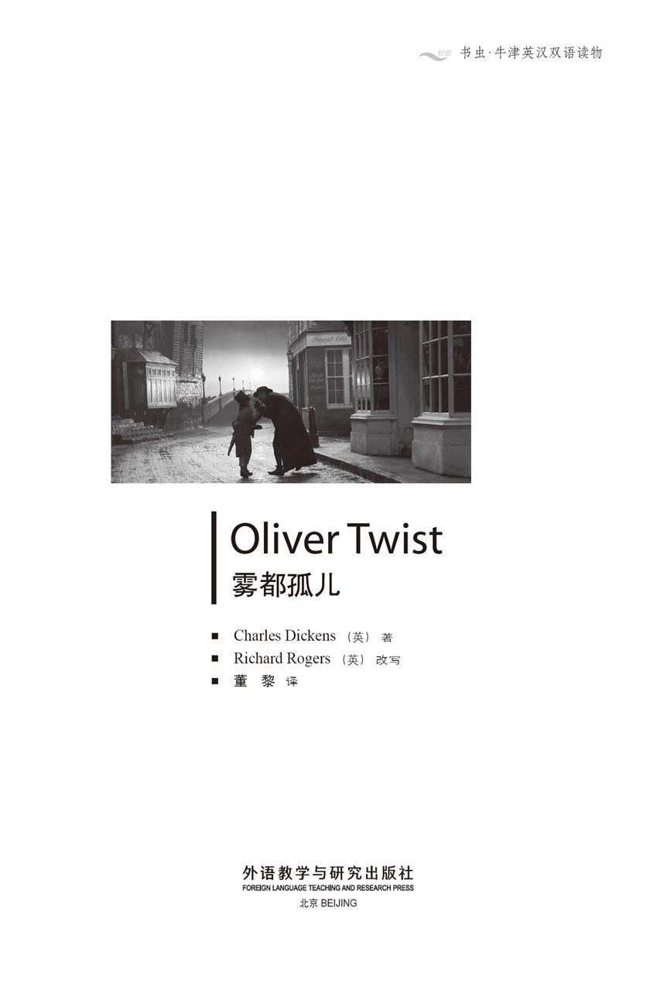
版权页
京权图字01-96-1588
Originally published by Oxford University Press, Great Clarendon Street, Oxford. © 1992
This edition is licensed for sale in the People's Republic of China only and not for export therefrom.
'Oxford' is a registered trademark of Oxford University Press.
图书在版编目（CIP）数据
雾都孤儿 = Oliver Twist／（英）狄更斯（Dickens, C. ）著；（英）罗杰斯（Rogers, R. ）改写；董黎译．—北京：外语教学与研究出版社，1997.4（2014.9 重印）
（书虫·牛津英汉双语读物）
ISBN 978-7-5600-1246-9
Ⅰ．雾… Ⅱ．①狄…②罗…③董… Ⅲ．小说—对照读物—英、汉 Ⅳ．H319. 4：I
中国版本图书馆CIP数据核字（97）第06327号
出版人： 蔡剑峰
责任编辑：王霖霖
出版发行：外语教学与研究出版社
社 址：北京市西三环北路19号（100089）
网 址：http://www.fltrp.com
版 次：1997年6月第1版
书 号：ISBN 978-7-5600-1246-9
* * *
凡侵权、盗版书籍线索，请联系我社法律事务部
举报电话：（010）88817519
电子邮箱：banquan@fltrp.com
法律顾问：立方律师事务所 刘旭东律师
中咨律师事务所 殷 斌律师
简介
简 介
《雾都孤儿》一书于1838年首次刊行。当时并不时兴写作反映生活的悲惨现实的小说，但狄更斯存心要使读者震惊。他想要展示出罪犯们的真实面目，揭露出隐藏在伦敦狭小、肮脏的偏僻街道里的恐怖与暴力。因此他为我们写了邪恶的费金，残暴的比尔·赛克斯，以及一大群窃贼强盗。这些人撒谎、欺诈、偷盗，害怕进监狱，害怕刽子手把绞索套到他们的脖颈上，在惴惴不安中生活。
狄更斯写这本书还有一个目的。他试图说明，善良能克服一切艰难险阻。因此，他为我们塑造了小奥利弗·特威斯特——一个孤儿，他被投入一个充满贫困与犯罪的世界，忍饥挨饿，挨打挨骂，从来没有人爱他。他为我们写出了南希——可怜、凄惨、悲苦的南希，她生活在一个残忍的世界中，却挣扎着要忠实于她所爱的人。
而且，正如在一切最好的故事里一样，善良最终战胜了邪恶。
查尔斯·狄更斯（1812—1870）是英国最伟大的小说家之一。他出生于一个穷苦的家庭（他的父亲曾因欠债而入狱），但他后来享有盛名，并且拥有财富。
目录
1 Oliver's early life
1
Oliver's early life
Oliver Twist was born in a workhouse, and when he arrived in this hard world, it was very doubtful whether he would live beyond the first three minutes. He lay on a hard little bed and struggled to start breathing.
Oliver fought his first battle without much assistance from the two people present at his birth. One was an old woman, who was nearly always drunk, and the other was a busy local doctor, who was not paid enough to be very interested in Oliver's survival. After all, death was a common event in the workhouse, where only the poor and homeless lived.
However, Oliver managed to draw his first breath, and then announced his arrival to the rest of the workhouse by crying loudly. His mother raised her pale young face from the pillow and whispered, 'Let me see the child, and die.'
The doctor turned away from the fire, where he had been warming his hands. 'You must not talk about dying yet,' he said to her kindly. He gave her the child to hold. Lovingly, she kissed the baby on its forehead with her cold white lips, then stared wildly around the room, fell back — and died.
'Poor dear!' said the nurse, hurriedly putting a green glass bottle back in the pocket of her long skirt.
The doctor began to put on his coat. 'The baby is weak and will probably have difficulties,' he said. 'If so, give it a little milk to keep it quiet.' Then he looked at the dead woman. 'The mother was a good-looking girl. Where did she come from?'
'She was brought here last night,' replied the old woman. 'She was found lying in the street. She'd walked some distance, judging by her shoes, which were worn to pieces. Where she came from, where she was going to, or what her name was, nobody knows.'
The doctor lifted the girl's left hand. 'The old story,' he said sadly, shaking his head. 'No wedding ring, I see. Ah! Good night.'
And so Oliver was left with only the drunken nurse. Without clothes, under his first blanket, he could have been the child of a king or a beggar. But when the woman dressed him later in rough cotton clothes, yellow with age, he looked exactly what he was — an orphan in a workhouse, ready for a life of misery, hunger, and neglect.
Oliver cried loudly. If he could have known that he was a workhouse orphan, perhaps he would have cried even more loudly.
There was no one to look after the baby in the workhouse, so Oliver was sent to a special 'baby farm' nearby. There, he and thirty other children rolled around the floor all day, without the inconvenience of too much food or too much clothing. Mrs Mann, the old woman who 'looked after' them, was very experienced. She knew what was good for children, and a full stomach was very dangerous to their health. She also knew what was good for herself, so she kept for her own use the money that she was given for the children's food. The board responsible for the orphans sometimes checked on the health of the children, but they always sent the beadle, a kind of local policeman, to announce their visit the day before. So whenever the board arrived, of course, the children were always neat and clean.
This was the way Oliver was brought up. Consequently, at the age of nine he was a pale, thin child and short for his age. But despite frequent beatings by Mrs Mann, his spirit was strong, which was probably the reason why he managed to reach the age of nine at all.
On Oliver's ninth birthday, Mr Bumble the beadle came to the house to see Mrs Mann. Through the front window Mrs Mann saw him at the gate, and turned quickly to the girl who worked with her.
'Quick! Take Oliver and those others upstairs to be washed!' she said. Then she ran out to unlock the gate. (It was always kept locked to prevent official visitors walking in unexpectedly.)
'I have business to talk about,' Mr Bumble told Mrs Mann as he entered the house. He was a big fat man, often bad-tempered, and was full of self-importance. He did not like to be kept waiting at a locked gate.
Mrs Mann took his hat and coat, placed a chair for him, and expressed great concern for his comfort. 'You've had a long walk, Mr Bumble,' she said, 'and you must be thirsty.' She took out a bottle from the cupboard.
'No, thank you, Mrs Mann. Not a drop.' He waved the bottle away.
'Just a little drop, Mr Bumble, with cold water,' said Mrs Mann persuasively.
Mr Bumble coughed. 'What is it?' he asked, looking at the bottle with interest.
'Gin. I keep it for the children's medicine drink.'
'You give the children gin, Mrs Mann?' asked Mr Bumble, watching as she mixed his drink.
'Only with medicine, sir. I don't like to see them suffer.'
'You're a good woman, Mrs Mann.' Mr Bumble drank half his glass immediately. 'I'll tell the board about you. Now — the reason why I'm here. Oliver Twist is nine years old today. We've never been able to discover anything about his parents.'
'Then how did he get his name?'
' I gave it to him,' said Mr Bumble proudly. 'We follow the alphabet. The last one was an S—Swubble. Then it was T, so this one is Twist. The next one will be Unwin. Anyway, Oliver Twist is now old enough to return to the workhouse. Bring him here, please.' While Mrs Mann went to get him, Mr Bumble finished the rest of his gin.
Oliver, his face and hands now almost clean, was led into the room.
'Will you come along with me, Oliver?' asked Mr Bumble in a loud voice.
Oliver was very glad to be free of Mrs Mann's violence, but he said nothing because she was angrily shaking her finger at him. However, as the gate closed behind Oliver, he burst into tears. He was leaving behind the other children, the only friends he had, and he realized at that moment how lonely he was in the world.
Mr Bumble walked on with long steps, with Oliver on his short little legs running beside him. The feeling of contentment produced by gin-and-water had now disappeared, and the beadle was in a bad mood once more.
Back at the workhouse, Oliver was taken to see the board. He stood in front of ten fat men who were sitting around a table.
'What's your name, boy?' asked a particularly fat man with a very round, red face.
Oliver was frightened at the sight of so many people, and started to cry.
'Why are you crying?'
The beadle hit him on the back, and so naturally Oliver cried even more.
'The boy is a fool,' one member of the board announced.
'You know you have no father or mother,' said the first man, 'and that you have been brought up with other orphans?'
'Yes, sir,' replied Oliver, crying bitterly.
'Why is the boy crying?' repeated the other man, puzzled.
'You have come here to be educated,' continued the fat man, 'so you will start working here tomorrow at six o'clock.'
Oliver was led away to a large room, where, on a rough hard bed, he cried himself to sleep.
The room in the workhouse where the boys were fed was a large stone hall, and at one end the master and two women served the food. This consisted of a bowl of thin soup three times a day, with a piece of bread on Sundays. The boys ate everything and were always hungry. The bowls never needed washing. The boys polished them with their spoons until they shone. After three months of this slow starvation, one of the boys told the others he was so hungry that one night he might eat the boy who slept next to him. He had a wild hungry eye, and the other boys believed him. After a long discussion, they decided that one of them should ask for more food after supper that evening, and Oliver was chosen.
The evening arrived; the soup was served, and the bowls were empty again in a few seconds. Oliver went up to the master, with his bowl in his hand. He felt very frightened, but also desperate with hunger.
'Please, sir, I want some more.'
The master was a fat, healthy man, but he turned very pale. He looked at the little boy in front of him with amazement. Nobody else spoke.
'What?' he asked at last, in a faint voice.
'Please, sir,' replied Oliver, 'I want some more.'
The master hit him with the serving spoon, then seized Oliver's arms and shouted for the beadle. The beadle came quickly, heard the dreadful news, and immediately ran to tell the board.
'He asked for more?' Mr Limbkins, the fattest board member, asked in horror. 'Bumble — is this really true?'
'That boy will be hanged!' said the man who earlier had called Oliver a fool. 'You see if I'm not right.'
Oliver was led away to be locked up, and a reward was offered to anybody who would take him away and use him for work.
workhouse n. public institution for homeless people. 贫民习艺所；救贫院。
struggle v. fight, make great efforts. 奋斗；挣扎。
assistance n. help. 帮助；援助。
announce v. make known. 宣布；通告。
blanket n. thick, wollen covering used on beds. 毛毯。
orphan n. person who has lost one or both of its parents by death. 孤儿。
misery n. state of being miserable. 悲惨。
inconvenient adj. causing discomfort, trouble or annoyance. 使人不便的；引起困扰的。
board n. group of persons controlling a business, or a government department. 掌管一项事务或政府部门的一批人员。
responsible adj. (of a person) legally or morally liable for carrying out a duty, for the care of sth or sb. 应负责的。
beadle n. parish officer who helped the priest by keeping order in church, giving out money to the poor, etc. 教区助理员。
gin n. colourless alcoholic drink distilled from grain or malt and flavoured with juniper berries, often drunk with tonic water. 杜松子酒。
alphabet n. the letters used in writing a language, arranged in order. 字母表。
violence n. state of being violent. 暴力。
burst v. suddenly begin to cry. 突然大哭。
mood n. state of mind or spirits. 心境；情绪。
particularly adv. in a special manner. 特别地。
puzzle v. cause sb to be perplexed. 使某人困惑。
polish v. make or become smooth and shiny by rubbing. 磨光；擦光。
starvation n. suffering caused by lack of food. 饥饿。
desperate adj. filled with despair and ready to do anything, regardless of danger. 因绝望而不惜冒险的。
amazement v. state of being filled with great surprise or wonder. 惊异。
faint adj. not clear. 模糊不清的。
dreadful adj. causing great fear and anxiety. 可怕的。
reward n. recompense for service or merit. 报酬；报答。
奥利弗的童年
1 奥利弗的童年
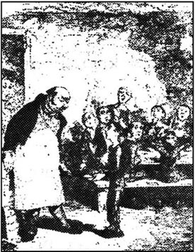
奥利弗·特威斯特出生在一家济贫院里，他来到这个艰难的人世的那一刻，是否能活过三分钟都是很难说的。他躺在一张小硬板床上，挣扎着开始呼吸。
他出生时在场的两个人没有给他什么帮助，这使得奥利弗要独自承当他的第一场战斗。其中一个是位老妇人，她几乎总是喝得醉醺醺的；另一个则是当地一位忙碌的医生，这位医生没有得到足够的报酬，所以对奥利弗能否活下来并不很在意。在济贫院这个只有穷人和无家可归的人待的地方，死亡毕竟是一件非常平常的事。
不管怎样，奥利弗总算尽力吸进了第一口气，然后，他以响亮的哭声向济贫院里其他的人宣告自己的到来。他的母亲从枕头上抬起了年轻而苍白的脸，用微弱的声音说：“让我看一眼孩子，我就可以死了。”
正在火炉上烤手取暖的医生转过身来，好心地对她说：“别说什么死不死的了。”他把孩子递过去让她抱在怀里。她用冰冷而毫无血色的嘴唇怜爱地在孩子的额头上亲了一下，然后急切地在屋里四处环顾一圈，便向后倒去，咽了气。
“可怜的东西！”老看护说着，急忙将一个绿色的小玻璃瓶揣回长裙子的兜里。
这时医生开始穿外衣。“这孩子太弱，恐怕会有麻烦，”他说，“如果真是这样，给他喂点牛奶，好让他别哭。”然后，他又转过脸看了一眼死去的女人，说：“这母亲长得还挺漂亮。她是从哪儿来的？”
“她是昨天夜里被送到这儿来的，”老妇人回答道。“她倒在马路上，被人发现了。她脚上那双鞋子已经磨得破破烂烂的了，由此可以看出她是从很远的地方来的。她从哪儿来，要到哪儿去，叫什么名字，没人知道。”
医生拉起那年轻女人的左手，摇摇头，伤心地说：“又是老一套。没有结婚戒指，果然如此。唉！晚安。”
奥利弗就这样被留下了，由那位醉醺醺的看护一个人看着。他光着身子，裹在毕生第一块毯子里，既可以是国王的儿子，也可以是乞丐的儿子。可后来老妇人给他穿上了由于年头太久而发了黄的粗棉布衣服，这时，他看上去和他的身份完全一致了——一个济贫院的孤儿，准备好了去过一种充满苦难、饥饿和忽视的生活。
奥利弗大声哭着。假如他已经知道自己是一个济贫院的孤儿，他可能会哭得更响些。
在济贫院里没有专人照顾婴儿，所以奥利弗被送进了附近一家专门的“育婴堂”。在这里，奥利弗与其他三十多个孩子每天在地上滚爬着，没有过多的衣物和食物来麻烦他们。曼太太“照顾”着这些孩子，这老女人非常有经验。她知道什么对孩子们有好处，知道吃饱肚子对孩子们的身体是非常有害的。同时她也知道什么对她自己有好处，于是她把人家给孩子们的伙食费都留给自己。负责孤儿事务的地方董事会有时会来检查孩子们的健康状况，可他们往往在前一天派执事去通告他们要来访问，执事是一种地方警察。所以，无论他们什么时候来，孩子们准是个个头净脚净的。
奥利弗就是这样长大的，因此，他到了九岁时，还非常苍白瘦小，比同龄孩子矮一大截。尽管常常遭到曼太太的毒打，他的意志却很坚强。这大概也是他竟然能活到九岁的缘故吧。
奥利弗九岁生日的这天，执事班布尔先生来育婴堂看曼太太。曼太太透过楼前的窗户看见他站在大门口，慌忙转向和她一起干活的女孩，说道：
“赶快！把奥利弗和其他孩子都带到楼上洗洗！”然后她匆忙跑去开大门。（为了防止官方人员料想不及的来访，这大门常常是锁着的。）
“我有点事要跟你谈。”班布尔先生跟曼太太说着，走进了屋子。他是个身材肥胖、脾气暴躁、妄自尊大的人。他可不喜欢被关在门外长时间地等候。
曼太太接过了他的帽子和外衣，替他端过一把椅子，并且对他是否舒适表示了极大的关心。“班布尔先生，您大老远地走来，一定是渴了。”她说着从橱子里拿出了一个瓶子。
“不，谢谢，曼太太，我一滴都不喝。”他挥手推开瓶子。
“只稍稍来一点儿，班布尔先生，这是加了冰水的。”她极力地劝说着。
班布尔先生咳嗽了一声。“是什么？”他问道，并饶有兴趣地看着瓶子。
“杜松子酒，我这是留着给孩子们吃药用的。”
“曼太太，你给孩子们喝杜松子酒？”班布尔先生看着她给自己兑酒，问道。
“只是吃药的时候给他们喝上一点儿，先生。我不忍心看着他们受罪。”
“曼太太，你真是个好心的女人。”班布尔先生马上喝下了半杯。“我会在董事会那里替你美言的。现在言归正传，说说我今天来这儿的目的。奥利弗·特威斯特今天已经整整九岁了，迄今为止，我们没有打听到关于他父母的任何消息。”
“那么，他是怎么有了这个姓的？”
“这姓是我给他起的，”班布尔先生自豪地说，“我们是按照字母表的顺序给他们安排姓氏的，前一个是S，叫斯瓦勃（Swubble），轮到他是字母T，所以就叫特威斯特（Twist），下一个叫恩温（Unwin）。不管怎么说，奥利弗已经长大了，该回到济贫院去了。请把他带到这儿来。”曼太太去带奥利弗时，班布尔先生喝干了杯子里剩下的杜松子酒。
奥利弗手和脸差不多洗干净了，他被带了进来。
“你愿意跟我走吗，奥利弗？”班布尔先生大声问。
奥利弗特别渴望能尽早逃脱曼太太的暴虐统治，可他却没吭声，因为这时她正恶狠狠地向他暗暗摇着手指头。可是当大门在奥利弗身后关上时，他突然涕泪横流。他就要离开其他的孩子们了，而这些孩子是他仅有的朋友，此刻，他顿时感到自己在这个世界上是多么孤独。
班布尔先生在前面大步流星地走着，奥利弗挪动短腿一路小跑地跟在旁边。喝了加水的杜松子酒所产生的心满意足的感觉这会儿已荡然无存，这位执事的情绪又不好了。回到了济贫院，奥利弗被带去见董事会的人。十个体态臃肿、肥头大耳的人围坐在一张桌子周围，他站在他们面前。
“小子，你叫什么名字？”其中一个长着滚圆红脸的特别胖的人问道。
奥利弗被眼前这么多的人给吓哭了。
“你哭什么？”
执事在奥利弗的背上揍了一下，当然这一下使他哭得更厉害了。
“他是个傻子。”一位董事大声说。
“你知道你没有父母，是和那些孤儿一起长大的吗？”第一位先生说。
“我知道，先生。”奥利弗伤心地回答道。
“这孩子哭什么？”另外那位先生莫名其妙地问。
“你是到这儿来受教育的，”那个胖子接着说，“所以从明天早晨六点钟起，你得在这儿干活。”
奥利弗又从这儿被带到了一间大屋子里。他躺在屋里一张粗糙的木板床上，哭着哭着就睡着了。
济贫院里男孩子们吃饭的地方是一间有石板墙石板地的大屋子，在屋子的一头，管事的和两位女佣负责给孩子们打饭。其实这一日三餐顿顿只是一碗稀粥，只有在星期天才加一片面包。孩子们把碗里的东西吃得一干二净，还是饥肠辘辘。他们的碗根本不用刷洗。孩子们用勺子把碗刮得锃亮。这样缓慢的挨饿持续了三个月后，一天，一个男孩跟别的男孩子说他太饿了，没准哪天晚上他会吃了睡在他边上的人。他那饥饿得发狂的眼神让别的男孩无法不相信他的话。经过长时间的商量，他们决定必须有一个人在当天晚饭后，去请求多给点儿吃的。结果，奥利弗被选中了。
天黑了，开晚饭了，没有几秒钟，孩子们的碗就又一干二净了。奥利弗站了起来，手里捧着碗，心惊胆战地朝管事的走了过去。由于极度饥饿，他横下了一条心。
“劳驾，先生。我还想要一点儿。”
管事的是一个脑满肠肥的壮汉，但他一下子显得大吃一惊，脸都白了。他惊讶地看着站在他面前的这个小男孩。这时屋里鸦雀无声。
“什么？”他终于回过味来，用无力的声音问道。
“劳驾，先生，”奥利弗又说了一遍，“我还想要一点儿。”
管事的用盛粥的勺子向奥利弗打去，过后又抓住他的胳膊大声地叫唤着执事。执事马上赶来了，得知了这件可怕的事，并立即跑去向董事会汇报。
“他想要更多的饭吃？”董事会头号大胖子利姆金斯先生震惊地问，“班布尔——难道真是这样吗？”
“这孩子将来是要上绞刑架的！”起初说奥利弗是个傻子的那位先生嚷嚷着，“你就看我说得对不对吧。”
奥利弗被带走，锁在一间屋子里。董事会宣布，谁把这孩子领去干活，谁就会得到奖赏。
2 Oliver's first job
2
Oliver's first job
Oliver stayed a prisoner alone in the dark room for a week. He cried bitterly all day, and when the long night came, he spread his little hands over his eyes to shut out the darkness, and tried to sleep. He was given freezing water to wash with, and was beaten daily by Mr Bumble in front of all the other boys in the hall, as a warning to them.
One day Mr Bumble met the local undertaker, Mr Sowerberry, outside the workhouse.
'Do you know anybody who wants to train a boy for work, Mr Sowerberry?' Mr Bumble pointed at the notice on the wall above him, which offered five pounds to anybody who would take Oliver Twist for work.
Mr Sowerberry rubbed his chin and thought for a while. 'I pay enough for the poor with my taxes,' he said, 'so why shouldn't I be able to make use of them in my work? Yes, I'll take the boy myself.'
And so the board agreed to send Oliver to work for the undertaker. The necessary papers were signed. Oliver's small possessions were put into a brown paper parcel, and he was led to Mr Sowerberry's house by Mr Bumble. As they walked along, tears began to run down Oliver's face.
'What is it this time?' asked Mr Bumble impatiently. 'Don't be so ungrateful. This gentleman is going to look after you.'
'It's just that I'm so lonely, sir!' said the child. 'Everybody hates me. Please don't be angry with me, sir!'
Even Mr Bumble felt a little pity. He coughed, told Oliver to dry his eyes and be a good boy, and walked on with him in silence.
The undertaker had just finished work for the day when Mr Bumble entered his shop.
'Here, I've brought the boy,' said the beadle.
Oliver bowed to the undertaker, who raised his candle to get a better view of the boy. 'Mrs Sowerberry,' he called, 'come and have a look.'
His wife, a short, thin woman with a disagreeable face, came out to see. 'He's very small,' she said immediately.
'He is,' agreed Mr Bumble, 'but he'll grow, Mrs Sowerberry.'
'Yes,' she said crossly, 'when he eats our food. Go on, get downstairs.' She pushed Oliver downstairs into a damp, dark kitchen, and called to the girl working down there. 'Here, Charlotte, give this boy some meat that the dog left — if he thinks it's good enough for him.'
Oliver tore the meat to pieces with his teeth as if he were a wild animal. Mrs Sowerberry watched him in silent horror, already thinking about her future food bills, then took him upstairs to the shop.
'You'll sleep here, among the coffins,' she said.
Oliver stared around the dark, airless shop at the coffins, some finished, some only half-made. He trembled at the thought of ghosts. His bed was a small hole in the floor, and looked very like a grave.
But it was not only the room that depressed Oliver. He felt very lonely, with no friends and no one to care for him. As he lay on the bed, he found himself wishing that it really was his grave.
The next morning he was woken up by someone kicking at the shop door.
'Open the door, will you?' shouted a voice through the keyhole.
'Yes, sir.'
'I suppose you're the new boy,' said the voice through the keyhole. 'How old are you?'
'Ten, sir.'
'Then I'll hit you when I get in,' said the voice.
Oliver was experienced enough to know that the promise was probably true. He opened the door with a shaking hand, then looked up and down the street. All he could see was a large boy wearing the uniform of one of the charity schools, where the children of the very poor used to go.
'Did you want a coffin?' asked Oliver, innocently.
The charity-boy looked at him fiercely. 'You'll be needing a coffin soon, Workhouse, if you make jokes like that! I'm Mister Noah Claypole, and you're working under me. Now, hurry up and open the curtains!' As he said this, he kicked Oliver and entered the shop. He was a big, clumsy boy of about fourteen, with a large head and very small eyes. Added to these attractions were a red nose and dirty yellow trousers.
The boys went down to breakfast, which the girl Charlotte had made for them. She gave an extra piece of meat to Noah, then told Oliver to hurry up as it was his job to look after the shop.
'Did you hear that, Workhouse?' shouted Noah.
'He heard, Noah,' said Charlotte. 'Leave him alone.'
'Why?' asked Noah. 'All his relations have already left him alone. His mother and father aren't going to interfere with him!' Charlotte and Noah both started laughing loudly. Oliver sat alone in the corner, eating old bits of bread.
Noah was a charity-boy, but not a workhouse orphan; he at least knew who his parents were. But for a long time all the local shop-boys had insulted him because he wore the uniform of a charity-boy. Now fortune had brought him a creature in an even lower position in society than himself. Noah intended to repay to Oliver every insult he had ever received, and to make the new boy's life a misery.
After a few weeks, Mr Sowerberry decided that he liked Oliver's appearance enough to train him in the undertaking business. Oliver's permanent expression of sadness was very suitable, the undertaker thought, for collecting dead bodies from houses and accompanying the coffins to funerals.
One day Mr Bumble came to tell them about a woman who had died in an extremely poor part of the town, and Sowerberry and Oliver went to collect the body. They went down dirty narrow streets where the houses on either side were tall and large, but very old. Some of the houses were almost falling down, and had to be supported by huge blocks of wood. The area was so poor that even the dead rats in the street looked as though they had died of hunger.
They found the right house, and climbed the dark stairs to a miserable little room. Some children watched them from the shadows as they entered. Something lay beneath a blanket on the floor in one corner. A man and an old woman stood near the body. Oliver was afraid to look at them. With their thin faces and sharp teeth, they looked like the rats he had seen outside.
As Sowerberry began to measure the body for a coffin, the man knelt on the floor and cried out, 'She starved to death, I tell you! That's why she died!' He fell to the floor, and all the children behind him started to cry. Sowerberry and Oliver, their work done, left as fast as they could.
They returned the next day with the coffin and four men from the workhouse who were to carry it. The man and the old woman followed the coffin to the church, and waited silently by the grave for the priest to arrive. When at last he came, he hurried through the burial prayers, and as quickly as possible (it was only a job, after all) the coffin was put into the ground. At this point the husband, who had not moved once during his wife's burial — not even during the long wait for the priest — suddenly fainted to the ground and had to have cold water thrown over him.
'So how did you like it, Oliver?' asked Sowerberry later, as they walked home.
'Not very much, sir,' Oliver answered truthfully.
'You'll get used to it, my boy.'
Oliver wondered how long that would take, and remained silent all the way back to the shop, thinking about everything that he had seen and heard.
bitterly adv. sadly. 痛苦地。
undertaker n. one whose business is to prepare the dead for burial or cremation and manage funerals. 承办殡葬者。
possession n. sth possessed; property. 所有物；财产。
bow v. bend the head or body as a sign of respect or as a greeting, etc. 鞠躬。
crossly adv. in a bad-tempered manner. 坏脾气地。
damp adj. having some moisture (in or on). 潮湿的。
coffin n. box or case for a dead person to be placed in and then buried. 棺材。
ghost n. spirit of a dead person appearing to sb still living. 鬼。
grave n. hole dug in the ground for a corpse. 墓穴。
charity n. kindness in giving help to the poor. 慈善。
innocent adj. knowing nothing of evil or wrong. 天真无邪的。
curtain n. piece of cloth or lace hung up at a window or door. 窗帘。
clumsy adj. heavy and ungraceful in movement or construction. 笨拙的。
interfere v. come into opposition．妨碍。
insult v. speak or act in a way that hurts a person's feelings or dignity 侮辱。
extremely adv. to a very high degree. 极端地。
shadow n. area of shade, dark shape, thrown on the ground, etc by sth which cuts off the direct rays of light. 阴影。
beneath prep. below, under (neath). 在……下面。
remain v. continue to be 依然。
silent adj. saying little or nothing. 沉默的。
奥利弗的第一个工作
2 奥利弗的第一个工作
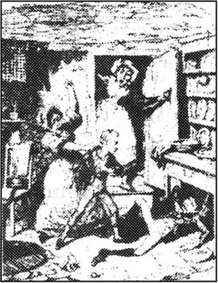
奥利弗单独一人在小黑屋里被关了一星期。他整天都伤心地流泪，每当漫长的黑夜来临，他就用两只小手捂住眼睛，来驱走黑暗，力求入睡。每天他只能用带着冰碴的水洗脸。为了杀一儆百，奥利弗每天要当着其他孩子的面挨班布尔先生一顿毒打。
一天，班布尔先生在济贫院外面遇见了当地的棺材店老板索尔贝里先生。
“索尔贝里先生，您知道谁想要带个学徒吗？”班布尔指着墙上方的一个通告说。上面写着，愿意领走奥利弗·特威斯特去干活的人可以得到五英镑的奖金。
索尔贝里先生摸着下巴想了一会儿。“我纳不少的税金养活穷人，干吗不让他们去为我干活呢？对，我领走这孩子。”
这样，董事会同意让棺材店老板领走奥利弗去干活。必要的手续都办理了，奥利弗仅有的一点东西放在一个小牛皮纸包里。他由班布尔先生带着去了索尔贝里先生家。他们一面走着，奥利弗一面又泪流满面。
“这回又怎么了？”班布尔先生不耐烦地问，“别那么不识好人心，这位先生会照顾你的。”
“我感到太孤单了，先生！”这孩子说，“人人都讨厌我。请别生我的气，先生！”
连班布尔先生也有点可怜他了。他咳了一声，嘱咐奥利弗擦干眼泪，要当个乖孩子。然后两人便径直朝前走着，谁也不吭声了。
班布尔先生走进铺子时，棺材店老板刚忙完一天的活计。
“瞧！孩子我给您送来了。”执事说。
奥利弗朝着店老板鞠了一躬。索尔贝里先生举起蜡烛台打量着奥利弗，嘴里喊着：“太太，快来看看。”
他的妻子是个瘦小枯干、面目可憎的女人。她走出来看了一眼，马上说：“他太小了。”
“是的，”班布尔先生说，“可他还会长的，索尔贝里太太。”
“那倒是，”她不痛快地说，“他吃了我们家的饭是会长大的。走，下楼去。”她连推带搡地把奥利弗推进了一间潮湿黑暗的厨房里，并朝着在那儿干活的女孩子说：“喂，夏洛特，把狗吃剩的肉给这孩子吃点——如果他不嫌弃的话。”
奥利弗像野兽一样用牙撕啃着肉。索尔贝里太太目瞪口呆地看着他，心里已经在想着她往后的伙食负担了。过后，她又把他带到楼上的铺面里。
“你就睡在这些棺材中间。”她说。
奥利弗呆呆地环顾四周。原来这是一间黑暗、闷气的作坊，里面放着一些做好了和正在做着的棺材。看着这些，他满脑子都是鬼怪，不由得毛骨悚然。他睡在地板上一个狭小的洞里，看上去真像个墓穴。
使奥利弗沮丧的不仅仅是这个住处。他感到非常孤独，没有朋友，没人关心他。他躺在床上时，发现自己真希望就是躺在墓穴里了。
第二天一大早，他被店门口一阵踢门声惊醒。
“开开门，好吗？”有人透过钥匙孔喊道。
“就来，先生。”
“你大概就是新来的学徒吧？”从钥匙孔里传进来的声音问道，“你多大了？”
“十岁了，先生。”
“那么我进去就揍你一顿。”那声音接着说。
奥利弗很有经验，认为他很可能真的说到做到。他用颤抖的手打开了门，然后，来回扫视了一下街面，只看见一个穿着一家慈善学校制服的大个子男孩。慈善学校是穷人家孩子上的学校。
“您要棺材吗？”奥利弗无知地问。
这个慈善学校的男孩凶狠地看着他。“你才马上要用棺材了。如果你是那么开玩笑的话，我就管你叫济贫院！我是诺厄·克莱普尔先生，你是在我手下干活的。现在，马上打开帘子！”他说着，抬腿朝奥利弗踢了一脚，然后走进了铺子。他大约十四岁，大块头，笨手笨脚的，一个大脑袋上长了一双很小的眼睛。除了这些非凡品貌以外，他还有一个红鼻子和一条脏兮兮的黄裤子。
两个男孩到楼下去吃那个叫做夏洛特的姑娘为他们准备好的早饭。她多给了诺厄一块肉，然后又让奥利弗快点吃，因为照看铺子是他的事。
“你听见了吗，济贫院？”诺厄嚷嚷道。
“他听见了，诺厄。”夏洛特说，“别管他。”
“为什么？”诺厄问道，“他的亲戚早就不管他了。他父母亲再也不会来烦他了！”夏洛特和诺厄两人都大声笑了起来，奥利弗独自坐在角落里吃着一点剩面包。
诺厄是个慈善学校的男孩，但并不是济贫院里的孤儿；他起码还知道自己的父母是谁。但就因为他穿着慈善学校的制服，有好长时间当地店铺里的男孩子们都侮辱他。这一次运气给他带来了一个比他社会地位更低下的家伙。诺厄决定要把以往所受的凌辱都转送给奥利弗，让这新来的男孩没有好日子过。
几星期之后，索尔贝里先生看够了奥利弗，决定要训练他去做殡仪生意。因为奥利弗老是一副苦相，棺材店老板认为他很合适做这件事，他想让他到死者家里搬运尸体和陪伴棺柩到墓地去。
一天，班布尔先生来告诉他们，有一位住在本镇贫民区的女人死了。索尔贝里先生和奥利弗去收尸，他们沿着肮脏狭窄的街道朝前走着，路两边的房屋都是又高又大，但过于陈旧了。有些房屋几乎要倒塌了，不得不用粗大的圆木支撑着。这个地方太穷了，连路上的死老鼠好像都是饿死的。
他们找到了死者的家，爬上黑暗的楼梯，走进了一个破破烂烂的小屋。几个孩子从黑影里看着他们走进来。在屋子一角的地上，一条毯子蒙着什么东西，旁边站着一个男人和一个老妇。奥利弗害怕看他们，他们面孔削瘦，牙齿尖锐，看起来就像他在外面街上看到的老鼠。
索尔贝里先生开始量尸体，看需要多大的棺材。站在旁边的男人跪在地上，大声地喊了起来：“她是活活给饿死的呀！我告诉你，她就是为这个死的！”他倒在地上，身后的孩子们都哭了起来。索尔贝里和奥利弗忙完了活计，就赶快离开了。
第二天，他们送来了棺材，一起来的还有四个从济贫院来抬棺材的人。那个男人和老妇跟在棺材的后面来到了教堂，默默地站在墓穴旁等着牧师的到来。牧师终于来了，他匆忙地主持了葬礼的祈祷仪式（毕竟这只是一种活计）。棺材尽可能快地放进了墓穴，就在这时，这位在妻子葬礼中一直一动不动的丈夫——即使在长时间等待牧师时也不曾动一下——晕倒在地上了。人们不得不在他的脸上洒了一些凉水。
“奥利弗，你感觉怎么样？”事后，索尔贝里在往家走的路上问。
“感觉不太好，先生。”奥利弗如实说道。
“你会习惯的，孩子。”
奥利弗不知道这需要多长时间，在回铺子去的路上他一直一声不吭，回想着自己所见所闻的一切。
3 Oliver goes to London
3
Oliver goes to London
Oliver was now officially an undertaker's assistant. It was a good, sickly time of year, and coffins were selling well. Oliver gained a lot of experience in a short time, and was interested to see how brave some people were after a death in the family. During funerals for some rich people, for example, he saw that the people who had cried the loudest in church usually recovered the fastest afterwards. He noticed how in other wealthy families the wife or the husband often seemed quite cheerful and calm despite the recent death — just as if nothing had happened. Oliver was very surprised to see all this, and greatly admired them for controlling their sadness so well.
He was treated badly by most of the people around him. Noah was jealous because Oliver went out to burials while he was left back in the shop, so he treated him even worse than before. Charlotte treated him badly because Noah did. And Mrs Sowerberry was his enemy because Mr Sowerberry was supposed to be his friend.
One day something happened which might seem unimportant, but which had a great effect on Oliver's future. Noah was in a particularly bad mood one dinnertime, and so he tried to make Oliver cry by hitting him, pulling his hair, and calling him horrible names. This was all unsuccessful, so he he tried personal insults.
'Workhouse, how's your mother?' he asked.
'She's dead,' replied Oliver, his face going red with emotion.
Noah hoped that Oliver was going to cry, so he continued. 'What did she die of, Workhouse?'
'Of a broken heart, I was told.' And a tear rolled down Oliver's cheek.
'Why are you crying, Workhouse?'
Oliver remained silent, and Noah grew braver. 'You know, I feel very sorry for you, Workhouse, but the truth is your mother was a wicked woman.'
Oliver seemed suddenly to wake up. 'What did you say?'
'She was so bad it was lucky she died, or she would have ended up in prison, or hung.'
His face bright red with anger, Oliver jumped up, seized Noah's throat, and shook the older boy so violently that his teeth nearly fell out. Then he hit him with all his strength and knocked him to the ground.
'He'll murder me!' screamed Noah. 'Charlotte! Help! Oliver's gone mad —'
Charlotte and Mrs Sowerberry ran in and screamed in horror. They took hold of Oliver and began to beat him. Then Noah got up and started to kick him from behind. When they were all tired, they forced Oliver, who was still fighting and shouting, into the cellar and locked it.
Mrs Sowerberry sat down, breathing heavily. 'He's like a wild animal!' she said. 'We could all have been murdered in our beds!'
'I hope Mr Sowerberry doesn't take any more of these dreadful creatures from the workhouse,' said Charlotte. 'Poor Noah was nearly killed!' Mrs Sowerberry looked at Noah sympathetically.
Noah, who was twice Oliver's size, pretended to rub tears from his eyes.
'What shall we do?' cried Mrs Sowerberry. 'He'll kick that door down in ten minutes.' They could hear Oliver banging and kicking at the cellar door. 'Noah — run and get Mr Bumble.'
So Noah ran through the streets as quickly as he could to fetch the beadle. When he reached the workhouse, he waited for a minute to make sure his face was suitably tearful and frightened.
As soon as Mr Bumble came out, Noah cried, 'Mr Bumble! Mr Bumble! It's Oliver Twist, sir. He's become violent. He tried to murder me, sir! And Charlotte, and Mrs Sowerberry as well.'
Mr Bumble was shocked and angry. 'Did he? I'll come up there immediately and beat him with my stick.'
When he arrived at the shop, Oliver was still kicking wildly at the cellar door.
'Let me out!' he shouted from the cellar, when he heard Mr Bumble's voice. 'I'm not afraid of you!'
Mr Bumble stopped for a moment, amazed and even rather frightened by this change in Oliver. Then he said to Mrs Sowerberry, 'It's the meat that's caused this, you know.'
'What?'
'Meat, madam. You've fed him too well here. Back in the workhouse this would never have happened.'
'I knew I was too generous to him,' said Mrs Sowerberry, raising her eyes to the ceiling.
At that moment Mr Sowerberry returned and, hearing what had happened (according to the ladies), he beat Oliver so hard that even Mr Bumble and Mrs Sowerberry were satisfied. Mr Sowerberry was not a cruel man, but he had no choice. He knew. that if he didn't punish Oliver, his wife would never forgive him.
That night, alone in the room with the coffins, Oliver cried bitter, lonely tears. He did not sleep, and very early in the morning, before anyone was awake, he quietly unlocked the shop door and left the house. He ran up the street and through the town as far as the main road, where he saw a sign that told him it was just seventy miles from there to London. The name London gave the boy an idea. That huge place! Nobody, not even Mr Bumble, could ever find him there! He had heard old men in the workhouse say it was a good place for brave boys, and that there was always work there for those that wanted it. It would be the best place for him. He jumped to his feet and walked forward again.
But after only four miles he began to realize just how far he would have to walk. He stopped to think about it. He had a piece of bread, a rough shirt, two pairs of socks and a penny. But he could not see how these would help him get to London any faster, so he continued walking.
He walked twenty miles that day. The only thing he had to eat was his piece of bread and some water which he begged from houses near the road. He slept the first night in a field, feeling lonely, tired, cold and hungry. He was even hungrier the next morning when he woke up, and he had to buy some more bread with his penny. That day he walked only twelve miles. His legs were so weak that they shook beneath him.
The next day he tried to beg for money, but large signs in some villages warned him that anyone caught begging would be sent to prison. Travellers on the road refused to give him money; they said he was a lazy young dog and didn't deserve anything. Farmers threatened to send their dogs after him. When he waited outside pubs, the pub-owners chased him away because they thought he had come to steal something. Only two people were kind enough to feed him: an old woman and a gate-keeper on the road. If they had not given him some food, he surely would have died like his mother.
Early on the seventh morning of his journey, Oliver finally reached the little town of Barnet, just outside London. Exhausted, he sat down at the side of the road. His feet were bleeding and he was covered in dust. He was too tired even to beg. Then he noticed that a boy, who had passed him a few minutes before, had returned, and was now looking at him carefully from the opposite side of the road. After a long time the boy crossed the road and said to Oliver,
'Hello! What's the matter then?'
The boy was about Oliver's age, but was one of the strangest-looking people he had ever seen. He had a dirty, ordinary boy's face, but he behaved as if he were an adult. He was short for his age and had little, sharp, ugly eyes. His hat was stuck on top of his head but it looked as though it would blow off at any minute. He wore a man's coat which reached almost down to his feet, with sleeves so long that his hands were completely covered.
'I'm very tired and hungry,' answered Oliver, almost crying. 'I've been walking for a week.'
'A week! The magistrate's order, was it?'
'The magistrate? What's that?'
'A magistrate's a kind of judge,' explained the surprised young gentleman. He realized Oliver did not have much experience of the world. 'Never mind that. You want some food,' he went on. 'I haven't got much money but don't worry — I'll pay.'
The boy helped Oliver to his feet, and took him to a pub. Meat, bread, and beer were placed before Oliver, and his new friend urged him to satisfy his hunger. While Oliver was eating, the strange boy looked at him from time to time with great attention.
'Going to London?' he asked him finally.
'Yes.'
'Got anywhere to live?'
'No.'
'Money?'
'No.'
The strange boy whistled, and put his arms into his pockets as far as the big coat sleeves would allow him. 'I suppose you want to sleep somewhere tonight, don't you?'
'I do,' replied Oliver. 'I haven't slept under a roof since I started my journey.'
'Well, don't worry. I've got to be in London tonight, and I know a very nice old gentleman there who'll let you live in his place and not even ask you for money!'
Oliver was deeply grateful for this offer of shelter and talked for a long time with his new friend. His name was Jack Dawkins, but he was usually called 'The Artful Dodger'. 'Artful' because he was very clever at getting what he wanted; and 'Dodger' because he was very good at not getting caught when he did something wrong. When he heard this, Oliver felt rather doubtful about having such a friend. However, he wanted first to meet the kind old gentleman in London, who would help him. After that, he could decide whether to continue the friendship with the Artful Dodger.
assistant n. helper. 助手。
sickly adj. frequently ill. 多病的。
wealthy adj. rich. 富有的。
admire v. have a high regard for. 赞赏。
recover v. get back to a former state of health, mental condition, etc. 恢复以前的健康、心理状况等。
emotion n. stirring up, excitement, of the mind or the feelings. （心情或感情的）激动。
wicked adj. bad; wrong; immoral. 坏的；不道德的。
murder v. kill a human being unlawfully and on purpose. 谋杀。
cellar n. underground room for storing coal, wine, etc. 地窖。
creature n. living animal. 畜牲。
sympathetically adv. in a manner of feeling pity and tenderness. 同情地。
pretend v. make oneself appear to be doing sth to deceive others. 佯装。
bang v. hit violently. 猛击。
generous adj. giving, ready to give, freely. 慷慨的。
satisfy v. make contented. 使满意。
forgive v. no longer have hard feelings towards sb. 原谅。
huge adj. very great. 巨大的。
lazy adj. unwilling to work. 懒惰的。
pub n. public house. 酒馆。
chase v. run after in order to capture, kill, overtake or drive away. 驱逐。
exhaust v. use up completely. 用尽：耗尽。
bleed v. lose, send out, blood. 流血。
blow v. (of the wind) cause to move. （指风）刮走。
magistrate n. civil officer acting as a judge in the lowest courts. 地方法官。
urge v. request earnestly. 力劝。
whistle v. blowing through the rounded lips. 吹口哨。
roof n. top covering of a building, tent, etc. （建筑物等）顶。
shelter n. sth that gives safety or protection. 避难所。
dodger n. person who dodges, especially an artful or cunning person. 狡猾的逃避者。
奥利弗到伦敦去
3 奥利弗到伦敦去
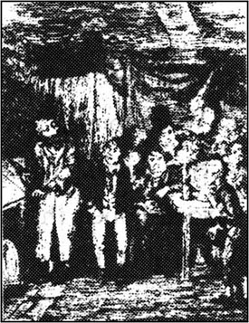
奥利弗现已是棺材店老板的正式助理，这一年年景很好，疾病成灾，棺材生意兴旺。在不长的时间里他就积累了许多经验。他很有兴趣地发现有些人在家里死了人时表现得沉着勇敢。比如说，他发现在一些有钱人的葬礼上，在教堂里哭声最大的人往往都是事后恢复最快的人。他注意到，还有一些富人家，尽管刚刚死了人，但无论死者的妻子还是丈夫，都显得轻松愉快、镇定自若——好像什么都没发生过一样。奥利弗对这些感到不可理解，对他们能很好地克制悲伤不流露于外佩服极了。
他身边的人大都待他极不好。诺厄十分妒忌奥利弗，因为他能出去参加葬礼，而自己却被留在店铺里，所以比以前更加残酷地对待他。夏洛特对他不好，是因为诺厄对他坏。索尔贝里太太跟他是对头，是因为她认为索尔贝里先生是他的朋友。
一天，发生了一件本来看起来好像不很重要的事，可这事对奥利弗的未来却产生了很大的影响。晚餐时，诺厄的心情特别不好，他成心想弄哭奥利弗，就打他，揪他的头发，用各种坏话骂他，但这都无济于事。他便对他进行人格侮辱。
“济贫院，你妈妈呢？”他问道。
“她死了。”奥利弗回答说，由于感情激动，他的脸变红了。
诺厄想让奥利弗哭出来，就接着问：“她是怎么死的，济贫院？”
“有人告诉我她是伤心死的。”一颗泪珠从奥利弗的脸上滚落下来。
“你怎么哭了，济贫院？”
奥利弗不吭声，诺厄胆子大了，更加得寸进尺：“你知道我很同情你，济贫院，但你妈妈其实是个坏女人。”
奥利弗好像猛一激灵。“你说什么？”
“她太坏了，所以死了倒是件好事，否则她最后会被关进监狱或处以绞刑的。”
奥利弗的脸由于气愤而涨得通红。他猛地跳了起来，一把掐住诺厄的喉咙，拼命地摇着那大孩子，差点儿把他的牙齿都摇掉了。接着，他使出全身的力气一拳将他打倒在地。
“他会弄死我的！”诺厄尖声叫喊着，“夏洛特！救命！奥利弗疯了——”
夏洛特和索尔贝里太太跑了进来，害怕得尖叫起来。他们抓住奥利弗拳脚相加。这时诺厄才从地上爬了起来，从背后抬脚猛踢他。直到他们都打累了，他们才将仍在反抗的奥利弗推进地下室，锁了起来。
索尔贝里太太坐下来，喘着粗气说：“他简直像头野兽！我们都有可能被他害死在床上。”
“我真不希望索尔贝里先生再从济贫院里带来这种可怕的东西，”夏洛特说，“可怜的诺厄差点儿被掐死！”索尔贝里太太表示同情地看着诺厄。
诺厄是奥利弗身材的两倍，这会儿他正假装擦着眼泪。
“我们该怎么办？”索尔贝里太太叫喊着，“用不了十分钟他就会把那扇门踢破的。”他们能听见地下室里奥利弗咚咚的敲门踹门声。“诺厄——快去把班布尔先生找来。”
诺厄尽可能快地跑着，穿过了几条街道，去叫执事。他来到了济贫院，先在外面站了一会儿，好确实做到自己的脸上有适当的泪痕和害怕的样子。
班布尔先生从屋里一出来，诺厄就喊了起来：“班布尔先生！班布尔先生！又是奥利弗·特威斯特闹事了。他动手打人，想弄死我，先生！还想害死夏洛特和索尔贝里太太。”
班布尔先生大为震惊，他非常生气。“是吗？我立刻就去，我要用我的手杖狠狠地揍他。”
他来到棺材店时，奥利弗还在发疯似地踹着地下室的门。
“让我出去！”他听到了班布尔先生的声音时，在地下室叫喊着，“我不怕你！”
班布尔先生稍稍站了一会儿，他对奥利弗的变化很吃惊，甚至很有点害怕。然后他对索尔贝里太太说：“这就是肉食造成的结果，你知道。”
“什么？”
“肉，太太，你这里给他吃得太好了。在济贫院里是从来不会发生这种事的。”
“我知道我对他是太厚道了。”索尔贝里太太抬起眼睛看着天花板，说道。
就在这时，索尔贝里先生从外面回来了，他知道了发生的一切（是从女人们的嘴里听说的），就狠狠地打了奥利弗一顿，以至于班布尔先生和索尔贝里太太都感到满意了。索尔贝里先生不是个狠心的人，可他没有别的办法，他很清楚，假如他不惩罚奥利弗，他老婆是不会饶过他的。
那天晚上，一个人呆在棺材房里，奥利弗哭了，流下了辛酸、孤单的眼泪。他一夜没睡，第二天一大早，趁着还没有一个人起床，便轻轻地打开了铺子的门，离开了这座房子。他沿街道跑下去，尽快地穿过镇子，直走到大路上。他看见一块牌子上写着“此地距伦敦七十英里整”。伦敦这个地名使这个孩子产生了一个念头。那是个极大的地方！在那儿没人能找到他，就连班布尔先生也找不到！在济贫院里他听老人们说过，那是个勇敢的孩子去的好地方，而且在那儿很容易找到事做。对他来说那将是最好的去处。他一跃而起，朝前走去。
但是刚刚走了四英里，他已开始意识到他还有多么长的路要走。他停下脚步，想了想这件事。他身边有一块面包、一件粗布衫、两双袜子和一便士。他看不出这些东西怎么能帮他更快地到达伦敦。于是，他继续往前走去。
那一天，他走了二十英里，只吃了身边的那块面包，喝了点儿从路边人家讨来的水。第一天晚上他睡在了野地里，孤单、疲劳、寒冷、饥饿一起向他袭来。第二天早晨醒来，他更加饥饿难耐，不得不拿出仅有的一便士买了点儿面包。这一天他只走了十二英里，他的两条腿软弱无力，不停地瑟瑟发抖。
第三天，他不得不乞讨小钱了。但在一些村子，他能看到大的牌子，上面写着警告说，任何乞讨的人，一旦抓住后，将被送进监狱。路上的行人拒绝给他钱；他们说他是一条小懒狗，不应得到任何东西。农夫们威胁说要放出狗来追他。他站在小酒店外面时，酒店老板也要赶他走，因为他们认为他是来偷东西的。只有两个好心人给了他东西吃：一位老妇和一个路上的看门人。如果不是他们给他东西吃，他肯定会像他母亲一样死去的。
在旅途的第七天清早，奥利弗终于到达了伦敦附近一个叫巴尼特的小镇子。他精疲力竭地坐在路边，两只脚流着血，浑身上下沾满了尘土。由于过度疲劳，他连乞讨的劲儿都没有了，这时，他注意到有一个男孩几分钟之前从他身边走过，这会儿又折了回来，站在马路的对面仔细打量着他。过了好一会儿，这男孩穿过马路，向他走来，说：
“喂！怎么回事？”
这男孩跟奥利弗年龄相仿，但奥利弗从未见过像他这样样子奇怪的人。他长着一张普通男孩的肮脏的脸，可他的一举一动跟大人一样。他比实际年龄要矮一点儿，一双贼溜溜的眯缝眼很难看。他的帽子就搁在脑袋顶上，看上去随时有可能被风吹掉。他身上穿了一件大人的外衣，衣服几乎拖到了脚背上。衣袖很长，几乎将他的两只手全盖在里面。
“我又累又饿，”奥利弗几乎是哭着回答说，“我走了整整一星期的路了。”
“一星期！是治安推事的命令吗？”
“治安推事，是什么？”
“治安推事是一种法官。”那位感到惊讶的年轻先生解释说。他明白了奥利弗涉世不深，没有多少经验。“别去管那些了。你现在需要吃点东西。”他接着说，“我身上没多少钱，但是别担心——我会付钱的。”
这个男孩扶奥利弗站起来，带他走进一家小酒馆。肉、面包和啤酒摆在了奥利弗面前。他的新朋友催他快解除饥饿。奥利弗吃东西时，这个陌生的男孩不时注意地盯着他看。
“去伦敦吗？”他最后问。
“是的。”
“有地方住吗？”
“没有。”
“有钱吗？”
“没有。”
这陌生的男孩吹了声口哨，将两只手插进了衣袋里，直到宽大的衣袖挡住不能再插进去为止。“我想你今儿晚上得找个睡觉的地儿，是不是？”
“是的。”奥利弗回答说，“这一路上我从来没在屋顶下睡过觉。”
“别担心，今儿晚上我也得去伦敦。我认识那儿一个非常好的老先生，他会让你住在他那儿的，而且不要你的钱！”
奥利弗对他能提供栖身之处深为感激，同他的新朋友聊了很长时间。他叫杰克·道金斯，可人们都叫他“插翅神偷”。叫“神偷”是因为他能灵巧地得到他想要的东西；而“插翅”则是指他做了坏事时，善于及时逃脱不被抓获。奥利弗听到这儿，对有这样一个朋友感到拿不定主意。不管怎样，他先要见见在伦敦的这位好心的、会帮助他的老先生，之后再决定是否与插翅神偷继续他们的朋友关系。
4 Oliver in London
4
Oliver in London
For some reason the Dodger did not want to enter London during daylight, so it was nearly eleven o'clock at night when they got near the centre. Oliver had never seen a dirtier or more miserable place. The streets in this district were narrow and muddy, and there were terrible smells everywhere. Children wandered around even at this time of night, in and out of the many shops, playing and screaming. The pubs were full of people fighting, and big, evil-looking men stood in doorways or at dark corners. Oliver almost wanted to run away, but just then the Dodger pushed open a door and pulled Oliver into a dark hall.
'Who's there?' a voice cried out.
'It's me,' said the Dodger. The faint light of a candle appeared in the hall.
'Who's the other one?'
'A new friend.'
They went up some dark and broken stairs. Oliver could hardly see where he was going, but the Dodger seemed to know the way, and helped Oliver up. They entered a room with walls that were black with age and dirt. In front of the fire was a table with a candle stuck into a bottle of beer, and an old man, with a horribly ugly face and red hair, stood next to the fire cooking. He was wearing a dirty old coat and seemed to divide his attention between his cooking and a number of silk handkerchieves, which were hanging near the fire. There were several rough beds in the room. Four or five boys, about the same age as the Artful Dodger, sat round the table, smoking and drinking like middle-aged men. They all looked up when the Dodger and Oliver entered.
'This is him, Fagin,' the Dodger said to the old man. 'My friend Oliver Twist.'
Fagin smiled and shook Oliver's hand. Then all the young gentlemen came up to him and shook both his hands very hard, especially the hand which held his few possessions. One of the boys was particularly kind. He even put his hands in Oliver's pockets so that Oliver would not have to empty them himself when he went to bed. The boys would probably have been even more helpful, but Fagin hit them on their heads and shoulders until they left Oliver alone.
'We're very glad to see you, Oliver,' said Fagin. 'I see you're staring at the handkerchieves, my dear. Aren't there a lot? We've just taken them all out to wash them, that's all! Ha! Ha! Ha!'
This seemed to be a joke, as the old gentleman and all his young friends gave loud shouts of laughter. Then supper began. Oliver ate his share of the food and was then given a glass of gin-and-water. Fagin told him to drink it fast. Immediately afterwards, Oliver felt himself lifted onto one of the beds and he sank into a deep sleep.
When he woke, it was late morning. Fagin was the only other person in the room, and he was boiling coffee in a pan. When the coffee was done, he turned towards Oliver and looked closely at the boy. Oliver was only just awake and his eyes were half-closed, so he seemed to be still fast asleep. Fagin then locked the door and from a hidden hole in the floor, he took out a small box, which he placed carefully on the table. His eyes shone as he opened it and took out a gold watch covered in jewels.
'Aah!' he said to himself. 'What fine men they were! Loyal to the end. They never told the priest where the jewels were. Nor about old Fagin. Not even at the very end. And why should they? It was already too late. It wouldn't have stopped the rope going round their necks!'
Fagin took out at least six more watches, as well as rings and bracelets and many other valuable pieces of jewellery. He looked at them with pleasure, then replaced them. 'What a good thing hanging is!' he murmured. 'Dead men can never talk, or betray old friends!'
At that moment he looked up and saw Oliver watching him. He closed the lid of the box with a loud crash, and picked up a bread knife from the table. 'Why are you watching me? What have you seen? Tell me — quick!'
'I couldn't sleep any longer, sir,' said Oliver, terrified. 'I'm very sorry.'
'You weren't awake an hour ago?' Fagin asked fiercely, still holding the knife.
'I promise I wasn't, sir,' replied Oliver.
'Don't worry, my dear,' Fagin said, putting down the knife and becoming once again the kind old gentleman. He laughed. 'I only tried to frighten you, my dear. You're a brave boy, Oliver! And did you see any of the pretty things?'
'Yes, sir.'
'Ah,' said Fagin, turning rather pale. 'They — they're mine, Oliver. All I have, in my old age.'
Oliver wondered why the old man lived in such an old, dirty place, when he had so many watches, but then he thought that it must cost Fagin a lot of money to look after the Dodger and the other boys. So he said nothing, and got up and washed. When he turned towards Fagin, the box had disappeared.
Soon the Dodger entered with a cheerful young man named Charley Bates.
'Have you been at work this morning?' Fagin asked the Dodger.
'Hard at work,' answered the Dodger.
'Good boys, good boys!' said Fagin. 'What have you got?'
'A couple of pocket-books and some handkerchieves.'
'Good workers, aren't they, Oliver?' said the old man.
'Very good,' said Oliver. The others all started laughing, though Oliver saw nothing funny in his answer. Fagin inspected the handkerchieves and told the two boys that they were extremely well made and that he was very pleased with their work.
After breakfast they played a very strange game. The cheerful old man put a watch in his jacket pocket, with a guard-chain round his neck, and a notebook and a handkerchief in his trouser pocket. Then he went up and down the room holding a walking stick, just like the old gentlemen who walked in the streets. Sometimes he stopped at the fireplace, and sometimes at the door, pretending to stare with great interest into shop windows. He would then constantly look round, as if afraid of thieves, touching all his pockets in such a natural and funny way that Oliver laughed until tears ran down his face. All the time, the two boys followed Fagin everywhere, and every time he turned round, they moved out of his sight so quickly that it was impossible to follow their movements.
Finally, the Dodger bumped into him accidentally from behind, and at that moment both boys took from him, very quickly, his watch, guard-chain, handkerchief, and notebook. If the old man felt a hand in any of his pockets he cried out, and then the game began again.
Later, the boys went out again to do some more work. When they had gone, Fagin turned to Oliver. 'Take my advice, my dear,' he said. 'Make them your models. Especially the Dodger. He'll be a great man himself, and will make you one too, if you copy him. Is my handkerchief hanging out of my pocket, my dear?'
'Yes, sir,' said Oliver.
'See if you can take it out, without my feeling it. Just as you saw them doing it when we were playing.'
Oliver held up the bottom of the pocket with one hand, as he had seen the Dodger hold it, and pulled the handkerchief lightly out of it with the other.
'Has it gone?' asked Fagin.
'Here it is, sir,' said Oliver, showing it in his hand.
'You're a clever boy, my dear,' said the old gentleman, putting his hand on Oliver's head. 'I've never seen a quicker boy. If you go on like this, you'll be the greatest man in London. Now come here and I'll show you how to take the marks out of handkerchieves.'
Oliver wondered what the connection was between playing at stealing from the old gentleman's pocket and becoming a great man. But he followed him quietly to the table and was soon deeply involved in his new study.
Oliver remained in Fagin's room for many days, picking the marks and names out of the handkerchieves and sometimes playing the same game as before. One evening two young ladies came to visit, and a very cheerful party followed. Oliver thought they were very nice, friendly girls.
The Dodger and Charley Bates went out to work every day, but sometimes came home with no handkerchieves, and Fagin would get very angry. Once he even knocked them both down the stairs and sent them to bed with no dinner because they had returned with nothing.
At last, the morning came when Oliver was allowed to go out to work with the two other boys. There had been no handkerchieves for him to work on for several days and there was not very much to eat for dinner. The three boys set out, but they walked so slowly that Oliver thought they were not going to work at all. Then suddenly the Dodger stopped and put his finger to his lips.
'What's the matter?' demanded Oliver.
'Be quiet!' replied the Dodger. 'Do you see that old man outside the bookshop? He's the one.'
Oliver looked from the Dodger to Charley Bates with great surprise and confusion, but he had been told not to ask questions. The two boys walked quickly and secretly across the road towards the old gentleman. Oliver followed behind them, watching in silent amazement.
The old gentleman looked quite rich; he wore gold glasses, white trousers, and had an expensive walking stick under his arm. He had picked up a book and was standing there, reading it with great concentration — just as if he were in his own armchair at home. Oliver, his eyes wide with horror and alarm, watched as the Dodger put his hand in the old gentleman's pocket, took out a handkerchief, and handed it to Charley Bates. Then the two of them ran round the corner as fast as they could.
Suddenly, the whole mystery of the handkerchieves, and the watches, and the jewels, and Fagin, became clear. Oliver stood for a moment in terror, blood rushing through him until he felt he was on fire. Then, confused and frightened, he started to run. At the same time, the old gentleman, putting his hand to his pocket and realizing his handkerchief was missing, turned round. He saw Oliver running away, so he naturally thought Oliver was the thief. With loud cries of 'Stop thief!', he ran after Oliver with the book still in his hand.
The old gentleman was not the only one who started shouting. The Dodger and Charley Bates, not wanting to attract attention to themselves by running down the street, had stopped round the first corner. When they realized what was happening, they also shouted 'Stop thief!' and joined in the chase like good citizens.
The cry of 'Stop thief!' always causes great excitement. Everybody in the street stopped what they were doing and began to shout themselves. Many joined in the chase with enthusiasm and soon there was a big crowd running after Oliver.
Finally, they caught the exhausted boy. He fell down on the pavement and the crowd gathered round him.
'Is this the boy?' they asked the old gentleman.
'Yes,' he answered, leaning over Oliver. 'But I'm afraid he's hurt himself.'
' I did that,' said a huge young man proudly. 'And I hurt my hand doing it.' The old gentleman looked at him with an expression of dislike.
Oliver lay on the ground, covered with mud and dust and bleeding from the mouth, and looked wildly at all the faces surrounding him. At that moment a policeman arrived and took Oliver by the collar. 'Come on, get up,' he said roughly.
'It wasn't me, sir,' said Oliver, looking round. 'It was two other boys. They're here somewhere.'
'Oh no, they aren't,' replied the policeman. In fact, he was right, as the Dodger and Charley had quietly disappeared as soon as the crowd had caught Oliver. 'Come on, get up!'
'Don't hurt him,' said the old gentleman.
'I won't,' said the policeman, tearing Oliver's jacket half off his back as he lifted him up.
The three of them started walking, followed by the excited crowd.
centre n. middle part or point. 中心；中央。
district n. part of a country. 地区。
muddy adj. full of, covered with mud. 泥泞的。
evil adj. wicked. 邪恶的。
handkerchief n. square piece of cotton, linen, etc carried in the pocket or handbag, for blowing the nose into or wiping the face. 手帕。
empty v. make or become empty, remove what is inside. 腾空。
joke n. sth said or done to cause amusement, laughter, etc. 玩笑。
sink v. come to a lower level or state. 陷入。
jewel n. precious stone. 宝石。
loyal adj. true and faithful. 忠诚的。
bracelet n. ornamental band or chain for the wrist or arm. 手镯。
fiercely adv. in a violent and angry manner. 凶猛地。
frighten v. fill with fright or terror. 使惊骇。
pretty adj. fine; good. 好的。
cheerful adj. bringing or suggesting happiness. 愉快的。
couple n. two things seen together or associated 一对。
inspect v. examine carefully. 检查。
bump v. come against with a blow or knock. 碰到。
model n. person or thing to be copied. 模范。
especially adv. to an exceptional degree. 特别地。
bottom n. lowest part of anything. 底部。
connection n. point where two things are connected. 连接点。
steal v. take sb else's property secretly, without right, unlawfully. 偷。
involve v. cause sb to be caught or mixed up. 使陷于麻烦中。
demand v. ask for (sth) as if ordering, or as if one has a right to. 要求（某事物）。
confusion n. being confused. 混乱。
follow v. go after (in space or order). 跟随。
concentration n. being concentrated on. 集中。
mystery n. condition of being secret or obscure. 秘密。
enthusiasm n. strong feeling of admiration or interest. 热心。
crowd n. large number of people together, but without order or organization. 人群。
pavement n. paved way at the side of a street for people on foot. 人行道。
expression n. a look on sb's face. 表情。
surround v. be all round, shut in on all sides. 包围；环绕。
collar n. part of a garment that fits round the neck. 衣领。
奥利弗在伦敦
4 奥利弗在伦敦
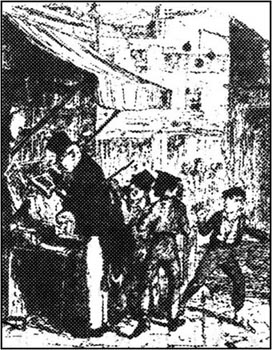
由于某些原因，插翅神偷不愿意在白天进伦敦，所以，他们到达市中心时，已经差不多是晚上11点了。奥利弗从未见过这么龌龊、悲惨的地方。这个地区的街道狭窄泥泞，到处散发着熏人的臭气。临近半夜了，孩子们还在街头游逛着，在街头的许多小铺子里进进出出，玩闹、尖叫着。小酒馆里挤满了打架的人。凶神恶煞般的大块头站在门口外黑暗的角落里。奥利弗差点儿被吓跑了。就在这时，神偷推开一扇门，将奥利弗拽到一个昏暗的门厅里。
“是谁啊？”一个声音唤道。
“是我。”神偷说。门厅里出现了一丝微弱的蜡烛的光亮。
“另一个是谁呀？”
“一位新朋友。”
他们踩着漆黑、破烂的楼梯走上去，奥利弗几乎什么也看不见，全靠神偷扶着他往前走，而神偷显得对这儿挺熟的。他们走进了一间屋子，由于年代已久，屋子的墙又黑又脏。炉前的桌子上放了一瓶啤酒，瓶口插着一节蜡烛。一位长着非常丑恶的脸和红头发的老人站在火炉旁煮饭。他穿了一件破旧、肮脏的大衣，好像一边煮着饭一边注意着挂在炉旁边的几条丝手帕。屋里摆着几张简陋的床。四五个与插翅神偷年龄差不多的男孩围坐在桌子旁，像中年人一样嘴里叼着烟，喝着酒。神偷和奥利弗走进来时，他们都抬起头来看着。
“这就是他，费金。”神偷跟老头说，“我的朋友奥利弗·特威斯特。”
费金微笑着同奥利弗握握手，然后所有的小绅士们都走过来使劲地握着他的双手，尤其是那只拿着他仅有的几件东西的手。一个孩子特别善良，竟然把手伸进了奥利弗的衣袋里，这样奥利弗在睡觉前就无需自己费力气掏出兜里的东西了。如果不是费金使劲地敲打他们的头和肩膀，让他们不再骚扰他，他们还可能会给奥利弗更殷勤的帮助。
“见到你很高兴，奥利弗。”费金说，“我看你是在看那些手帕吧，亲爱的，那岂不是有很多吗？我们把它们全部拿了出来，准备洗一洗，不过如此而已！哈！哈！哈！”
这好像是一句笑话，因为老先生和他这些年轻的朋友都大笑起来。然后晚饭开始了。奥利弗吃完了他的一份，大家又给了他一杯加了水的杜松子酒。费金让他一口气喝下去。不一会儿，他觉得被人抬起来放在了一张床上，便睡了过去。
他一觉醒来，时间已近中午，屋里只有费金一个人，他正在用一个平底锅煮咖啡。咖啡煮好后，他转身仔细看了一眼奥利弗。奥利弗这时刚刚醒来，眼睛还是半闭着的，所以，好像还在沉睡着。然后费金锁上了房门，从地板上一个隐蔽的洞里拿出了一个小盒子。他将小盒子小心地放在桌子上，打开盒盖，从里面拿出了一块满镶着宝石的金表。他看着金表，眼睛发出了贪婪的光。
“嗳呀！”他自言自语地说，“他们是多好的人啊！忠诚到底。他们一直没告诉牧师珠宝在什么地方。也没把我老费金招出来。直到最后。他们为什么要招出来呢？当时已经太晚了，招了也已经无法去掉就要套在他们脖子上的绳索了！”
费金又拿出了至少六块手表，还有戒指、手镯和其它一些贵重的宝石饰品。他欣喜地看着这些东西，之后，又放了回去。“绞刑是多么好的事！”他咕哝着，“人死了就再也不能开口说话了，也不能背叛老朋友了！”
就在这时，他抬起头，看见奥利弗正在盯着他看。他哗啦一下盖上了盒盖，从桌上抓起一把面包刀。“你为什么看着我？你都看见什么了？快告诉我！”
“我醒来后睡不着了，先生。”奥利弗吓得魂不附体地说，“对不起！”
“一小时以前你没有醒吧？”他凶恶地问，手里仍然攥着那把刀。
“我保证，我没有，先生。”奥利弗回答说。
“别担心，亲爱的。”费金说着，放下手里的刀，又成了原来那个善良的老先生了。他大笑着说：“我只是想吓唬吓唬你，亲爱的。你是个勇敢的孩子，奥利弗！你看见那些漂亮的东西了吗？”
“是的，先生。”
“噢！”费金应着，脸变得相当白了，“那——那是我自己的东西，奥利弗。是我这老头子全部的家当。”
奥利弗很纳闷，这老头有那么多金表，他为什么还住在这么陈旧、破烂的地方；不过，然后他又想，他养活神偷和其他的孩子们肯定也得花去许多钱。因此他什么也没说，就起身去洗脸了，当他再转身看费金时，那只盒子已经不见了。
不一会儿，神偷和一个叫查理·贝茨的乐呵呵的年轻人走了进来。
“今儿上午你们工作了吗？”费金问神偷。
“干得很卖劲。”神偷回答说。
“好孩子，好孩子！”费金说，“你们都弄到什么了？”
“几个皮夹子和几条手帕。”
“他们是好工人，对不对，奥利弗？”老头说。
“非常好。”奥利弗说。别人都笑了，可奥利弗并不觉得他的回答有什么好笑的。费金查看过手帕，告诉两个孩子这些手帕做工精美，并表示对他们的工作感到高兴。
早饭后，他们做着一种奇特的游戏。高高兴兴的老头将一块手表揣进他的上衣兜里，将表链套在脖子上，再把一个小本和一条手帕装进裤袋里。然后他手里拄着手杖，来回地在屋里走着，就好像那些走在马路上的年老的绅士一样。他一会儿停在炉旁，一会儿停在门口处，假装饶有兴趣地看着橱窗里的东西。他不停地左顾右盼，用一种自然而滑稽的动作摸索着浑身上下的衣兜，好像是怕有小偷。奥利弗被逗得笑出了眼泪。两个男孩一直跟在费金的身后，每当他转身时，他们俩就立刻躲得没影了，让他很难跟上他们的动作。
最后，神偷偶然地从后面撞了他一下，就在这个节骨眼上，他身上的手表、表链、手帕、记事本都到了两个男孩手里。如果老头感到有手伸进兜里，他就叫一声。接着游戏又重新开始。
之后，孩子们又出去做更多的工作了。他们走后，费金转向奥利弗。“听我的话，亲爱的，”他说，“照着他们的榜样去做，特别是神偷，他自己将来会成为一个了不起的人，假如你跟他学，你也会成为一个了不起的人的。我的手帕是不是从兜里耷拉到外面了，亲爱的？”
“是的，先生。”奥利弗说。
“试试看，你是否能在我不知不觉中将它拿走，就像你刚才看到他们做的那样。”
奥利弗学着神偷的样子，一只手向上托住衣兜的底部，用另一只手轻轻抽出了手帕。
“拿走了吗？”费金问。
“在这儿呢，先生。”奥利弗说着把手里的手帕给他看。
“你真是个聪明的孩子，亲爱的。”老先生摸着奥利弗的头说，“我还从没见过比你更伶俐的孩子，如果你照着这样继续学下去，你会成为伦敦最伟大的人物。你过来，我教给你怎样去掉手帕上的记号。”
奥利弗搞不明白，玩从老先生兜里偷东西的游戏和成为一个伟大的人物这二者之间有什么联系。但他一声不响地跟他走到了桌边，很快便投入了这项新的学习。
奥利弗在费金的屋里待了许多天，学习拆掉手帕上的记号和名字，有时也玩和以前一样的那个游戏。一天晚上，有两位年轻的女士前来造访，他们在一起聚会，玩得非常愉快。奥利弗觉得这两个女孩非常和善友好。
神偷和查理·贝茨每天都出去工作，但有时他们带不回来手帕，这时，费金就很生气。有一次，就因为他们没带回东西来，他竟然将他们俩打下楼梯，并且不给他们吃晚饭。
这天早上，奥利弗终于被允许与这两个男孩一起出去工作。他们已经有好几天没带回手帕来给他拆记号了，所以他们也没能吃到足够的晚饭。早晨，这三个男孩子出发了。他们走得非常慢，使奥利弗以为他们不是去工作的。突然，神偷停住了脚步，将一个手指竖在嘴唇上。
“出了什么事？”奥利弗问。
“别出声！”神偷说，“你看见站在书店外面的那个老头了吗？就是他。”
奥利弗极度惊奇和迷惑地看看神偷，又看看查理·贝茨，但人家告诉过他不许提问题。两个男孩偷偷地快速穿过马路，朝老先生走去，奥利弗尾随在他们后面，惊奇地悄悄看着。
老先生看上去很富有，他戴着一副金边眼镜，身穿一条白色裤子，一根昂贵的手杖夹在腋下。他从书摊上拿起一本书，站在那儿专心地看着——就好像坐在家里的软椅上一样。奥利弗睁大了一双恐惧和惊慌的眼睛，看着神偷将手伸进了老先生的兜里，抽出了一条丝手帕，递给了查理·贝茨，然后两人绕过拐角尽快地跑开了。
顿时，关于手帕的秘密及手表、宝石和费金的事都变得一清二楚了。奥利弗害怕地在那里站了一会儿，感到浑身的血流加快了，他觉得自己在发烧。然后，迷惑和害怕使他撒腿就跑。就在这时，老先生把手伸进了裤兜里，发现手帕不见了，他转过身来，正好看见奥利弗从他身边跑开，所以，理所当然地，他认为奥利弗是小偷。他大声地喊着：“抓贼！”并追赶着奥利弗，手里仍然拿着那本书。
喊叫起来的人不止老先生一个，神偷和查理·贝茨为了不一直顺着马路跑下去而引起别人的注意，已停在了第一个拐角处。当他们认识到发生了什么事时，也掺和在人群里，像好公民一样喊着：“抓贼！”并参加了追逐。
“抓贼！”这喊声往往能引起极大的骚动。街上的每一个人都停下正在做的事，跟着喊。许多人以极大的热情加入了追逐的人群。很快就有一大帮人在追赶奥利弗。
最后，这个筋疲力尽的孩子终于被他们抓住了。他摔倒在人行道上，人们将他团团围住。
“是这个男孩吗？”他们问老先生。
“是的。”他回答道，并俯下身看着奥利弗。“恐怕他是伤着自己了。”
“那是我弄的，”一个大个子年轻人自豪地说，“都把我的手弄痛了。”老先生反感地看了他一眼。
奥利弗躺在地上，浑身上下沾满了泥土，嘴里往外流着血，惊慌失措地看着围着他的一张张面孔。不一会儿，警察赶来了，抓住领子拎起了奥利弗，粗暴地说：“站起来，跟我走！”
“先生，不是我，”奥利弗四下里张望着说，“是另外的两个男孩，他们就在附近的什么地方。”
“噢，不，他们不在这里。”警察说。其实，他说得对，在追赶的人群将奥利弗抓住后，神偷和查理·贝茨就溜之大吉了。“起来！”
“别打他。”老先生说。
“我不会打他的。”警察说着将他从地上拉起来，差点儿把他的上衣从身上扯下来。
他们三个人朝前走去，沸沸扬扬的人群跟在他们身后。
5 Oliver's life changes
5
Oliver's life changes
Oliver was taken to the nearest police station. The officer at the gate looked at the boy. 'Another young thief, eh?' He turned to the old gentleman, 'Are you the person who was robbed, sir?'
'Yes, I am,' replied the old gentleman, 'but I'm not sure that this boy actually took the handkerchief. I don't really want to take him to court.'
'Too late. He must go before the magistrate now.'
Oliver was locked in a small stone cell, which was disgustingly dirty and smelly. As the key turned in the lock, the old gentleman said to himself thoughtfully, 'There's something in that boy's face... He could be innocent. Where have I seen someone like him before?' After thinking about this for a few minutes, he said, 'No; it must be imagination.' He sighed unhappily, and began reading the book again.
Some time later, the officer touched his shoulder and told him that the court was ready. A magistrate was a judge who dealt with small crimes in local courts, and the magistrate for this district was well known. His name was Mr Fang and he was a disagreeable, bad-tempered man. Today he was in a particularly bad mood. He frowned angrily at the old gentleman, and asked sharply,
'Who are you?'
'My name, sir, is Brownlow.'
'Officer! What is this man charged with?'
'He's not charged, sir,' answered the officer. 'He's accusing the boy.'
The magistrate looked at Mr Brownlow from head to foot. 'And what have you got to say?'
Mr Brownlow began to explain. 'I was standing outside a bookshop —'
'Be quiet, sir!' shouted Mr Fang. 'Policeman! Now — you arrested the boy. What happened?'
The policeman told the magistrate what he had heard, and how he had searched Oliver afterwards and found nothing.
'Are there any witnesses?' asked the magistrate.
'None,' answered the policeman.
Mr Fang then turned to Mr Brownlow and angrily told him to describe what had happened. Mr Brownlow explained that he had run after the boy only because he saw him running away. He did not think that the boy was the actual thief and he hoped that the boy would not be punished. 'He's been hurt already,' he added, 'and now I'm afraid he's very ill.'
'I don't believe that for a moment,' said Mr Fang unpleasantly. He turned to Oliver. 'Come now, don't try any clever tricks with me! What's your name?' he demanded.
Oliver tried to reply, but he was too weak to speak. He was deadly pale, and he felt the room spinning round him. At last he managed to whisper a request for water, but the magistrate refused angrily. Suddenly, Oliver fainted and fell to the floor.
Mr Fang stared at him angrily. 'Guilty. Three months' prison,' he said immediately. 'Let him lie there. He'll soon be tired of that.' Mr Fang stood up. 'This court is now closed.'
At that moment a man in an old black coat rushed in. 'Stop!' he shouted. 'Don't take the boy away. I saw it all. I'm the bookshop owner.'
Mr Fang's face was black with anger at this unexpected interruption, but the bookshop owner demanded to be heard. He described exactly what had really happened. He had seen two boys steal the handkerchief and then run away, leaving Oliver to be arrested.
In a final burst of bad temper, Mr Fang said that his time had been wasted. He announced that Oliver was innocent, and ordered everybody out of the court.
The order was obeyed, and as Mr Brownlow turned to go down the street, he saw Oliver lying on the pavement, shaking, his face as white as death.
'Poor boy! Poor boy!' said Mr Brownlow, bending over him. He called a coach quickly, laid Oliver on the seat, and drove away.
The coach stopped at a neat house in a quiet, shady street in north London. Oliver was gently carried in to a bed, and received more care and kindness than he had ever had in his life. But he had a fever, and for many days he lay there unconscious. When he eventually awoke, weak, thin and pale, he looked anxiously around the room.
'What room is this? Where am I?' he said. 'This is not the place I fell asleep in.'
Mrs Bedwin, the motherly old housekeeper, heard his words, and instantly came to him. 'Hush — be quiet, my dear, or you'll be ill again. Lie down.'
He lay down, and woke up again much later. After a while, he was able to sit up in a chair, although he was still too weak to walk. In this new position he could see a picture of a woman hanging on the wall opposite. 'Who is that, madam?' he asked the old housekeeper.
'I don't know, my dear. Do you like it?'
'The eyes look so sad, and they seem to be staring at me. As if the person was alive, and wanted to speak to me but couldn't.'
'You're weak and nervous after your illness,' Mrs Bedwin said kindly. 'Don't worry about things like that.'
Later that day Mr Brownlow came in, having heard that the boy was a little better at last. He was delighted to see that Oliver could sit up. But when he saw Oliver's face clearly, Mr Brownlow stared hard at him.
'I hope you're not angry with me, sir,' said Oliver anxiously.
'No, no. Not in the least,' he replied. Then he turned to the housekeeper. 'But look, Mrs Bedwin, look there!' He pointed to the picture of the woman above Oliver's head and then to the boy's face. It was a living copy of the picture; even the expression was the same. Oliver did not understand what was happening. He was so alarmed by Mr Brownlow's excitement that he fainted once more.
The Dodger and Charley Bates had left the crowd which was chasing Oliver as soon as they could. They went back to their house through the narrow streets, using a complicated route in case anyone was following them. Once they were safely away from other people, Charley Bates rolled on the ground and laughed and laughed.
'Ha! Ha! Ha! When I saw Oliver running away so fast, round all the corners, bumping into walls... and all the time I had the handkerchief in my pocket... Ha! Ha! Ha!'
'But what'll Fagin say?' asked the Dodger.
'What do you mean?'
The Dodger said nothing more but led Charley Bates into the house and up the stairs. When Fagin saw them enter, he rose to his feet.
'Where's Oliver?' he asked them furiously.
The two boys looked uneasily at each other, but said nothing. Fagin took hold of the Dodger's collar and shook him violently. 'Tell me or I'll kill you!'
The Dodger slid out of his coat in one smooth movement, leaving Fagin holding only the empty coat. 'The police have got him,' he said reluctantly. He looked round for a weapon to fight with, but Fagin already had a heavy metal pot in his hand. He threw it hard at the Dodger, but missed and hit Charley Bates, who started to shout with fear.
Suddenly, all this noise and confusion was silenced by a deep voice at the door.
'What the devil's going on here?' the voice demanded.
The owner of the voice was a big man of about thirty-five in a black coat and very dirty trousers, with a brown hat on his head and a dirty handkerchief around his neck. He also had a three-day-old beard. A white dog with torn ears followed him into the room. The man kicked the dog into a corner and looked round at the signs of battle.
'Are they trying to murder you, Fagin? I would if I was them. I'd have done it long ago. Now, give me some beer, and don't poison it.'
It was said as a joke, but if the man had seen the evil look on Fagin's face, he might have thought the warning was a necessary one.
Fagin produced some beer, and as the fight appeared to be over, everybody sat down. In the conversation that followed, Fagin told the newcomer that Oliver had been caught by the police. 'I'm afraid, Mr Sikes,' he said, 'the boy may say something which will get us into trouble.'
'Very likely,' said Bill Sikes, smiling unkindly. 'You've got problems, Fagin.'
'And I'm afraid,' added Fagin, ignoring Sikes' remark, 'that if we're in trouble, then a lot of other people will be in trouble too, if you understand me, my dear.'
Sikes turned angrily towards the old man. There was a silence. Then Sikes said, 'Somebody must find out what's happened. If he hasn't said anything yet, we must catch him when he leaves the police station.'
Fagin nodded. But there was a difficulty. None of them wanted to go anywhere near a police station. The problem was solved with the arrival of the two young ladies whom Oliver had met one evening in Fagin's house.
'Nancy, my dear,' Fagin said. He smiled sweetly at one of the young ladies. 'Can you go to find out what's happened to Oliver?'
The young lady answered calmly, 'No, I won't.'
'You're the only one here that the police in this district don't know,' said Sikes. 'She'll go, Fagin.'
'No,' repeated Nancy.
'Yes, she will, Fagin.' Sikes was right. With a mixture of threats and promises, he soon persuaded Nancy to go.
She set off at once, and at the police station pretended to be a shy, frightened girl. 'Is my poor little brother Oliver here?' she asked the officer with the keys.
'He's not here,' the officer replied. 'The gentleman's got him.'
'The gentleman? Oh no! What gentleman?' cried Nancy, very upset.
The policeman explained that Oliver had become ill, and the old gentleman had taken him to his house in the Pentonville district of north London. Nancy, still looking terribly upset, left the station, and hurried back to Fagin's house with this news. As soon as he heard it, Sikes called his white dog, put on his hat and left without saying goodbye to anyone.
'We must find him,' Fagin said urgently to the rest of them. 'No one can stay here — it's too dangerous now. All of you — walk around Pentonville and keep your ears open. Don't come back until you have some news of Oliver! If you can, kidnap him! We've got to keep him quiet before he starts talking about us to his new friends.'
With these words, he pushed them all from his room and double-locked the door behind them. Then he took out his hidden box and very carefully hid all the watches and the jewellery beneath his clothes.
court n. place where law cases are held. 法院。
local adj. of, special to, a place or district. 地方的。
imagination n. what is imagined. 想像的事物。
crime n. offence for which there is severe punishment by law. 为法律所严惩的罪。
accuse v. say that sb has done wrong, broken the law. 控告某人（犯某项罪）。
arrest v. seize sb by the authority of the law. 依法逮捕。
witness n. person who gives evidence under oath in a law court. 证人。
spin v. cause sth to go round and round. 使旋转。
guilty adj. having done wrong. 有罪的。
interrupt v. break the continuity of. 使中断。
obey v. do what one is told to do. 服从。
coach n. four-wheeled carriage pulled by four or more horses. 由四匹（或以上）马拉的四轮马车。
unconscious adj. not conscious. 失去知觉的。
instantly adv. at once. 立即。
nervous adj. tense; excited. 神经紧张的。
delight v. be greatly pleased. 极为高兴。
alarm v. cause anxiety to. 使恐慌。
complicated adj. made up of many parts. 复杂的。
furiously adv. in a violent, uncontrolled manner. 狂怒地。
slide v. (cause to) move smoothly over, slip along, a polished surface. 滑行。
reluctantly adv. in an unwilling or disinclined manner. 不情愿地。
weapon n. sth used in fighting. 武器。
what the devil 表示强调，意为“到底什么……？”。
battle n. fight, especially between organized and armed forces. 战争。
ignore v. take no notice of. 不理。
nod v. bow the head slightly and quickly as a sign of agreement. 点头。
calmly adv. in a quiet manner. 平静地。
mixture n. sth made by mixing. 混合物。
upset v. trouble. 使不安。
urgently adv. in a manner which shows that sth needs prompt action. 迫切地。
kidnap v. carry away sb by force and unlawfully. 绑架。
奥利弗的生活变了
5 奥利弗的生活变了
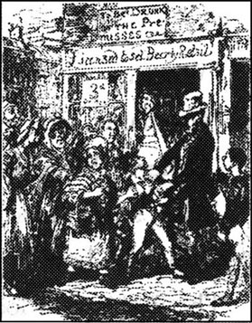
奥利弗被带进了最近的警察局。门口的一位警官盯着这孩子。“嗬！又是一个小贼？”他扭头向老先生问道，“先生，您就是被盗人吗？”
“是我，”老先生回答，“但我不敢说他就是偷了我手帕的那个孩子。我并不真想把他带到法庭上来。”
“太晚了，他必须现在就去见治安推事。”
奥利弗被锁进了一个石砌的小牢房，牢房里脏极了，气味令人作呕。钥匙在门锁里转动的那一瞬间，老先生若有所思地自言自语道：“这孩子的表情好像意味着什么……他有可能是无辜的，我曾经在什么地方见过这么一个孩子呢？”他琢磨了一会儿，说，“不，这一定是我想像的。”他可惜地叹了口气，又接着看他的书。
过了一会儿，警官拍了拍他的肩膀说，法庭已经准备就序，担任审判官的是一位治安推事，治安推事主要是在地方法庭处理一些小的犯罪案。这位推事在他所管辖的区域里是很有名气的，他的名字叫范先生。他是个脾气很坏、难以相处的人。特别是今天，他的心情极为不佳，他紧皱着眉头，生气地朝老头厉声问道：
“你是什么人？”
“先生，我的名字叫布朗洛。”
“警官！这人被控什么罪名？”
“推事，他没有被控什么，”警官回答说，“他是这孩子的指控人。”
推事将布朗洛从头到脚地打量了一番，说：“你有什么要说的吗？”
布朗洛先生开始解释，“我正站在一家书店的外面——”
“安静，先生！”范先生大声地说，“警察！刚才——是你逮捕了这孩子，因为什么事？”
警察向推事报告了他所听到的事情，以及经过搜身什么也没发现的情况。
“有证人吗？”推事问。
“没有。”警察回答道。
范先生转向布朗洛先生，生气地命令他讲述事情发生的经过。布朗洛先生说，他追赶这孩子主要是因为他看见这孩子在跑开。但他认为这孩子并不是那真正偷东西的小偷，他希望这孩子不要受到惩罚。“他已经受到了伤害，”他又说，“恐怕他现在病得很厉害。”
“我一点也不相信这些，”范先生不高兴地说。他转向奥利弗。“过来，别跟我耍花招，你叫什么名字？”他问道。
奥利弗想张口说话，可他虚弱得连话都说不出了。他的脸色苍白得要命，他觉得屋子在眼前旋转着。终于，他勉强低声地请求要喝水，但被推事愤怒地拒绝了。突然，奥利弗昏倒在地上。
范先生生气地凝视着他。“有罪，判监禁三个月。”他马上说，“就让他躺在这儿，他不久就累了，自己会起来。”范先生站了起来：“审判现在结束。”
就在这时，一个身穿黑色长外套的男人跑了进来。“等等！”他大声喊着，“别把这孩子带走。事情经过我都看见了。我是书店的老板。”
因为这意想不到的打扰，范先生的脸气得发黑。书店老板要求法官听他的陈述，他确切述说了事情的真实情况。他看见两个男孩偷了手帕，然后就逃走了，将奥利弗留下来当了替罪羊。
范先生最后一次大发脾气，声称他的时间完全浪费了。他宣布奥利弗无罪，并命令所有人退出法庭。
命令得到了执行。布朗洛先生转身沿着马路往前走时，看见奥利弗躺在人行道上，全身颤抖着，脸惨白得像死人一样。
“可怜的孩子！可怜的孩子！”布朗洛先生说着俯下身去看他。他赶快叫来了一辆马车，让奥利弗躺在座位上，他们便坐着马车离开了。
在伦敦北部一条绿树成荫的街道上的一座整洁的房屋前，马车停了下来。奥利弗被轻轻地抬进去安置在一张床上，在这里他得到了一生中从未有过的关心和爱护。可是他仍发着烧，几天几夜不省人事。当他最终醒来时，他全身虚弱无力，脸色苍白。他不安地四下打量着屋子。
“这是什么地方？我在哪儿？”他说，“这不是我睡着时的地方。”
贝德温太太是一位像慈母一样的女管家，听见他在说话，赶紧来到了他身边。“别说话——要安静！宝贝，不然的话你还会生病的。躺下。”
他躺下来，又睡了很久才醒来。过了一段时间，他可以在椅子上坐着了，但他还是虚弱得不能走路。坐起来后，他能看见一个年轻女人的画像挂在对面的墙上。“太太，她是谁？”他问年老的女管家。
“我也不知道，亲爱的，你喜欢这张画像吗？”
“她一双眼睛很悲哀，好像在盯着我看。她像个真人，想跟我说点什么，可又说不出。”
“你刚生了病，身体很虚弱，精神不稳定，”贝德温太太友善地说，“别为这些事感到不安。”
那天晚些时候，听说孩子终于稍稍好些了，布朗洛先生走了进来。他很高兴看见奥利弗能坐起来了。布朗洛先生看清了这孩子的长相时，便目不转睛地盯着他看。
“我希望您不会是生我的气，先生。”奥利弗不安地说道。
“不，不，绝对不是，”他说道，然后又转向女管家。“你看，贝德温太太，看这儿！”他指着挂在奥利弗床头上方的女人画像，然后又指指男孩子的脸。后者简直是画像活生生的翻版，就连表情都一样。奥利弗不知道发生了什么事，他被布朗洛先生的激动不已搞得惶惶然，结果又昏了过去。
神偷和查理·贝茨两人尽快地离开了追赶奥利弗的人群，他们是走在一条很窄的街道上回到他们的房子去的，采用了非常复杂的路线，以免被人跟踪。一等到安全地远离人群了，查理·贝茨就倒在地上打着滚笑个没完没了。
“哈！哈！哈！我看见奥利弗跑得那么快，绕过那么多街角，撞在了墙上……这手帕却一直在我兜里……哈！哈！哈！”
“可是费金会怎么说呢？”神偷问。
“你这是什么意思？”
神偷没再说什么，领着查理·贝茨进了屋，上了楼。费金见他们回来了，就站了起来。
“奥利弗呢？”他勃然大怒地问。
两个孩子不安地互相看着，什么也不说。费金抓住神偷的衣领拼命地摇晃着他。“告诉我，不然的话我会杀了你的！”
神偷以一个非常娴熟的动作从衣服里滑了出来，使费金手里只攥着一件空衣服。“警察把他抓走了。”他不情愿地说，并四下里扫视着，想找一件武器来抵挡。可费金早已将一只重重的铁锅拿在了手里，并使劲地朝神偷扔过去，锅没打着他，却打在了查理·贝茨的身上。他吓得叫喊起来。
顿时，这些声音和混乱被门口一个低沉的声音喝住。
“见鬼，这儿到底发生了什么事？”这声音问道。
说话的是一个身材高大、年龄在三十五岁左右的人，他穿了一件黑外衣和一条很脏的裤子，头上戴了一顶棕色的帽子，一条脏围巾系在脖子上。他脸上的胡子三天没刮了。跟他进来的还有一只白色的小狗，耷拉着两只受了伤的耳朵。这人把小狗一脚踢到了房子的角落里，然后看着屋里争斗的痕迹。
“他们想杀了你吗，费金？如果我是他们，我也会的。我早就想干这事了。给我来点啤酒，别往里搁毒药。”
这好像是个玩笑，可假如那人看到了费金脸上邪恶的表情，他会认为这种警告是必要的。
费金拿出了一些啤酒，争斗好像平息了，大家又都坐了下来。费金跟刚才进来的人聊着天，说奥利弗被警察抓起来了。“赛克斯先生，”他说，“我怕这孩子会说些给我们带来麻烦的话。”
“很可能。”比尔·赛克斯不怀好意地笑着说，“你遇上麻烦了，费金。”
“我还怕，”费金并不在意赛克斯说的话，接着说，“假如我们遇到了麻烦，许多其他的人也会受到连累的，如果你能听懂我的话，亲爱的。”
赛克斯生气地转向老头，谁也不吭声了。然后，赛克斯说道：“应该有人去弄清楚情况怎么样了，如果他还什么都没说出来，在他出警察局后我们必须把他抓回来。”
费金连连点头。可现在有一个困难，没人愿意到警察局附近去。这个难题随着两位年轻姑娘的到来而解决了。她们就是奥利弗曾在费金的屋里见到过的两个女孩。
“南希，我亲爱的，”费金冲着一位女孩甜蜜蜜地笑着说，“你能不能去看看奥利弗现在怎么样了？”
这女孩冷静地回答说：“不，我不去。”
“你是我们这儿警察唯一不认识的人。”赛克斯说。“她会去的，费金。”
“不。”南希重复了一遍。
“是的，她会去的，费金。”赛克斯说对了，他连威吓带许诺，很快就说服了南希去做这件事。
她立刻就出发了，在警察局里她装做一个非常害羞和胆小的女孩。“我可怜的弟弟奥利弗在这儿吗？”她问一位手里拿了一串钥匙的警官。
“他不在这儿，”警官说，“那位先生把他带走了。”
“那位先生？噢，不，哪位先生？”南希非常伤心地哭了。
这位警官向她解释说，奥利弗病倒了，老先生将他带到他在伦敦北部本顿维尔区的家里去了。南希看上去仍然很难过，她离开警察局，带着这个消息马上回到了费金的家。一听到这个消息，赛克斯叫上他的白狗，戴上帽子，没跟任何人打招呼就离开了。
“我们必须找到他，”费金急切地跟剩下的人说，“现在谁都不许留在这儿——这里太危险了。你们全部——到本顿维尔去转悠，竖起你们的耳朵。得不到奥利弗的消息你们就别回来！如果可能的话，把他给我绑架回来！在他跟新朋友谈论我们之前，我们要封住他的嘴。”
说完这番话，他将屋里所有的人都推了出去，并在房门上又加了一道锁，然后拿出了藏着的小盒子，将所有手表和珠宝饰物都小心翼翼地藏在了衣服里面。
6 Oliver is found again
6
Oliver is found again
Oliver began to recover and slowly regain his strength. The picture that had caused Mr Brownlow's excitement was taken down from the wall, and was not mentioned again. Oliver was disappointed at the disappearance of the picture, since he liked the woman's face, but he had many other things to think about now.
They were happy days, while Oliver was getting better. He played cards with Mrs Bedwin and listened to stories about her family. The days were all so quiet and relaxing, after the hardships and poverty of his previous life. Mr Brownlow bought him a new suit and new shoes, and Oliver's dirty old clothes were given away.
One day Mr Brownlow asked him to come to his study for a little talk.
Oliver went in and sat down. He looked at Mr Brownlow's serious face in alarm. 'Don't tell me you're going to send me away, sir, please!' he exclaimed. 'Let me stay here! I could help with the housework... please, sir!'
'My dear child, don't be afraid,' said Mr Brownlow kindly. 'I won't desert you. I believe that you're a good boy, not a common thief. You told me you're an orphan — that seems to be the truth. But I want to hear now the whole story of your life, and how you came to be with the boys I saw you with that day.'
Oliver began his story but was soon interrupted by the arrival of Mr Grimwig, an old friend of Mr Brownlow's. Mr Grimwig was a fierce old gentleman and very fond of arguments. He clearly knew all about Oliver and inspected him closely.
'So this is the boy, is it?' he said at last.
Oliver bowed politely and was introduced by Mr Brownlow. Tea was then brought in, and during the meal Mr Grimwig stared so hard at Oliver that the boy felt rather confused. Eventually, Mr Grimwig whispered to Mr Brownlow, 'He may be a good-looking boy, but I think he's deceiving you, my good friend.'
'Nonsense!' said Mt Brownlow, becoming angry.
'Well, we'll see,' answered his friend. 'We'll see.'
Later that afternoon Mr Brownlow wanted to return some books to a bookseller, and to send some money for new books that he had already collected. Mr Grimwig suggested that Oliver should go. 'He'll be sure to deliver everything safely,' he said with a smile.
'Yes, please let me take them,' said Oliver, delighted to be of use.
Mr Brownlow hesitated, but Mr Grimwig's smile had annoyed him. 'Very well,' he said. 'Here are the books, Oliver, and a five-pound note. The bookseller will give you ten shillings change.'
'I won't be ten minutes,' replied Oliver eagerly, and he ran out into the street.
'So you expect him to come back, do you?' enquired Mr Grimwig.
'Yes, I do,' said Mr Brownlow, smiling confidently. 'Don't you?'
'No, He has a new suit of clothes, some valuable books, and a five-pound note in his pocket. He'll join his old friends the thieves, and laugh at you. If he comes back, I'll eat my hat.'
The two men sat by the window with a pocket-watch between them, and waited for Oliver's return.
Oliver hurried through the streets to the bookshop, thinking how lucky he was. Suddenly there was a loud scream behind him. 'Oh, my dear brother!' Before he could look round, a pair of arms was thrown tightly around his neck.
'Don't!' he cried, struggling. 'Let go! Why are you stopping me? Who is it?'
The young woman holding him started to cry loudly. 'I've found him! Oh! Oliver! You naughty boy, to make me suffer so much! Come home immediately, you cruel boy!' She burst into tears and several people stopped to stare at what was happening.
'What's the matter?' asked one of the watching women.
'He ran away from his parents a month ago,' the young woman said. 'They're hard-working, respectable people, and he left them to join a gang of thieves and bad characters, and almost broke his mother's heart.'
'Go home, you horrible child,' said another woman.
'Yes — go back to your parents,' said a third.
'But I haven't got any!' replied Oliver, greatly alarmed. 'I haven't got a sister, either. I'm an orphan. I live in Pentonville.'
'Listen to him! Make him come home,' the young woman said to the crowd, 'or he'll kill his dear mother and father, and break my heart.'
Suddenly Oliver recognized the woman he had seen in Fagin's house. 'It's Nancy!' he said, without thinking.
'You see?' cried Nancy to the crowd. 'He knows me!'
Just then a big man ran out of a beer shop, followed by a white dog. 'What's this? Young Oliver! Come home to your poor mother, you young devil! And what books are these? You've stolen them, haven't you? Give them to me.' The man who was Bill Sikes, seized Oliver with one strong hand and hit him on the head with the other.
'That'll do him good!' shouted some of the crowd. 'It's the only way to treat boys like him.'
Bill Sikes held onto Oliver's arm. 'Come on, you young thief!'
Still weak from illness, and terrified by the growling dog, Oliver could not resist. He was taken through the dark narrow streets at great speed. Sikes and Nancy gave him no chance to escape and Oliver had no breath to call out for help. All too quickly, he was back in Fagin's house, where his old friends were waiting for him.
'Delighted to see you looking so well, my dear,' Fagin said, bowing politely. 'Why didn't you write, and say you were coming? We'd have got something warm for supper.'
The Dodger and Charley Bates roared with laughter, and the Dodger began looking through the books Oliver had with him.
'Give them back!' Oliver cried. 'Those books belong to the kind old gentleman who took me into his home. Send him back the books and the money — he'll think I stole them!'
'You're right,' laughed Fagin. 'He will think that!'
Oliver jumped to his feet and ran wildly from the room, shouting for help. The Dodger and Fagin caught him easily, and brought him back. Then the old man picked up a long piece of wood.
'So you wanted to get away, my dear, did you? Wanted to call the police and get help? We'll cure you of that.'
He hit Oliver hard on the shoulders with the stick. He was raising it for a second hit when Nancy rushed forward and, seizing the piece of wood, threw it into the fire.
'I won't let you do it, Fagin!' she shouted. 'Yon've got him again. Isn't that enough? Now leave him alone.'
Fagin and Sikes looked at each other, shocked by her reaction.
'You'd better keep quiet, my girl,' growled Sikes.
'No, I won't!' cried the girl wildly. 'Now you've got the boy, you'll turn him into a thief and a liar. Isn't that enough, without killing him too?'
She rushed at Fagin and would have hit him if Sikes had not held her arms so tightly that she couldn't move. She struggled wildly for a while, then, exhausted, she fainted. Sikes laid her down in the corner, as surprised as Fagin at her anger.
'She can be really wild when she's angry,' Sikes said.
Fagin wiped his forehead. 'That's the trouble with women,' he said, 'but she's a clever girl in her work.'
Then Charley Bates and the Dodger took away Oliver's expensive new suit, gave him some old clothes, and locked him up in a dark room. Oliver felt tired and ill, and was soon fast asleep.
disappointed adj. sad at not getting what was hoped for. 失望的。
relax v. become less tense. 松弛。
previous adj. coming earlier in time or order. 早先的。
desert v. go away from. 离开。
argument n. reasoned discussion. 辩论。
deliver v. take sth to houses, to the persons to whom they are addressed. 递送。
nonsense n. meaningless words. 无意义的话。
hesitate v. show signs of uncertainty or unwillingness in speech or action. 犹豫。
enquire v. = inquire. ask to be told. 询问。
confidently adv. in a certain manner. 自信地。
naughty adj. (of children) bad; causing trouble. 淘气的。
cruel adj. taking pleasure in the suffering of others. 残忍的。
gang n. group of persons going about or working together, especially for criminal purposes. 帮；一伙。
recognize v. identify again sb that one has seen before. 认出。
growl v. make a low, threatening sound. 咆哮。
resist v. oppose. 抵抗。
escape v. get away. 逃走。
roar v. make loud, deep sound. 发出大而深沉的声音。
cure v. bring a person back to health. 治愈。
reaction n. action or state resulting from an earlier condition. 反应。
liar n. person who tells an untruth or who has told an untruth. 说谎者。
wipe v. clean or dry sth by rubbing with a cloth, the hands, etc. 拭；擦。
expensive adj. high priced. 昂贵的。
奥利弗又被找到了
6 奥利弗又被找到了
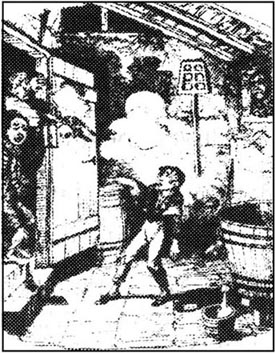
奥利弗慢慢地恢复了，气力也恢复了。那幅挂在墙上使布朗洛先生激动不已的画像被拿了下来，也不再被任何人提起了。画像的消失使奥利弗很失望，因为他很喜欢照片上女人的面貌，不过，现在他有许多别的事要想。
奥利弗渐渐恢复的这些日子是非常幸福的，他与贝德温太太一起打牌，听她讲一些她们家里的故事。经历了以前那些穷困与艰辛的日子后，现在的日子是如此平静、愉快。布朗洛先生给奥利弗买了一套新衣服和一双新鞋子，他以前的破烂衣服都送掉了。
一天，布朗洛让他到书房来，想跟他说点事。
奥利弗走进书房坐定，他看看布朗洛满脸的严肃劲，惊慌起来。“先生，请别把我送走！”他惊叫着，“让我留在这儿！我能帮着干家务活……先生，求求您了！”
“亲爱的孩子，别害怕，”布朗洛先生和蔼地说，“我不会抛弃你的。我相信你是个好孩子，不是个下贱的小偷。你跟我说过你是个孤儿——看来这是真的。现在我想知道你全部的身世，还有，那天我看见你和那些孩子在一起，我想知道你是怎么和他们混到一块的。”
奥利弗开始述说自己的故事，不一会儿，他就被格里姆威格先生的来访打断了。他是布朗洛先生的一位老朋友，这位老先生生性残暴，而且喜欢争辩。他清楚地知道奥利弗的一切情况，仔细地审视着他。
“看来这就是那个孩子了，是吗？”他最后问道。
奥利弗有礼貌地给他鞠了躬，并由布朗洛先生作了介绍。然后用人递上了茶点，喝茶时格里姆威格先生死死盯着奥利弗，使这孩子感到非常不自在。终于，格里姆威格先生凑近布朗洛先生，小声地说：“这孩子可能算是长相不错，但我想他是在欺骗你呢，我的好朋友。”
“胡说八道！”布朗洛先生生气地说。
“好吧，我们走着瞧，”他的朋友说，“我们走着瞧。”
那天下午稍晚一些时候，布朗洛先生要把几本书还给一位书商，另外带点钱为他已经拿回来的几本新书付款。格里姆威格先生建议让奥利弗去办这件事。他微笑着说：“他肯定会安全地把书和钱都送到的。”
“是的，让我去吧。”奥利弗说道，他很高兴能被派上用场。
布朗洛先生先是有点犹豫，可他被格里姆威格先生的那种微笑惹恼了。“好吧，”他说，“书在这儿，奥利弗，这是五个英镑，书商会找回十个先令的。”
“用不了十分钟我就能回来。”奥利弗急切地说，然后跑着出去，上了街。
“你还指望他能回来，是吗？”格里姆威格先生问道。
“是的。”布朗洛先生非常自信地笑着说，“你不指望他回来吗？”
“不，他穿着一身新衣服，带着一些价钱很贵的书，兜里装着五英镑的钞票。他会回到他那些老朋友那儿，回到那个贼窝去笑话你的。假如他回来了，我就把我的帽子给吃了。”
这两位先生靠窗户坐着，将一块怀表放在他们中间，等着奥利弗回来。
奥利弗急忙穿过街道，朝书店奔去，心想自己真幸运。忽听背后一声大叫：“啊，我亲爱的弟弟！”他还来不及朝后看一眼，就觉得有一双胳膊紧紧地搂在了他的脖子上。
“别！”他挣扎着叫道，“放开！你干吗要挡住我，你是谁？”
那年轻女人搂住他大声地叫着：“我找到他了！噢！奥利弗！你这个不听话的孩子，你让我多伤心啊！赶紧回家，你这个没良心的孩子！”她痛哭流涕，惹得几个行人停下脚步，看出了什么事。
“出了什么事？”一个看热闹的妇人问道。
“一个月以前他从爸爸妈妈那里逃了出来，”那年轻女人说，“他父母可是任劳任怨、清白正派的人，他竟跑出来和一帮小偷、坏人混在一起，这简直使他妈伤心透了。”
“回家去，你这个讨厌的孩子。”另一个女人说。
“对，快回到你父母那儿去。”第三个人说。
“可我没有父亲，也没有母亲！”奥利弗非常惊恐地说，“更没有姐妹，我是个孤儿，我住在本顿维尔区。”
“你们听他说的！你们让他回家去，”年轻女人冲着人群说，“否则，他父母会为他死去的。我也会伤透了心。”
突然，奥利弗认出了她就是在费金家见过的那个女人。“你是南希！”他不假思索地说。
“你们看，”南希冲着人群大声说，“他认识我！”
就在这时，一个大个子男人从一家啤酒馆里跑了出来，身后跟着一条白狗。“这是怎么了？小奥利弗！快回到你可怜的妈妈身边去，你这个小家伙！这些是什么书？是你偷来的吧？来，给我。”这人就是比尔·赛克斯。他用一只粗壮有力的大手抓住奥利弗，用另一只手打他的脑袋。
“这对他有好处！”人群里一些人说，“对待他这种男孩就得这样。”
比尔·赛克斯紧紧抓牢奥利弗的胳膊。“走，你这个小偷！”
由于生过病，身体仍然很虚弱，奥利弗被这条狗的狂叫吓坏了，他坚持不住了。他被裹挟着很快地穿过了黑暗狭窄的街道。赛克斯和南希死死地抓住他，他无法逃走。奥利弗气喘吁吁，连救命都喊不出。转眼间，他又回到了费金的家，他的老朋友们都在这儿等着他呢。
“很高兴见到你这么好，亲爱的。”费金说，并很礼貌地鞠着躬。“你为什么不写信说你要回来了？那样我们会留下点热乎乎的晚饭给你的。”
神偷和查理·贝茨狂笑着。神偷又开始翻奥利弗带着的书。
“还给我！”奥利弗说，“这些书是那个带我去他家的好心的老先生的。书和钱得给他送回去——否则他会认为是我偷走了他的书和钱。”
“你说的对，”费金笑着说，“他会这么认为的！”
奥利弗一跃而起，疯狂地从屋里往外跑去，喊着救命。神偷和费金毫不费力就将他抓了回来，这时，这老头拿起一根长木头。
“这么说你想离开这儿，是吗，亲爱的？想叫警察来救你？我们先来治治你。”
他用木棒使劲地打奥利弗的肩膀，当他再次举起手里的木棒时，南希扑了过去，夺下了木棒，扔进了炉火。
“我不许你这样对待他，费金！”她嚷嚷着，“你把他弄回来了，还不够吗？现在别折磨他了。”
费金和赛克斯互相看了一眼，他们被她的举动惊住了。
“你最好别嚷嚷，姑娘。”赛克斯咆哮着。
“不，我要嚷嚷！”这女孩发狂般地叫着，“你们现在弄到这孩子了，你们要把他变成一个贼，一个骗子，这还不够吗？难道还要弄死他吗？”
她扑向费金，如果不是赛克斯抓住了她的胳膊，使她动不了的话，她会跟他撕打一番的。她拼命地挣扎了一会儿，然后没了力气，晕倒了。赛克斯让她躺在墙角处，和费金一样，他对她的发怒感到惊讶。
“她发起脾气来可真够疯的。”赛克斯说。
费金擦着额头。“女人就这一点麻烦。”他说，“可她干起活来倒挺麻利的。”
然后，查理·贝茨和神偷拿走了奥利弗的新衣服，给他扔了几件旧衣服，把他锁进了一间黑屋子。奥利弗觉得又累又难受，没多一会儿就沉沉地睡着了。
7 The robbery
7
The robbery
A few days later, a visitor arrived in London from Oliver's home town. He was a large, fat man, and very proud of his hat, which showed the world that he was a most important official. It was, in fact, Mr Bumble the beadle, Oliver's old enemy.
Mr Bumble had completed his business in the city, and had just finished a most satisfactory meal in a pub. He pulled up his chair to the fire, to enjoy his hot gin-and-water in comfort, and opened the newspaper. The first thing he saw was this notice:
A reward of five pounds is offered for any information leading to the discovery. of a young boy, Oliver Twist, who was kidnapped from his home in Pentonville last Thursday evening. I am also very interested in any information about his past.
There was then a full description of Oliver's clothes and appearance, and Mr Brownlow's full address. Mr Bumble rubbed his eyes, read the notice again, and was at the address in less than ten minutes. He was shown into Mr Brownlow's study, where the old gentleman and his friend Mr Grimwig were sitting.
'Do you know where the poor boy is now?' Mr Brownlow asked, when the beadle had explained the reason for his visit.
Mr Bumble shook his head.
'Do you know anything good about him?' asked Mr Grimwig, looking closely at Mr Bumble's face.
Mr Bumble shook his head again, very seriously, and turned down the corners of his mouth.
'Then tell us everything you know about him,' said Mr Brownlow impatiently.
Mr Bumble put down his hat, unbuttoned his coat, folded his arms, and sat back in his chair. He spoke in his most important and official voice, and talked for twenty minutes. His listeners heard all the details of Oliver's illegitimate birth, and how generously he had been treated as a workhouse orphan. They heard how he had always been an ungrateful and dangerous child, violently attacking another boy, and finally running away from the house where he had been working.
The old gentleman shook his head sadly and gave Mr Bumble the five pounds. 'I would have been happy to give you three times the amount — if your story had proved that the boy was good.'
If Mr Bumble had known this earlier, he might have told a different story, but now it was too late. So he took the money and left.
Mr Brownlow walked up and down his room for several minutes, deep in thought. He rang the bell for Mrs Bedwin, his housekeeper, and told her what he had heard.
'I don't believe it,' she said, with great certainty.
'I was right,' said Mr Grimwig with satisfaction. 'You should have listened to what I said.'
Mr Brownlow said angrily, 'Never let me hear the boy's name again. Never. Remember that, Mrs Bedwin.'
There were sad hearts at Mr Brownlow's house that night.
* * *
Meanwhile, in another part of London, Oliver remained a prisoner. Fagin had told Oliver how ungrateful he had been to run away. He had told him that he would have died of hunger without Fagin's kindness. He went on to tell Oliver the story of another young boy, who had gone to the police to tell them about the gang, but who had finally been hanged one morning for being a thief. Fagin described the hanging in terrifying detail, and said that he hoped he would never have to tell the police about Oliver — and see Oliver with a rope around his neck. Oliver felt his blood turn cold.
He remained locked in a room for many days, seeing nobody between early morning and midnight. He spent his time thinking sadly about his friends in Pentonville. After a week he was free to wander round the house during the day. It was a dirty place, full of rats and insects but no other living thing. All the windows were closed, and covered with wood and metal bars that kept out the light.
One afternoon the Dodger and Charley Bates were at home and they started telling Oliver about their lives as thieves.
'Why don't you become one?' Charley asked him. 'We all are here — both of us, and Fagin, Sikes, Nancy... all of us.'
'I don't want to be,' replied Oliver. 'I wish they'd let me go.'
'But it's a good life,' the Dodger said, taking some coins from his pocket and throwing them up in the air. 'What does it matter where the money comes from?' he said, laughing. 'If you don't steal it, someone else will. You can be sure of that!'
Fagin entered at this point, with two young men, and joined in the conversation. One of the young men had just come out of prison, and there were many cheerful jokes about his very short hair-cut. Everybody sat around the fire, talking and laughing for hours. Fagin told Oliver how good the Dodger was at his job, and what a friendly boy Charley was. It was, without doubt, an interesting evening for Oliver, after so many days locked up alone.
After that evening he was rarely on his own again. He spent a lot of time with the Dodger and Charley, and often played the handkerchief game with them. At other times Fagin would tell them all about robberies he had committed in his younger days, telling the stories so well and putting in so many funny details that Oliver could not stop laughing, even though he knew it was wrong.
Fagin knew what he was doing. He had made sure that Oliver was so lonely and miserable that he would be desperate for any friends, however criminal. Slowly and deliberately, Fagin was trying to poison the young boy's mind.
One damp, cold, windy night a few weeks later, Fagin put on his heavy coat and, with the collar pulled up high to hide his face, left his home. He walked fast through the streets, never losing his way even in the darkest places. Finally, he reached an evil, narrow street lit only by a single lamp. He knocked on a door, said something quietly to the person who opened it, then walked upstairs.
Bill Sikes was sitting by his fire with his dog when Fagin entered. The room was a small, dark place with almost no furniture. Nancy was there, too, and Fagin glanced at her uneasily. He had not seen her since she had attacked him to stop him hitting Oliver. However, she seemed to have forgotten all about it, because she told him to pull up a chair and warm himself by the fire.
'I'm ready for business,' Bill Sikes said, looking at Fagin suspiciously. 'Say what you have to say, Fagin.'
'It's about the robbery at Chertsey, Bill,' answered Fagin. 'Some lovely silver in that house down there!'
'I know, I know,' Sikes said. 'I was down there two nights ago to have a look at the house. But it's locked like a prison at night, all except one part.'
'Where's that?' asked Fagin, bending his head forwards, his eyes staring excitedly at Sikes.
'Do you think I'm stupid? I'm not telling you! Anyway, what we need is a boy.'
'So there's a small place where only a boy can enter the house?' asked Fagin.
'Maybe. But we need a boy.'
There was silence for a time, while Fagin thought. Then he made a sign to Sikes to tell Nancy to leave the room.
'Don't worry,' Sikes said. 'You can trust her — she won't talk. Isn't that right?'
'Of course it's right,' answered the young woman, taking a large drink from the bottle on the table, and laughing. 'Anyway, Fagin, I know your idea is for Oliver to do the job.'
'You're a clever girl,' said Fagin, smiling evilly. 'That's exactly what I had in mind. Listen, Bill — the boy's been training for a few weeks, and it's time he did some work. He's the smallest one, anyway.'
'Is he safe?' asked Sikes. 'Because if he tries any tricks on me, I'll kill him!'
'He'll be ours for life, if he feels he's one of us. And this job will make him feel like that,' said Fagin eagerly. 'The boy looks so innocent he's perfect. And we've got to include him in some crime as soon as we can. Otherwise, if he escapes now, he can tell the police about us and stay free himself.'
So it was decided that Oliver would help Sikes with the robbery in two days' time. The plan was discussed in great detail and all the arrangements made. By then, Sikes was very drunk, and Fagin got up to leave. As he put on his coat, he stared hard at Nancy, frowning a little. No, he was sure he could trust her; she was loyal.
The next night, Oliver was alone in Fagin's house when Nancy entered. She was so nervous and white-faced that Oliver asked her if she was ill.
'God forgive me!' she said, beating her hands together. 'I never thought I would do this!'
'Has anything happened?' asked the boy. 'What is it?'
She sat with her back to him, and hid her face with her hands. After a while she said, 'I don't know why I feel so strange sometimes. Come on, Oliver — are you ready? You have to come with me to Bill's house.'
'Why?'
'Oh — nothing important.'
Oliver did not believe her, but he thought that at last this might be an opportunity to escape. So he said, rather too quickly, 'I'm ready.' Nancy guessed what he was thinking.
'Oliver,' she said, 'this is not the time to escape. I've saved you once, and I will again, but if anything happens tonight, it might mean my death.' She said this so seriously that Oliver decided it must be true. He was quiet while they walked quickly through the streets to Sikes' house.
Inside his room, Sikes sat Oliver down on a chair. 'Did he come quietly?' he asked Nancy.
'Quiet as a mouse.'
'Glad to hear it,' said Sikes. 'Now listen to me, boy.' He put a gun against Oliver's head. 'If you say one word when you're outside with me, I'll shoot you. Understand?'
Oliver nodded, trying hard not to tremble.
Sikes and Oliver started out at five o'clock in the morning, while it was still dark. They crossed from one side of London to the other. At first the streets were empty, then shops began to open and people started going to work. Gradually, the noise and traffic increased, and as they passed through the meat market at Smithfield, Oliver was amazed by the sight and smells of so many animals, and by the huge crowds of people, all pushing and swearing and shouting. But Bill Sikes marched on without stopping.
Later in the day they were given a lift in a horse and cart from west London out into the country. Night fell, and after walking a few more miles down country roads, they finally arrived at an old house standing alone by a river. It was dark and seemed to be empty. They went inside without knocking.
Inside were two other men, who, at Sikes' command, produced food and drink for him and the boy. Then Sikes told Oliver to get some sleep as they would be going out again later that night. Oliver still had no idea of the purpose of this expedition, but his head ached with tiredness and he soon fell asleep.
At half past one the men got up and checked their equipment, gathering several sticks as well. Sikes and the man called Toby left the house together, with Oliver walking between them. There was now a thick fog and the night was very still as they hurried through the deserted streets of the nearby town. Out in the country again, they walked down several small roads until finally they stopped at a house surrounded by a high wall. As quick as lightning, Toby climbed up and pulled Oliver after him. Inside the garden, they crept towards the house, and now, for the first time, Oliver realized in horror that the purpose of the expedition was robbery, and maybe even murder.
Bill Sikes broke open a small window at the back of the house, then shone his light into Oliver's face.
'Now listen. I'm going to put you through here. Go straight through into the hall and on to the front door, and let us in. And if you don't, you can be sure I'll shoot you.'
Oliver, stupid with terror, was lifted through the window into the house. Desperately, he decided to try to run upstairs and warn the family. He began to creep forwards.
Suddenly, there was a loud noise from the hall.
'Come back!' shouted Sikes. 'Back! Back!'
Oliver stood still, frozen with fear. A light appeared, then two men on the stairs, then a sudden bright flash, and a loud bang. Oliver staggered back. Sikes seized the boy's collar through the window and pulled him back out into the garden.
'They've hit him!' shouted Sikes. 'He's bleeding.'
A bell rang loudly, above the noise of more gunshots and the shouts of men. Oliver felt himself being carried across rough ground, and then he saw and heard no more.
address n. details of where a person may be found and where letters, etc may be delivered. 住址。
offer v. put forward, to be accepted or refused. 提供。
meal n. occasion of eating. 餐。
discovery n. discovering or being discovered. 发现。
fold one's arms cross one's arms over the chest. 交叉双臂。
detail n. small, particular fact or item. 细节。
illegitimate adj. born of parents who were not married to each other. 私生的。
amount n. quantity. 数量。
meanwhile adv. in or during the time between. 其时；此际。
hunger n. need, desire for food. 饥饿。
insect n. sort of small animal, having six legs and no backbone and a body divided into three parts. 昆虫。
bar n. long piece of hard, stiff material. 棒；条。
coin n. metal money. 硬币。
doubt n. uncertainty of mind. 怀疑。
commit v. perform (a crime, foolish act, etc). 犯（罪，错等）。
robbery n. instance of robbing. 抢夺。
deliberately adv. in an intentional manner. 故意地。
glance v. take a quick look. 匆匆一看。
suspiciously adv. doubtfully. 怀疑地。
silver n. shining white precious metal used for ornaments, coins, utensils, etc. 银。
stupid adj. slowthinking; foolish. 愚蠢的。
trick n. sth done in order to deceive, to outwit or outdo, sb. 诡计。
otherwise adv. in other or different respects. 在其它方面。
discuss v. examine and argue about (a subject). 讨论；商讨。
opportunity n. favourable time or chance. 机会。
guess v. form an opinion, make a statement, based on supposition, not on careful thought. 猜想。
arrangement n. plans; preparations. 计划；筹备。
drunk adj. intoxicated; overcome by drinking alcoholic liquor. 醉；酩酊。
swear v. use obscene etc words to insult, or for emphasis. 咒骂。
cart v. carry in a two-wheeled vehicle pulled by a horse. 用马车运。
command n. order. 命令。
expedition n. journey or voyage for a definite purpose. 远征。
equipment n. supplying (a person, a ship, etc) (with what is needed). 装备。
lightning n. flash of bright light produced by natural electricity between clouds in the sky with thunder. 闪电。
creep v. move along with the body close to the ground or floor. 爬行。
stagger v. walk or move unsteadily. 蹒跚。
gunshot n. shot fired by a gun. （射出之）枪弹。
抢劫
7 抢劫
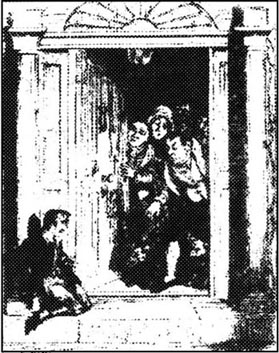
几天后，一位来访者从奥利弗家乡的小镇来到了伦敦。他是一个高大、肥胖的人，对自己的帽子感到非常自豪，这帽子向别人表示他是位十分重要的官员。其实，他就是班布尔先生，那位执事，奥利弗的老对头。
班布尔先生在城里办完了公事，刚在一家酒馆里吃了一顿非常满意的饭菜。他把椅子向炉旁拉了拉，舒服地喝着一杯辣辣的加了水的杜松子酒，打开报纸。首先跳入他眼帘的是这条消息：
悬 赏
奥利弗·特威斯特，男孩，上星期四晚上在他本顿维尔的家中被绑架带走，如有人知道他现在的下落，可得到五英镑的奖赏。本人对他以前的情况也深感兴趣。
启事接着详细地描述了奥利弗的穿着和长相，以及布朗洛先生家的详细地址。班布尔先生揉了揉眼睛，把这条消息又看了一遍，不到十分钟，他就找到了那个地址。他被带到了布朗洛先生的书房，这位老先生和他的朋友格里姆威格先生正坐在里面。
“你知道这可怜的孩子现在在哪儿吗？”执事说明了来意后，布朗洛先生问道。
班布尔先生摇了摇头。
“你知道他的任何好的方面吗？”格里姆威格先生仔细打量着班布尔先生的脸，问道。
班布尔先生非常严肃地又摇了摇头，撇了撇嘴。
“那么，告诉我们你所知道的有关他的一切。”格里姆威格先生不耐烦地说。
班布尔先生摘下帽子，解开衣扣，双臂交叉放在胸前，向后靠在椅子上。他用他那重要官员的嗓音说了足足二十分钟。他的听众知道了奥利弗非法出生的详细过程，以及作为济贫院里的孤儿他得到了怎样宽厚的待遇。他们也得知他是一个忘恩负义的、危险的孩子，粗暴地殴打了另一个孩子，最后终于从他干活的人家逃跑了。
老先生伤心地摇了摇头，给了班布尔先生五个英镑。“我会很高兴给你三倍的钱——假如你说的事能证明他是个好孩子。”
如果班布尔早知道是这样的话，他说的可能会与刚才说的完全不一样，可现在已为时太晚了。他只好拿了钱，离开了。
有几分钟工夫，布朗洛先生在屋里来回地踱着步，陷入了深思。他拉铃叫来了贝德温太太，他的女管家，把他所听到的事告诉了她。
“我不相信这些。”她非常肯定地说。
“我说的是对的。”格里姆威格先生满意地说，“你本应该听我的话。”
布朗洛先生气愤地说：“以后别再让我听到这孩子的名字，永远不要。记住了吗，贝德温太太？”
那天晚上，布朗洛先生家里的人心里都很悲伤。
* * *
与此同时，在伦敦的另一个地方，奥利弗像个囚犯一样被关着。费金已告诉他，逃跑是件忘恩负义的事。他还说，若不是自己对他仁慈，奥利弗本来是会饿死的。他又告诉了奥利弗另一个小男孩的事。这个孩子到警察局告发了他的同伙，结果在一天早晨作为小偷被送上了绞刑架。费金详细地形容了绞刑的恐怖。他说，希望他自己永远不会被迫到警察那儿去告发奥利弗——也不愿看到绞索套在奥利弗的脖子上。奥利弗这时感到浑身的血液都凝固了。
他被锁在小屋里许多天，每天从清早到午夜见不到一个人，他的时间都是在苦苦思念他在本顿维尔的朋友中度过的。一星期后，他白天从小屋里被放出来，只能在屋子里转来转去。这是个很脏的地方，除了老鼠和虫子外，没有其它活物。所有的窗户都是紧闭着的，上面还钉了许多木板和铁棍，亮光透不进来。
一天下午，神偷和查理·贝茨在屋里没出去，他们同奥利弗聊起了他们的小偷生涯。
“你为什么不也当个小偷？”查理问他，“我们都在一起——我们俩，还有费金，赛克斯，南希，我们都在一起。”
“我不想，”奥利弗回答道，“我真希望他们能放我走。”
“可是这种日子很舒服。”神偷说着从兜里掏出了几个硬币抛向空中。“管他钱是从哪儿来的呢！”他笑着说，“你不去偷，别人也会去的。这是毫无疑问的！”
正在这时，费金与另外两个年轻人走了进来，参加谈天，其中的一个年轻人是刚从监狱里出来的。大家拿他剃得很短的头发开着玩笑。几个小时里，大家围着火炉坐着，又说又笑。费金告诉奥利弗，神偷干得多么巧妙，查理又是个多么友好的孩子。被独自锁在小屋多日之后的今天对奥利弗来说无疑是很有趣的。
从那天晚上起，他很少一个人待着了，总是同神偷和查理在一起，常常同他们做着手帕的游戏。有时，费金给他们讲他年轻时干过的一些盗窃的事。他维妙维肖地说着事情滑稽的细节，奥利弗虽然心里明白这都是坏事，但还是不停地大笑着。
费金很清楚他在干什么。他知道奥利弗很孤独、很痛苦，迫切需要朋友，哪怕是做罪犯的朋友。费金在试图慢慢地、有计划地毒害这孩子的心灵。
几星期后一个寒冷、潮湿又刮着大风的晚上，费金穿上厚厚的大衣，竖起衣领，把整个脸都遮住，离开了家。他快步穿过几条街，甚至在一些最漆黑的地方，他也准确无误地走着。最后，他走进了一条只亮着一盏路灯的邪恶、狭窄的街道。他在一扇门上敲了几下，小声地和来开门的人咕哝了几句，便走进去上了楼。
费金进去时，比尔·赛克斯和他的狗正坐在火炉旁。这间房子昏暗、狭小，几乎没有什么家具。南希也在这儿，费金不自在地瞟了她一眼。自从上次她向他扑来，阻止他殴打奥利弗之后，他一直没再见到她。可她却好像早已把那件事忘得一干二净了。她让他拿过一把椅子，在炉火旁暖暖身子。
“我已经准备好做交易了，”比尔·赛克斯多疑地看着费金说，“你有什么要说的就说吧，费金。”
“是关于到切特赛盗窃的事，比尔，”费金回答说，“在那边那所房子里有一些漂亮的银制器皿！”
“我知道，我知道。”赛克斯说，“两天前的夜里，我过去看过那房子。到了晚上，那里简直像监狱一样锁得死死的，只有一个地方防备不严。”
“那是哪儿？”费金问，并把头往前伸了伸，兴奋地盯着赛克斯看。
“你以为我傻啊？我才不告诉你呢！不管怎么说，我们需要有一个孩子。”
“那么，是不是有个小地方，只有孩子才能从那里钻进去？”费金问。
“也许吧。反正我们需要一个小男孩。”
费金在考虑着，半天没人吱声。然后他给赛克斯递了一个眼神，暗示他先让南希出去。
“别担心，”赛克斯说，“你可以信得过她——她不会走漏风声的。是吧？”
“那还用说。”年轻的女人说着，拿起桌上的瓶子喝了一大口，然后大笑起来。“不管怎样，费金，我知道你的心思。你是想让奥利弗去干这件事。”
“你真是个聪明的姑娘。”费金说道，邪恶地笑着。“这正是我的意思。听着，比尔——这孩子已经练了好几个星期了，该到他出力干活的时候了，再说他也是最瘦小的。”
“他保险吗？”赛克斯问，“他要是跟我耍花招，我会杀了他的。”
“如果他觉得他是我们自己人的话，他会一辈子都听我们的。而这次行动就会使他产生这种感觉。”费金急切地说，“这孩子看上去很单纯，他是最理想不过的人选。我们必须尽快让他和我们一起进行一次犯罪行动，否则，他一旦跑了，到警察局告发了我们，他自己还可以不进监狱的。”
就这样，奥利弗被选定协助赛克斯在两天之后去干这件入室盗窃的事。这次行动的计划经过了非常周密的讨论，各项准备工作都做好了。到这时，赛克斯已喝得酩酊大醉了。费金站起身来要走，他穿大衣时，死死地盯着南希看，皱了皱眉头。不，他肯定他是可以信任她的，她很忠诚。
第二天夜里，奥利弗独自待在费金的家里，这时南希来了。她惊恐万分，脸色发白，因此奥利弗问她是否不舒服。
“上帝饶恕我！”她双手直拍巴掌，说道，“我没想到我会这么做！”
“出事了吗？”男孩问，“什么事？”
她背对着他坐下，用双手蒙住脸。一会儿，她说：“我不明白为什么，我有时有这种奇怪的感觉。快走，奥利弗——你准备好了吗？你必须现在跟我到比尔那里去。”
“什么事？”
“嗯，没什么要紧事。”
奥利弗不相信她的话，可他想终于可能得到一个逃跑的好机会了，因此他未免太快地回答说：“我准备好了。”南希猜到他在想什么。
“奥利弗，”她说，“这次不是你逃走的时候，我救过你一次，我还会这么做的。但是，如果今儿晚上出了什么事，那就可能意味着我得去死。”她非常认真地说着这番话，奥利弗想，这一定是真的。一路上他一声不响，快步地朝前走着，穿过街道，直奔赛克斯家。
进了屋，赛克斯让奥利弗坐在椅子上，“他一路上安静吗？”他问南希。
“安静得像只小老鼠。”
“很高兴听到这个。”赛克斯说，“孩子，现在听我说，”他把一支枪顶在奥利弗脑门上，“你跟我出去时，假如说一句话，我就开枪打死你，明白了吗？”
奥利弗不停地点着头，尽量不使自己发抖。
早晨5点钟，赛克斯和奥利弗出发了。这时，天色还很黑，他们横穿伦敦，从一头走到另一头。刚开始时街道上还是空荡荡的，过了一会儿店铺开始开张，人们开始去工作了。渐渐地，嘈杂声越来越大，车马越来越多，他们穿过史密斯菲尔德的肉市时，奥利弗被那里各种牲畜的形象和气味，还有那熙熙攘攘推搡着、咒骂着、叫喊着的人群惊呆了。可比尔·赛克斯却大步地朝前走着，一刻不停。
那天晚些时候，他们搭上了一辆从伦敦西部往乡间去的马车。夜幕降临，又走了几英里的乡间小路，他们终于到达了坐落在一条河边的一幢古老房屋。屋里黑着灯，好像没人。他们没敲门就照直走了进去。
里面有两个男人，他们在赛克斯的指令下，为他和男孩子送上了吃的喝的。吃过饭后，赛克斯让奥利弗去睡一会儿，因为这天深夜他们还得出去。到现在为止，奥利弗还不知道这次远行的目的，可他累得头痛，马上就睡着了。
差不多一点半，人们就起来了，检查了一下他们的工具，还把几根木棍收集在一起。赛克斯和那个叫托比的人一起离开了这幢房子，奥利弗走在他们两人中间。夜晚雾很大，四周非常安静，他们匆匆地穿行在附近小镇子荒僻的街道上。不久，他们又到了乡间，走完几条小道，最后停在了一座被一道高墙围着的房屋前。比尔闪电般地爬上了墙，随后把奥利弗也拉了上去。到了花园里，他们蹑手蹑脚地向屋子靠近。直到现在，奥利弗才万般惊恐地知道了这次远行的目的是入室盗窃，很有可能还会谋财害命。
比尔·赛克斯打破房子后面的一个小窗户，然后把手中的灯光射在了奥利弗的脸上。
“听着，我从这儿把你放进去，你一直往前走，穿过大厅，到前门把我们放进去，如果你不照着我说的去做，你可以肯定我是会开枪打死你的。”
奥利弗被吓傻了。他被举起来，钻过窗子，进到房里。他万般无奈，决定设法跑上楼，通知房主。他开始蹑手蹑脚地朝前走。
突然，厅里传来了一声很响的动静。
“回来！”赛克斯喊着，“回来！回来！”
奥利弗站在那儿一动不动，给吓呆了。一盏灯亮起来，两个男人出现在楼梯上，接着是一道闪光和砰的一响。奥利弗踉踉跄跄退了几步。赛克斯将手伸进窗户，抓住奥利弗的衣领，将他从屋里揪到院子里。
“他们打中他了！”赛克斯喊道，“他在流血。”
一阵响亮的铃声压过了枪声和人的呐喊声。奥利弗觉得自己被人扛着跑过高低不平的地面，然后就对什么也没有知觉了。
8 After the robbery
8
After the robbery
The night was bitterly cold. A sharp wind whipped the fallen snow up into the air and blew it into every hole and corner. It was a night for the homeless to lie down and die; and for luckier people to sit close to their fires and thank God they were at home.
In the workhouse where Oliver was born, Mrs Corney — the widow in charge — was making tea by her fire. When she heard a knock at her door, she frowned and called out sharply, 'Come in.' The frown, however, was quickly changed to a sweet smile when she saw Mr Bumble enter.
'Hard weather, Mr Bumble,' said the widow.
'Yes, indeed, ma'am,' replied the beadle. 'We've had to give out to the poor people in this town great quantities of bread and cheese today, and they're still complaining. Why, one man even came back and demanded some free fire-wood! What does he want that for? People are never satisfied. Give them one thing today, and tomorrow they'll ask for something else!'
Mrs Corney agreed that it was very shocking. They discussed some workhouse business together, and then Mr Bumble looked hopefully at the teapot. Mrs Corney offered him some tea. Instantly, Mr Bumble sat down by the fire and gave the widow such a warm smile that her face turned a delicate pink. She passed Mr Bumble the tea-cup, and as he took it, he managed to give her hand a little stroke. 'You're a kind-hearted woman, Mrs Corney,' said the beadle.
'Oh, Mr Bumble!' said the widow, smiling shyly. For a while there was a friendly silence between them, then Mr Bumble moved his chair closer to the widow's. Mrs Corney, of course, did not notice this, but when the beadle's arm began to slide around her waist, she felt she must make a small protest.
Encouraged by this response, Mr Bumble immediately gave her a kiss, but at this interesting moment there was a sudden knock at the door. Mr Bumble jumped to his feet and went to the other end of the room.
'Please, Mrs Corney,' said a voice outside. 'Old Sally is going fast.'
'Well, what can I do to help her?' asked Mrs Corney angrily.
'Nothing, ma'am,' replied the old woman outside. 'But she says she has something to tell you, which you must hear. She won't die quietly till you come.'
Complaining loudly, Mrs Corney asked Mr Bumble to wait until she came back. Then she followed the old woman up the stairs.
Old Sally lay in bed in a freezing cold room. The fire was so small and mean that it gave no warmth at all.
Mrs Corney bent over the bed, and the dying woman opened her eyes. 'Come closer,' she murmured. 'Let me whisper in your ear.' She held onto Mrs Corney's arm and pulled her down towards her. 'In this same room I once helped a pretty young woman who came in with cut and bleeding feet, who gave birth to a boy and then died.'
'Well?' asked Mrs Corney impatiently.
'I robbed her. She was hardly dead before I stole it!'
'Stole what?'
'It! The only thing she had. It was gold. It could have saved her life!'
'Gold? Who was this mother? Tell me!'
'She told me to look after it when she died.' The old woman's mind was getting confused. 'She trusted me, poor girl, and I stole it.'
'Quick, tell me or it may be too late!' said Mrs Corney greedily. 'What was it, and what was the boy's name?'
The old woman could hardly speak. 'Oliver. The gold I stole was —'
'Yes, yes! What?'
The old woman fell back onto the bed, dead.
Mrs Corney hurried back to her room, where Mr Bumble was still admiring her furniture and counting her silver tea spoons. They sat down again by the fire, and soon Mr Bumble's arm returned to its previous position round Mrs Corney's waist. It was not long before he asked her to marry him, and the widow happily accepted him. While they drank to celebrate the arrangement, Mrs Corney told Mr Bumble about old Sally's death, and the unknown gold object which she had stolen from the dead body of the young woman.
After many expressions of undying love, Mr Bumble finally left the room and returned home, with bright visions of his future.
While these events were happening in the workhouse, the Artful Dodger and Charley Bates were playing cards in Fagin's house. The Dodger, as usual, was winning easily; somehow, he always seemed to know exactly what cards the other players had in their hands. Suddenly there was a faint ring on the bell downstairs, and Toby came in — the man who had gone with Bill Sikes and Oliver to rob the house in Chertsey. Fagin jumped to his feet.
'Where are they?' he screamed. 'Sikes and the boy! Where are they hiding?'
'We failed,' said the robber.
'What happened?'
'They fired and hit the boy. We ran away with Oliver between us, and they chased us with dogs.'
'And the boy? What about the boy?' gasped Fagin.
'His head was hanging down, and he was cold. We needed to go faster so we left him in a field, alive or dead. That's all I know about him.'
Fagin did not wait to hear any more. He gave an angry scream, ran out of the house and hurried through the streets until he reached Bill Sikes' house. As he climbed the stairs, he thought, 'Well, Nancy, if there's anything going on here, I'll find out about it — however clever you are.'
Nancy was alone upstairs in her room, her head on the table.
'She's been drinking again,' thought Fagin. As he closed the door, she woke up. He told her what had happened during the robbery; she said nothing and her head returned to the table. 'And where do you think the boy is now, my dear?' Fagin asked her, trying hard to see her face. 'Poor little child! Left alone like that.'
Nancy looked up. 'I hope the child's dead. Then he'd be happier than any of us.'
'What!' said Fagin, in amazement.
'It's better like that. The sight of the boy turns me against myself, and all of you.'
'You're drunk.' Fagin suddenly lost his temper. 'The boy's worth a fortune to me — and now a drunken gang has lost him. And if Sikes doesn't return that boy to me, dead or alive, I'll tell the police about him and I'll get Sikes hanged. Just remember that!'
When Fagin left her, Nancy was already back in a drunken sleep, her head lying on the table once more. Fagin went out into the blackness of the night and walked home. He had reached the corner of his street and was searching in his pocket for his key, when a dark figure came out of the shadows and crossed the road towards him.
'I've been waiting here for two hours, Fagin,' said the stranger. 'Where have you been?'
'On your business, my dear,' said Fagin, glancing at him uneasily.
'We'd better talk inside.'
The door closed behind them and they crept quietly up to the top floor in order not to wake the sleeping boys downstairs. They sat in a dark room, the only light coming from a candle burning in the passage outside.
The stranger's name was Monks, and he was in an evil mood.
He listened to Fagin for a while, frowning heavily. 'It was badly planned,' he said angrily. 'Couldn't you have made the boy into an ordinary thief, and then got him arrested and sent out of the country for the rest of his life?'
'But he isn't like the other boys here,' Fagin said. 'I had nothing to frighten him with. Anyway, I've already helped you. After he was caught by the police, stealing from the bookshop, I got Nancy to get him back. And then she felt sorry for him.'
'Kill her!' Monks said impatiently.
'We can't afford to do that kind of thing,' said Fagin. 'But I can turn the boy into an ordinary thief now. And then Nancy will harden her heart against him. I know how women are. But if he's already dead—'
'That's not my fault!' said Monks quickly. 'I always said to you — do anything you want to him, but don't kill him. I wouldn't have been able to forget it, if you had.'
Suddenly he jumped to his feet, staring at the wall opposite the door. 'What's that?' he whispered, terrified.
'What? Where?' cried Fagin.
'The shadow! I saw the shadow of a woman pass along that wall!'
White-faced, they both ran from the room into the passage. The candle threw long shadows down the stairs, but there was no one there. They listened. Only silence filled the house.
'It was your imagination,' said Fagin, softly.
'I swear I saw it!' replied Monks. They searched all the upstairs rooms. They were empty, and as quiet as death. Monks grew calmer, and eventually left the house at one o'clock in the morning.
The chase down at Chertsey the previous night had not lasted long. There was a lot of noise of men shouting and dogs barking, as the servants from the house pursued the robbers across the fields. But Sikes and Toby wasted no time. They dropped Oliver's unconscious body in a field, and disappeared into the fog and the darkness in different directions. The three pursuers lost enthusiasm for the chase and agreed among themselves that it was much too dangerous to continue. They returned to the house, keeping close together and trying to look brave.
Morning came, but Oliver still lay in the field as if dead. It began to rain heavily, and after a while Oliver opened his eyes. His left arm was covered in blood and hurting badly. He felt so weak he could hardly stand, but he knew that if he stayed where he was, he would die. Gasping with pain, he forced himself to his feet and with slow, shaky steps, began to walk. He had no idea where he was going, and moved forward mechanically, as though in a dream.
After a while his feet found a road, and he looked round and saw a house in the distance. He decided he would rather die near human beings than in a cold field, so he turned his steps towards the house. As he came nearer, he realized that the house was familiar and he felt faint with terror. But where else could he go? With a last effort, he crawled up the path and knocked on the door, then fell exhausted on the step.
It was now mid-morning. Inside the house the men servants were still describing the night's adventures to the cook and the servant girl, who gasped with appreciative horror at every exciting moment. They were all enjoying themselves very much — when there came a knock at the door. Pale with fright, they all stared at each other. Nobody was keen to answer the knock, so eventually they all went, including the dogs. Very cautiously, they opened the door, and saw nothing more alarming than poor Oliver, curled up in a sad little heap on the step.
Then one of the men gave a shout, seized the boy by a leg and pulled him into the hall. 'Here he is!' he cried excitedly. 'Here's the thief! I shot him last night!'
A young lady appeared at the top of the stairs. 'What's going on here? Quiet, please! Is this poor boy very hurt?'
'Very,' said the servant, proudly.
'Then one of you go to town as fast as you can and fetch a policeman and Dr Losberne. The rest of you, help to carry the boy upstairs and put him to bed. Treat him kindly, I beg you.'
whip v. strike with a lash. 抽打。
widow n. woman who has not married again after her husband's death. 寡妇。
cheese n. solid food made from milk curds. 干酪。
indeed adv. really. 的确。
delicate adj. soft. 柔软的。
stroke n. act of passing the hand along a surface. 抚摸。
protest n. statement of disapproval or objection. 抗议。
encourage v. support. 鼓励。
murmur v. utter in a low voice. 低声说。
whisper v. tell privately. 私下述说。
greedily adv. state of being intensely desirous. 贪婪地。
accept v. receive. 答应。
celebrate v. do sth to show that a day or an event is important, or an occasion for rejoicing. 庆祝。
undying adj. everlasting. 不朽的。
vision n. sth seen during sleep or in a trance-like state. 幻想。
gasp (out) v. utter in a breathless way. 喘着气说。
scream n. loud, shrill, piercing noise. 尖叫。
climb v. go or get up. 攀登。
temper n. condition of the mind and emotions. 心情；脾气。
fortune n. great sum of money. 巨富。
figure n. human form, especially the appearance and what it suggests. 人形。
passage n. corridor in a house. 走廊。
afford v. run a risk by doing sth. 冒……之险。
harden v. make or become hard, strong, hardy, etc. 变硬；变坚强。
fault n. responsibility for being wrong. 过错。
eventually adv. in the end. 最后。
bark v. (of dogs) give a cry or cries. （狗）吠叫。
pursue v. go after in order to catch up with. 追赶。
crawl v. move slowly, pulling the body along the ground or other surface. 爬。
appreciative adj. feeling or showing proper understanding and recognition. 欣赏的。
cautiously adv. in a manner of paying attention to avoid danger. 小心地。
curl v. twist. 扭曲。
proudly adv. in a manner of showing too much pride. 骄傲地。
盗窃案之后
8 盗窃案之后
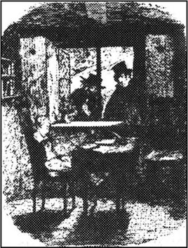
那是个极其寒冷的夜晚。凛冽的寒风将落在地面上的雪卷向空中，又吹进每一个洞穴和角落。这是个让流浪街头无家可归的人躺下来死亡的夜晚。而那些能偎坐在火炉旁的人则感谢上帝让他们有家可待，他们是更幸运的人。
在奥利弗出生的济贫院里，科尼太太——一个负责管事的寡妇——在炉火旁煮着茶，忽听有人敲门。她皱起了眉头并大声喊着：“进来。”她看见走进来的人是班布尔先生，紧皱的眉头顿时变成了甜甜的微笑。
“这鬼天气，班布尔先生。”寡妇说。
“一点不假，太太。”执事应着，“我们今天不得不把大量的面包和奶酪发放给镇子上的穷人，可他们仍在抱怨。哼，竟然有一个人回来，要一些免费的木柴！他要这个干什么？人们从来没有满足的时候，今天给了这个，明天他们还会要别的！”
科尼太太点着头，说这是叫人很吃惊的。他们一起商量了一些济贫院的事，然后班布尔先生满怀希望地看着茶壶。科尼太太请他喝茶，立刻，班布尔先生在靠近炉火的地方坐了下来，并热情地向她笑了一笑。这使她的脸微微发红，娇艳无比。她把茶杯递给班布尔先生时，他接过茶杯，顺势抚摸了一下她的手。“你真是个好心的女人，科尼太太。”执事说。
“噢，班布尔先生！”这寡妇含着害羞的微笑说。他们友好地默默相对了一会儿，班布尔先生将他的椅子挪了挪，更靠近科尼太太了。她当然没注意到这一行动。但是，在执事轻轻地将胳膊搂在了她的腰上时，她觉得她必须稍加抗议了。
这一反应使班布尔先生胆子更大了，他马上亲了她一下，但就在这有趣的一刹那，响起了一阵敲门声。班布尔先生立即跳起身来，走到了屋子的另一头。
“科尼太太，快，”门外有人喊着，“老萨莉快要死了。”
“那么，我能帮她什么忙呢？”科尼太太生气地说。
“什么忙也帮不了，太太。”外面的老妇说，“可她说，她有话要跟你说，你非得听不可，在你去之前她是不会安安静静死去的。”
科尼太太大声地抱怨着，请班布尔先生在她回来之前先别离开。随后，她跟着老妇上楼去了。
老萨莉躺在一张床上，屋子冷得像个冰窖。炉里的火又小又弱，没有一点热气。
科尼太太站在床边俯下身。床上垂死的女人睁开眼睛。“靠近点。”她小声说，“让我悄悄对着你的耳朵说。”她紧紧拉住科尼太太的胳膊，使她俯身靠近自己。“就在这间屋子里，我曾帮助过一个漂亮的年轻女人。她进来时，两只脚伤痕累累，血迹斑斑，她在这儿生下了一个男孩就死了。”
“后来呢？”科尼太太急切地追问道。
“我偷了她的东西。是在她还没有最后断气的时候偷的！”
“偷了什么东西？”
“那个东西！她身上仅有的一件东西。是金的。这东西本可以救她的命！”
“金的？这女人是谁？快告诉我！”
“她说，她死后让我收藏好这东西。”这老妇的脑子开始糊涂了，说话颠三倒四。“这可怜的姑娘，她相信我，可我却拿了她的东西。”
“快说，要不然来不及了！”科尼太太贪婪地说，“那是个什么东西，生下的男孩叫什么名字？”
这老妇说话已经非常困难了。“奥利弗。我拿的金子是——”
“嗯，嗯，什么？”
这老妇向后一仰，倒在床上死了。
科尼太太连忙返回了自己的房间，班布尔先生仍在这儿用羡慕的眼光欣赏着她屋里的家什，数着喝茶用的银勺。他们俩又重新坐在了火炉旁，班布尔的一只胳膊又回到原处，搂住了科尼太太的腰。没多久，班布尔先生就开始向那寡妇求婚，她高兴地答应了。他们举杯祝贺这一安排，这时，科尼太太将老萨莉的死和她从死去的年轻女人身上偷了不知名的金货一事一起告诉了班布尔先生。
说了许多永不变心的殷勤话之后，班布尔先生怀着关于自己将来的美好梦想离开了这间屋子，回到了自己的家。
济贫院里发生这些事的时候，插翅神偷和查理·贝茨正在费金的家里打着牌。和往常一样，神偷轻松地赢了对家。不知怎么回事，好像他每次都确切地知道对家手里有什么牌似的。突然，楼下传来一阵轻轻的门铃声，走进来的是托比——是和比尔·赛克斯、奥利弗一起去切特赛那所房子盗窃的那个人。费金跳了起来。
“他们呢？”他尖叫着，“赛克斯和那个孩子！他们躲在哪儿？”
“我们没得手，”窃贼说。
“出了什么差错？”
“他们开枪打伤了那孩子，我们俩架着奥利弗拼命逃了出来。他们带着狗追我们。”
“那孩子怎么样了？他现在在哪儿？”费金喘着气问。
“他耷拉着头，浑身发冷，因为我们得赶紧逃离那儿，所以不得不将他丢下，不管是死是活。关于这孩子我只知道这些。”
费金没有等着再听下去。他愤怒地尖叫着，冲出了屋子，匆匆地穿过几条街道，一直跑到比尔·赛克斯的家。他边上楼边琢磨着：“好啊，南希，如果这里面有什么花招，我会搞清楚的——无论你有多聪明，也瞒不过我。”
南希一个人待在楼上的房间里，头歪在桌子上。
“她又喝醉了。”费金想。在他关门时，她醒来了。他把盗窃失败的事跟她说了，她没吱声，头又歪在了桌子上。“亲爱的，你觉得这孩子现在会在哪儿？”费金问道，力图从她脸上看出点什么。“可怜的孩子！就这样被丢下不管了。”
南希朝他翻了一眼。“我倒希望这孩子已经死了，死了反倒比我们任何人都痛快。”
“什么？”费金惊叫着。
“那样更好些。我一看见这孩子就痛恨我自己，也痛恨你们所有人。”
“你又喝醉了。”费金突然生起气来。“这孩子对于我是无价之宝——现在你们这帮酒鬼把他丢了。如果赛克斯不把这孩子还给我，不管是死是活，我会去警察局告他的，我会把他送上绞刑架的。记着！”
费金说完走开时，南希又醉醺醺地回到了梦乡，她的头再一次倒在了桌子上。费金出了门，在茫茫黑夜之中往家里走去。他走到家门口的拐角处，把手伸进衣袋里摸索着找钥匙，这时，从黑暗处出来一个人影，过了马路朝他走来。
“费金，我在这儿整整等了你两个小时，你跑到哪儿去了？”这个陌生人说。
“为你办事去了，亲爱的。”费金说着，不安地瞥了他一眼。
“我们最好进去说话。”
门在他们身后关上了。他们蹑手蹑脚地爬上顶楼，生怕吵醒睡在楼下的孩子们。他们坐在黑屋子里，只有一丝烛光从通道里透进来。
这个陌生人叫蒙克斯，他现在情绪很坏。
他紧皱眉头听着费金说了一会儿，然后气愤地说：“你们的计划糟透了，你难道就不能把他训练成普通的小贼，然后让警察局抓了去流放到国外终此一生吗？”
“可是他跟这儿其他孩子不一样，”费金说，“我已经没什么可以用来吓唬他的了。反正，我已经帮过你了。他上次在书店偷东西被警察抓了去，是我让南希把他找回来的，可后来南希也觉得对不起他。”
“杀了她！”蒙克斯不耐烦地说。
“那么干我们经受不起。”费金说，“不过，我现在能使这孩子成为一个普通的盗贼，南希也会对他慢慢心狠起来的，我懂女人的心。但要是他已经死了……”
“那不是我的过错！”蒙克斯赶紧说，“我一直跟你说——你怎么着都行，就是别弄死他。如果你真杀了他，我是不会忘了这件事的。”
他猛地站了起来，紧盯对着门的一堵墙看着。“那是什么？”他惊恐地小声说。
“什么？在哪儿？”费金叫道。
“影子！我看见一个女人的影子从这墙上一闪而过！”
他们俩脸色发白，一起从屋里来到了通道。蜡烛的火苗在楼梯上投下了一条长长的黑影，可那里没有一个人。他们倾听着，屋里仍是一片寂静。
“是你的幻觉。”费金轻声地说。
“我发誓我看见了！”蒙克斯说。他们查看了楼上每一个房间，结果都是空的，像死一样寂静。蒙克斯稍微镇静了一点，凌晨一点钟他离开了这所房子。
前一天夜里切特赛的追捕并没有持续多长时间。这幢房子的仆人跑过了田野，追赶着盗贼，喊叫的人声中夹杂着一阵阵狗叫声。但赛克斯和托比毫不浪费时间，他们将失去知觉的奥利弗扔在了野地里，便沿着不同的方向消失在雾茫茫的黑夜之中了。三个仆人追赶了一阵便失去了热情。他们认为再追下去将会很危险，便返回房子，尽量待在一起，装出很勇敢的样子。
天亮了，奥利弗仍像死了一样躺在荒郊野地里。天下起了大雨，一会儿，奥利弗睁开了眼睛。他的左胳膊上全是血，而且痛得厉害。他虚弱得几乎站不起来，但他明白，如果就待在这里，他会死去的。由于疼痛，他倒吸着凉气，强迫自己站了起来，迈着缓慢的步子，摇摇晃晃地朝前走去。他不知道自己是在走向哪里，只是机械地向前移动着脚步，好像在梦境中一样。
过了一段时间，他到了小路上，四处张望着，发现不远处有所房子。他下定决心，就是死也要死在有人的地方，决不能死在这冰冷荒凉的野地里。于是他转过身，朝这房子走去。来到近处时，他竟发觉这房子很面熟，他恐惧得一阵眩晕。可他离开这儿还能去哪儿呢？他使尽了最后一点余力，爬过小径，拉响了门铃，便筋疲力尽地瘫倒在台阶上。
现在已是大上午的了。这房子里的男仆们仍在向厨娘和一位女佣描述着昨夜的冒险经历。厨娘和女佣倒抽着冷气，对当时的每一个惊险的场面表现出赞赏和恐惧。他们正说得乐不可支——这时门铃响了。他们互相看着，脸色吓得发白。没人想去开门，最后他们一起走向门口，连几条狗都去了。他们小心翼翼地打开门，只见可怜的奥利弗蜷缩成一团倒在门口的台阶上，此外没有更可怕的事。
其中的一个男人大喊了一声，抓住奥利弗的一条腿就把他拖进了大厅。“就是他！”那人兴奋地大叫着，“他就是那个贼！昨天晚上是我开枪打中他的！”
这时，楼梯口出现了一个年轻的女人。“出了什么事？请安静点！这个可怜的孩子伤得很重吗？”
“不轻。”男仆得意地说。
“那么，你们赶快去一个人到镇子上找警察来，并把罗斯伯恩医生请来，其他的人帮着把这孩子抬到楼上，放在床上。好好照看他，我求求你们了。”
9 Oliver starts another life
9
Oliver starts another life
In a comfortable, pleasant sitting-room, the two ladies of the house waited anxiously for the doctor and the police to arrive. The owner of the house, Mrs Maylie, was an older woman, but her niece, Rose, was a girl of seventeen, whose quiet beauty and gentle charm won all hearts.
As soon as the doctor arrived, he ran breathlessly into the house and burst into the room without knocking. He was clearly a good friend of the ladies.
'I never heard of such a dreadful thing! You should both be dead of fright!' he said to Mrs Maylie. 'In the silence of the night, too! Are you both all right? Why didn't you send for me at once?'
'We are quite all right,' said Rose, smiling. 'But there's an injured boy upstairs whom aunt wants you to see.'
Dr Losberne went up to examine Oliver, and was there for some time. He came down looking rather puzzled, and asked the two ladies to see the boy with him.
'I can promise you there's nothing very frightening about him,' he said.
Instead of the evil-looking robber they expected to see, the two ladies found only a pale, thin child, lying peacefully asleep.
He looked so innocent that Mrs Maylie said, 'This child could never have been in a gang of robbers!'
'It certainly seems strange,' agreed the doctor, 'but wickedness can hide behind the most gentle face, you know.'
'But he's so young, too!' cried Rose. 'Can you really believe this poor boy is a criminal? Oh, Dr Losberne, and my dear aunt, I beg you both to have pity on him.'
Mrs Maylie did not need persuading, and the doctor could not resist Rose's tears. He had, in fact, an extremely kind heart, which he tried to hide behind a quick, fierce manner though this usually deceived no one.
'Well, what's to be done, then?' he said quickly. 'We'll have the police here at any moment, ready to take the boy away and throw him into prison!'
Rose begged him to think of a plan, and the doctor thought hard for a few minutes, frowning fiercely. At last he said, 'I've got it!' and rubbed his hands together in satisfaction.
A little later, Oliver woke up and was very anxious to tell his story, although he had lost a lot of blood and was very weak. When the doctor and the ladies had heard all about his sad life, they were quite sure that they wanted to save Oliver from any unfair punishment. So Dr Losberne went down to the kitchen to talk to the three servants who had surprised Sikes and Oliver during the robbery. The doctor folded his arms and gave the men a long, hard stare.
'Tell me,' he began, 'can you be absolutely sure that the boy upstairs is the same one that was in the house last night? Well?'
The doctor, usually such a friendly man, seemed so angry that the servants stared at him, open-mouthed. The doctor gave them no time to think, and went on fiercely,
'Three men see a boy for about a second in the dark, in the middle of a lot of smoke and noise. A boy comes to the same house the next day and because one arm is injured, they think he must be the robber. Are you going to swear that this is the same boy? Well? What do you say?' he finished impatiently.
The servants looked at each other in great confusion. Suddenly there was a ring at the gate; the police officers had finally arrived. Dr Losberne gave orders that plenty of beer should be served before the officers went up to see Oliver. He also made sure that the servants had a generous amount of beer, too.
When the officers were finally allowed to see Oliver, Dr Losberne said, 'This is a boy who was shot this morning while walking on a farmer's property where he shouldn't have been. The servants saw him and immediately thought he must be the same boy from last night. But now they say they're sure it's not the same boy.'
The servants were by now so confused by beer and excitement that they were not sure of anything at all. The robbers had certainly had a boy with them, they said, but whether this boy was the same boy... well, it seemed very doubtful. The police, too, had drunk quite a lot of beer by now, and before long they were very willing to believe that Oliver was not the robber of the night before. They had their own ideas about who committed all the robberies in the area, and Oliver was unknown to them.
At last the police left, and Oliver was allowed to recover in the kind care of Mrs Maylie, Rose, and Dr Losberne. It was several weeks before he was well enough to get out of bed. But then he quickly grew stronger, and every day told his rescuers how grateful he was. One thing, however, caused him unhappiness. He wanted to find Mr Brownlow, the kind old man who had looked after him in London. 'Mr Brownlow would be pleased to know how happy I am now,' he said. So when Dr Losberne offered to take Oliver to London to see Mr Brownlow, the boy was very pleased.
They set out by coach one fine morning, and when they arrived in London, they went straight to Mr Brownlow's house. Oliver's heart beat with excitement as they stopped outside. But the house was empty. They were told by the people next door that Mr Brownlow had moved to the West Indies six weeks before. Oliver was very disappointed; he had thought about Mr Brownlow so much recently, and had always hoped to find him again. But now the kind old man had moved abroad, still believing Oliver was a lying thief, and he might hold this belief until the day he died.
This was a bitter disappointment to Oliver, but his new friends were still as kind to him as ever. They left the house in Chertsey and moved to a quiet cottage in the country, taking Oliver with them. Spring came, and in the fresh air, away from the noise and smoke and trouble of the city, Oliver began a new life. He went for walks with Rose and Mrs Maylie, or Rose read to him, and he worked hard at his lessons. He felt as if he had left behind forever the world of crime and hardship and poverty.
pleasant adj. agreeable. 愉快的。
niece n. daughter of one's brother or sister. 侄女；甥女。
charm n. attractiveness. 吸引力。
injured adj. wounded. 受伤的。
deceive v. cause sb to believe sth that is false. 欺骗。
punishment n. causing sb discomfort for wrongdoing. 处罚。
kitchen n. room in which meals are cooked or prepared, and for other forms of housework. 厨房。
absolutely adv. completely. 完全地。
second n. 60th part of a minute. 秒。
ring v. act of causing a bell to sound. 按铃。
plenty of as much as or more than is needed or desired. 大量。
property n. possessions. 财产。
allow v. permit. 允许。
rescuer n. the person who delivers, makes... safe from danger. 援救者。
abroad adv. in or to a foreign country or countries. 到国外。
belief n. sth accepted as true or real. 所相信的事物。
poverty n. state of being poor. 贫穷。
奥利弗开始了另一种生活
9 奥利弗开始了另一种生活
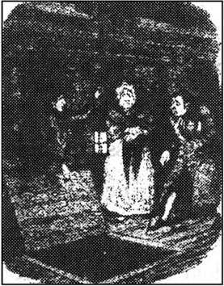
在一间舒适宜人的客厅里，房子里的两位女士正在焦急地等待着警察和医生的到来。房屋的主人梅利太太年纪比较大一些，可是她的侄女罗斯是一位十七岁的小姐，她文静的美貌和温柔的魅力赢得了每个人的心。
医生一赶到就上气不接下气地跑到房子里，顾不得敲门便冲进了屋。很显然，他是女士们的好朋友。
“我还从没听说过这么吓人的事！你们俩竟然还没被吓死！”他跟梅利太太说，“又是深更半夜的！你们俩没什么事吧？为什么当时不赶紧派人去叫我呢？”
“我们倒是好好的没事，”罗斯微笑着说，“不过楼上有个受了伤的男孩子，姑妈想请您来看看。”
罗斯伯恩医生上楼去看奥利弗，待了好一阵子。他满脸迷惑不解地走下来，请两位女士一起上去看看那孩子。
“我肯定这孩子没有什么可怕的。”他说。
这两位妇女看到的不是一个相貌可怕的盗贼，而是一个苍白、瘦弱的孩子，躺在那儿安静地睡着。
他看上去那么单纯，以至于梅利太太说：“这孩子不可能参加盗贼的团伙！”
“这件事看来确实挺奇怪的，”医生表示同意，“可你也别忘了，邪恶是可能隐藏在善良的面貌背后的。”
“可他还是个孩子！”罗斯嚷着，“你们真能相信他是个罪犯吗？哎呀，罗斯伯恩医生，亲爱的姑妈，求你们发发善心吧。”
梅利太太用不着劝说，而这位医生更经不住罗斯小姐的眼泪。其实他是个非常好心的人，他试图将善良隐藏在一种厉害而性急的态度背后——但这通常瞒不了任何人。
“那么现在该怎么办？”他急忙说，“警察随时会赶到，他们会把他带走，关进监狱。”
罗斯求他赶紧想个法子。医生紧锁眉头，苦苦沉思了几分钟。终于，他满意地搓着两只手说：“有了！”
一会儿，奥利弗醒来了，尽管他失血过多，非常虚弱，但他还是迫不及待地述说了自己的经历。医生和两位女士得知了奥利弗悲惨的身世后，便决定要帮助他，使他免受不公正的惩罚。因此，罗斯伯恩医生到下面的厨房里去和当晚撞见了赛克斯和奥利弗来偷窃的三名仆人说说这事。他将双手交插在胸前，盯着那三个人看了一会儿。
“告诉我，”他说，“你们敢绝对肯定楼上的那个孩子就是昨天晚上进到屋里来的那个孩子吗？嗯？”
这位医生以往都是非常和气友好的，可这会儿竟是如此地愤怒，使得这些仆人目瞪口呆。医生不给他们考虑的时间，就又发怒说：
“三个人在黑暗中，在烟雾和嘈杂声中只看了孩子一眼，第二天有一个孩子来到了这所房子，只因为他胳膊受了伤，这几个人居然就认为他就是那个盗贼。你们敢保证他就是那个孩子吗？嗯？你们有什么可说的？”他不耐烦地说完了。
三个仆人互相看着，莫名其妙，大惑不解。正在这时，门铃忽然响起，警官终于赶来了。罗斯伯恩医生吩咐，在警官上楼去看奥利弗之前，一定要让他们喝够啤酒；另外，他还安排好同样多的啤酒给仆人们喝。
警官最后被允许去见奥利弗时，医生说：“这个孩子今天上午被枪打伤了，是因为他在一个农场主的私人土地上走，他是不该到那儿去的。仆人们发现了，马上以为他就是昨天晚上的那个孩子，可现在他们肯定，他不是那个孩子。”
这时几个仆人已经酒劲发作，稀里糊涂，又加上过度兴奋，什么也不能肯定。盗贼中肯定有一个孩子，他们说，但究竟是不是这个孩子……，那就搞不清了。警官也喝多了点，不一会儿，他们也很愿意相信奥利弗不是前一天晚上的盗贼。谁常在这一带作案，他们自己心里有数，可奥利弗对他们来说却很陌生。
警察们终于离开了，奥利弗被允许留了下来，在梅利夫人、罗斯和医生的精心护理下恢复健康。他的病情好转到能离开床的地步用了好几周的时间，可从那以后他很快就健壮起来了，每天都跟他的救命恩人们说他是多么感恩戴德。可有一件事一直使他闷闷不乐。他想去找布朗洛先生，那个在伦敦照看过他的好心的老人。“布朗洛先生要是知道我现在多么幸福快乐，一定会高兴的。”他说。因此，当医生提出带奥利弗去伦敦看望布朗洛先生时，这孩子高兴极了。
在一个晴朗的早晨，他们坐着马车出发了，一到伦敦便直奔布朗洛先生的家。当马车停在大门外时，奥利弗由于兴奋心咚咚地跳着。然而房子是空的，没有一个人。隔壁的邻居告诉他们，布朗洛先生一家已在六个星期之前迁到西印度群岛去了。这使奥利弗异常失望，这些天来，他经常想到布朗洛先生，也一直盼望能再见到他。可现在这位好心的老人移居国外了，他仍然认为奥利弗是个说谎话的小偷；一直到死，他都有可能这么认为。
这件事使奥利弗非常痛苦失望，可他的新朋友们还是对他友好如初，他们带着奥利弗离开了切特赛的这幢房子，搬到了乡下一所安静的茅舍。春天来了，这里空气新鲜，远离闹市，远离烟雾和纷扰，奥利弗开始了一种新生活。他常常与罗斯和梅利夫人外出散步，有时罗斯读书给他听，他也努力地学习功课。他觉得自己好像永远把罪恶、艰辛和贫困的世界抛在背后了。
10 Life in the country
10
Life in the country
The weeks slipped contentedly past, and spring turned into summer. Oliver was now a strong and healthy boy, and very fond of Rose and Mrs Maylie — as they were of him.
One hot summer evening, after a walk in the country, Rose became very weak and pale, and confessed she felt ill. By the next morning she was in a dangerous fever, and Mrs Maylie and Oliver were afraid she might die. Mrs Maylie sent Oliver to the nearest town, four miles away, to post two express letters. One was to Dr Losberne in Chertsey, the other to Harry Maylie, Mrs Maylie's son.
Oliver, filled with anxiety, ran as fast as he could along the country roads and across the fields until, hot and exhausted, he reached the town. He posted the letters and turned to hurry home again. As he was running past a pub in the main street, he accidentally bumped into a tall man in black coming out. The man stared at Oliver. 'What the devil's this?' he said, stepping back.
'I'm sorry, sir. I was in a hurry, and didn't see you.'
The man murmured angrily to himself, 'Who would have thought it? Curse him! I can't get away from him!'
'I'm sorry, sir,' repeated Oliver, frightened by the man's wild, staring eyes.
'The devil break your bones!' the man said through his teeth. 'What are you doing here?' He raised his hand and started towards Oliver with a mad look in his eyes, but fell violently to the ground, shaking and gasping, in a fit. People hurried up and helped the man into the pub while Oliver, thinking that the man was mad, ran quickly home.
Mrs Maylie and Oliver passed a sleepless night, and Rose grew steadily worse as the fever burned in her. Oliver said every prayer he had ever learnt ten times over.
Late the next day Dr Losberne and Harry Maylie arrived, and the house was full of worried faces and anxious whispers. But the danger passed, and by the next night Dr Losberne was able to announce that, though seriously ill, Rose would not die. Oliver cried for joy.
A day or two later, Mrs Maylie talked privately to her son. Harry was a handsome young man of about twenty-five, with a cheerful, honest face and friendly manners. He was clearly very fond of Rose.
'I know that you want to marry Rose,' Mrs Maylie told her son, 'and she is the nicest person I know. But I want you to remember one thing — her birth.'
'Mother, that means nothing to me,' said the young man. 'I love her.'
'I know you do, Harry, but she herself is well aware of her doubtful birth, and this might affect her answer if you ask her to marry you. I know you have ambitions to enter politics. If you marry a woman with a stain on her name, even though it's not her fault, it might spoil your chances of success in life. Society is cruel, Harry. People might use the knowledge of your wife's doubtful birth against you, and against your children; too. And one day, you might begin to regret your marriage.'
'Only a selfish man would do that, Mother!' Harry answered impatiently. 'No, I am quite determined. I have loved Rose for a long time, and nothing will ever change that.'
Mrs Maylie sighed. 'And she, I know, is very fond of you. But she herself may try to protect you, and refuse an offer of marriage from you, for your sake. Remember that, Harry. But now, I must go back and sit with her.'
'Will you tell her how much I've worried about her?' asked Harry. 'And how anxious I am to see her again?'
'Of course I will,' replied Mrs Maylie.
Some days after this conversation, Oliver was sitting in the room where he studied in the evenings. It was a warm night, and he had been studying hard for some hours. He fell asleep at his desk and started dreaming. He dreamt that he was in Fagin's house again, and could see the old man sitting in his corner, whispering to another man. 'Yes, my dear,' he heard Fagin say, 'you're right. That's him.'
In Oliver's dream the other man answered, 'Of course it is! I told you I'd seen him. I'd recognize him anywhere. If I walked across his unmarked grave, I'd know it was him buried under the ground.'
He said this with such hatred that Oliver woke up from fear. In front of him, at the open window, so near he could almost touch them, were Fagin and the strange, wild man he had bumped into outside the pub in the town. In a flash, they were gone. Oliver sat still, white with terror, for a second, then shouted loudly for help.
Harry and Dr Losberne came running, and hearing what had happened, they rushed outside into the night and searched the garden and the fields around. There was no sign of anybody.
'It must have been a bad dream, Oliver,' said Harry, breathless after running through the fields. He had heard all about Oliver's past from his mother.
'No,' replied Oliver, still frightened. 'I saw them both as plainly as I see you now.'
Nothing more was seen or heard of the two men, and after a few days, the event was forgotten. Rose recovered rapidly and was soon able to go outside again. Harry Maylie waited a few days, then, as his mother had expected, he asked Rose to marry him. And as his mother had warned him, Rose refused.
'Don't you love me?' he asked her, holding her hand.
'I do,' she whispered, 'but please try to forget me. It would ruin your future as a politician if anybody found out about my birth. I could never, never forgive myself.'
Harry paused for a few minutes. 'Tell me one thing, dear Rose. Could you have accepted if your past had been different? Or if I had been poor and friendless, with no hope of riches or success?'
'I could,' answered Rose, covering her face to hide her tears. 'But as you are, I can never be more than a friend to you.'
'I shall ask you once more,' said Harry softly. 'In a year's time or less, I shall ask you to change your mind.'
The girl shook her head and smiled sadly. 'No, it will be useless.'
Harry left the next day, having asked Oliver to write to him secretly with news of his mother and Rose. From an upstairs window, Rose watched him leave with tears in her eyes.
Mr Bumble was now a married man, and not a happy one. He was no longer a beadle but the manager of the workhouse, and his wife, formerly Mrs Corney, scolded and argued with him day and night. One evening, after a particularly violent fight, when she threw things at him and chased him out of the house, he went for a walk alone through the town. He felt very sorry for himself, and finally went into a pub to find comfort in gin-and-water. A tall dark man, sitting in the corner, watched Mr Bumble while he drank. The stranger's clothes were dusty and muddy, as if he had travelled a long way. Mr Bumble began to feel uncomfortable at the man's hard stare, and tried to avoid meeting his eyes.
'I've seen you before,' the stranger said, eventually. 'You were the beadle here.'
'I was. But I don't recognize you.'
'It doesn't matter. I came here to look for you, and I'm lucky to have found you. I'd like some information.' He pushed a couple of coins across the table.
'What information?' asked Mr Bumble suspiciously, slipping the coins into his pocket.
'About a workhouse birth. A boy called Oliver Twist.'
'Young Twist! I remember him! He was a dreadful —'
'It's not him I want to talk about,' interrupted the stranger. 'I've heard enough of him. It's the old woman who was the nurse for his mother. Where is she?'
'Oh — she died last winter,' said Mr Bumble. Then he remembered that his wife had been there when old Sally had died, and he realized that this information might be worth something. He told the man that one woman had been with the nurse when she died, and had heard some secret from her.
'Where can I find this woman?' the stranger asked quickly, showing in his pale face how important this was to him.
'I can bring her to meet you tomorrow,' said Mr Bumble.
'All right. Down by the river, at nine in the evening.' The man wrote the address on a piece of paper.
'And your name?' asked Mr Bumble.
'Monks,' replied the stranger, 'but you don't need to remember it.' Then he quickly left the pub.
The next evening was dark and cloudy; a storm threatened and already the first drops of rain were falling. Mr and Mrs Bumble walked up the main street of the town, then turned towards a group of ruined old houses next to the river. Mr Bumble went first, carrying a dim light, and his wife followed closely behind. At the oldest and most ruined building, they stopped and Mr Bumble took out his piece of paper. The first distant crash of thunder shook the air, and the rain began to pour down heavily. Then they heard Monks calling out of an upstairs window.
'Is that the man?' Mrs Bumble asked her husband.
'Yes.'
'Then be careful to say as little as you can. Don't tell him I'm your wife.'
Monks opened a small door, saying impatiently, 'Come in! Don't keep me waiting!'
Mr Bumble was only brave when dealing with poor, helpless people. He felt very uneasy about entering this dark building with an ill-tempered stranger. However, he was equally afraid of his wife. Nervously, he followed her through the door.
Inside, Monks stared at Mrs Bumble for some time. 'So this is the woman, is it?'
'Yes,' replied Mr Bumble cautiously.
As they walked upstairs, there was a bright flash of lightning outside, followed by loud thunder. They sat down at the table and Monks started immediately.
'So you were present when the old woman died, is that right? And she told you something?' He stared at Mrs Bumble again.
'Yes,' said Mrs Bumble. 'Something about the mother of Oliver Twist. But first, how much will you pay me for the information?'
'If it's what I want to hear — twenty-five pounds,' said Monks. 'But it's a lot of money for something which has been lying dead for twelve years.' Reluctantly, he pushed the money across the table towards her, then bent forward to listen. The faces of the three nearly touched, as the two men leant over the table to hear what the woman had to say, and the woman leant over towards them so that they could hear her whisper. In the dim lamplight their faces looked pale and ghostly.
'The old woman who was the nurse died with only me in the room,' said Mrs Bumble.
'No one else was there?' asked Monks fiercely.
'No one.'
'Good,' said Monks. 'Go on.'
'She spoke about a young woman who had given birth in the same bed some years before. The child was Oliver Twist. And this nurse had robbed the child's mother.'
'Robbed in life?' asked Monks.
'In death. She stole from the body when it was hardly cold. But the old woman fell back and died before she could tell me more.'
'It's a lie!' shouted Monks furiously. 'You know more! I'll kill you both if you don't tell me what else she said.'
'She said no more,' repeated Mrs Bumble calmly, showing (unlike Mr Bumble) no fear of the strange man's violence. 'But in her hand I found a piece of dirty paper.'
'Which contained... ?'
'Nothing. It was only a receipt from a pawnbroker. I went to the pawnbroker and got back a little gold locket. Inside was a gold wedding ring and on the locket itself, the name "Agnes".' She put the locket on the table in front of Monks.
He picked it up immediately and looked at it closely, his hands shaking. 'Is this all?'
'It is. And now I want to ask you a question. What do you intend to do with the locket?'
'This. So it can never be used against me.' Monks suddenly pushed the table to one side and opened a small door in the floor. Down below rushed the river, its muddy waters swollen by the heavy rain.
'If you threw a man's body down there, where would it be tomorrow?' asked Monks.
'Twelve miles down the river, and cut to pieces,' replied Mr Bumble in a shaky voice.
Monks tied the locket to a heavy weight and dropped it into the water. In a second, it was gone. The three of them looked into each other's faces, and seemed to breathe more freely.
'Now we have nothing more to say,' said Monks, with a threatening look at Mr Bumble. 'And nothing to say to anyone else either. Do you understand?'
'Certainly,' said Mr Bumble, very politely. He moved away from the strange man, anxious to leave quickly.
At the door to the street, Monks turned again to Mr Bumble. 'And if we ever meet again, we don't know each other. Do you understand that as well?'
'Perfectly,' said the relieved Mr Bumble, moving away into the rain and pulling his wife with him.
slip v. go or move quietly or quickly, especially without attracting attention. 悄悄溜走。
confess v. say or admit. 承认。
anxiety n. emotional condition in which there is fear and uncertainty about the future. 忧虑。
curse v. use word, phrase or sentence calling for the punishment, injury against. 诅咒。
fit n. sudden attack of illness. 疾病的突发。
prayer n. form of words used in praying. 祈祷文。
handsome adj. (of men) good-looking, having virile beauty. 英俊的。
ambition n. strong desire. 雄心。
stain n. dirty mark. 污点。
spoil v. make useless or unsatisfactory. 破坏。
regret v. feel sorry for. 懊悔。
for sb's sake for the welfare or benefit of. 为了……之好处。
hatred n. hate. 憎恨。
plainly adv. clearly. 清楚地。
rapidly adv. quickly. 迅速地。
ruin v. cause the destruction of. 使毁灭。
hide v. put or keep out of sight. 遮掩。
formerly adv. in earlier times. 以前。
scold v. blame with angry words. 叱责。
dusty adj. covered with dust. 满是灰尘的。
push v. use force on... to cause forward movement. 推。
avoid v. keep or get away from. 避免。
worth adj. having a certain value. 值。
secret n. sth kept from the knowledge or view of others. 秘密。
storm n. occasion of violent weather conditions. 暴风雨。
threaten v. give warning of. 预示；威胁。
dim adj. not bright. 朦胧的。
thunder n. noise which usually follows a flash of lightning. 雷。
immediately adv. at once. 立刻。
present adj. being in the place in question. 出席的。
touch v. cause to be in contact with. 接触。
lean v. be or put in a sloping position. 倾斜。
locket n. small case for a portrait, a lock of hair, etc, usually worn round the neck on a chain. （以项链悬于颈上的）小盒。
pawnbroker n. person licensed to lend money at interest on the security of goods left with him. 开当铺者。
relieve v. lessen or remove (pain or distress). 减轻或解除（痛苦或困难）。
乡下的一段日子
10 乡下的一段日子
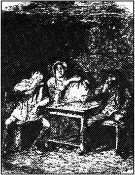
几星期的日子令人满意地过去了，春天已消逝，现在进入了炎炎夏日。奥利弗现在长得很健壮了，他非常喜欢罗斯和梅利夫人——她们也同样喜欢他。
盛夏一个酷热的夜晚，刚从外面散步回来，罗斯突然手脚发软，脸色苍白，她承认自己病了。到了第二天早晨，她仍高烧不退，梅利夫人和奥利弗担心她会死去。梅利夫人让奥利弗到四英里以外离这儿最近的一个镇子上去发两封快信。一封是发给切特赛的罗斯伯恩医生的，另一封是给梅利夫人的儿子哈里·梅利的。
奥利弗忧心忡忡，尽可能快地跑过一条条乡间道路和一片片田地，等赶到了镇子上，他已是又热又累了。他发了信，就转身一刻不停地往回赶。他匆匆跑过镇子中心街道上的一家酒馆门前时，与从酒馆里出来的一个穿着一身黑的大汉撞了个满怀。这人盯着奥利弗，一边往后退一边说：“见鬼！怎么搞的？”
“对不起，先生，我走得急，没看见您。”
那人恼怒地自言自语着：“谁料到竟然会是他？该死的！我总也躲不开他。”
“对不起，先生。”奥利弗被对方那死死盯住他的凶狠的眼睛吓坏了，又说了一句。
“让魔鬼打断你的骨头！”那人从牙缝里挤出了一句话，“你在这儿干什么？”他说着，高高举起一只大手向奥利弗走过去，眼睛里流露出疯狂的目光，但又突然急病发作，摔在了地上，颤抖着，喘着粗气。周围的人赶紧把他搀起来扶进了酒馆；奥利弗以为他是个疯子，就急忙跑回家了。
梅利夫人和奥利弗一夜没睡，罗斯的病情继续恶化，高烧不止。奥利弗不停地替她祈祷，一连十几遍地念着他所知道的各种祷文。
第二天晚些时候，罗斯伯恩医生和哈里·梅利都赶来了。家里每个人都是满脸的焦急、忧虑，低声说着话。但危险终于过去了，到了第二天的晚上，医生终于得以宣布，罗斯虽然病得很厉害，但已脱离了生命危险。奥利弗高兴得流出了眼泪。
一两天后，梅利夫人和儿子单独进行了一次谈话，哈里大约二十五岁，年轻英俊，一脸的和气诚实，待人非常友好。很明显，他是非常喜欢罗斯的。
“我知道你想娶罗斯做你的妻子，”梅利夫人跟儿子说，“她也是我所遇到的最好的女孩，可有一件事你别忘了——她的出生。”
“母亲，我不在乎这些。”年轻人说，“我爱她。”
“我懂你的心思，哈里，可她自己很清楚她身世可疑，如果你向她求婚，这件事可能影响到她的答复。我也知道你有心要进入政界，如果你娶了一个姓氏上有污点的女人做妻子，哪怕这并不是她自己的过错，此事也可能会毁了你出人头地的机会。社会是残酷的，哈里。人们会用你妻子不明不白的出生来攻击你以及你的子女。有一天，你可能要为这桩婚事后悔的。”
“母亲，只有自私的人才会这么做！”哈里不耐烦地说，“不，我决心已定，我爱慕罗斯已久，这是任何事都改变不了的。”
梅利夫人叹了口气。“她，我知道，也是非常爱你的，可她自己可能想要保护你，为了你她会拒绝你的求婚的。记着这一点，哈里。我现在必须去陪她一会儿了。”
“请您告诉她，我非常为她的健康担心。”哈里说，“还请告诉她，我迫切想再见到她，好吗？”
“我当然会的。”梅利夫人回答说。
在那次谈话几天之后的一个晚上，奥利弗又像往常那样坐在那间屋子里学习。那天晚上很燠热，他认真地学了好几个小时，便坐在桌前犯起困来了，迷迷糊糊地做了个梦。他梦见他又回到了费金的家，看见那个老家伙坐在屋子的角落里，跟另一个人小声地嘀咕着什么。“没错，亲爱的，”他听见费金说，“你说对了，那就是他。”
奥利弗在梦中听见另一个人回答说：“绝对是他！我跟你说过我看见他了。无论他到了哪儿我都能认出他来；他就是死了，埋进了土里，坟上没有标志，我从坟上走过，也能认出下面埋的是他。”
他这话说得凶狠无比，把奥利弗给吓醒了。就在他的眼前，打开着的窗口外，他一伸手便能摸着的地方，站着费金和那个奇怪的、和奥利弗在镇子上的酒馆前撞了个满怀的疯子。突然，他们又不见了。奥利弗霎时间吓得脸色惨白，坐在那儿动弹不了，然后，他猛地高声喊着救命。
哈里和罗斯伯恩医生闻声赶来，问清了是怎么回事后，就冲进了夜色中，在屋子花园和周围的田地里来回搜寻，但没发现什么人。
“奥利弗，你一定是做了个噩梦！”哈里在田地里跑了一大圈回来，上气不接下气地说。他从母亲那里得知了奥利弗的全部经历。
“不是。”奥利弗仍害怕地说，“我清清楚楚地看见了他们俩，就像现在看见你站在这儿一样。”
此后没有人再发现这两个人，几天过去，这件事就被人们忘记了。罗斯恢复得很快，不久又像以前一样能够出来活动了。哈里·梅利又等待了几日，之后，正如他母亲预料的那样，他请求罗斯小姐嫁给他。也正像他母亲提醒过的那样，他遭到了罗斯的拒绝。
“难道是你不爱我吗？”他拉着她的手说。
“我是真心地爱你，”她低语着，“但请你设法忘掉我。一旦有人知道了我不明不白的出生，这将会断送你作为一个政治家的前途。这将会使我永远、永远无法饶恕自己。”
哈里半天沉默不语。“亲爱的罗斯，告诉我一件事，假如你的过去不是这样，假如我是个贫穷的没有朋友的人，没有希望会变得富有，也没有希望会成功，那你会答应我的请求吗？”
“我会的。”罗斯蒙住脸，掩盖着流出的泪水，说，“但像你目前这种情况，我最多只能做你的朋友。”
“我会再向你求婚的，”哈里含情脉脉地说，“只需一年的时间，或者用不了一年，我会求你改变主意的。”
女孩摇着头，伤感地微笑着说：“不会的，一切都将无济于事。”
第二天哈里便离开了家，他背地里嘱咐奥利弗给他写信，告知关于母亲和罗斯的情况。罗斯站在楼上的窗前，泪水涟涟地目送着哈里离去。
班布尔先生现在是个结了婚的人了，可他并不是个幸福的人。他已升为济贫院的院长，不再是以前的那个执事了。他的妻子，以前的科尼太太，整天同他吵吵闹闹，骂骂咧咧。一天晚上，刚刚结束了一场特别激烈的争斗（她朝他身上扔东西，把他赶出了家门），他沿着镇子的街道朝前走着。他自怜自怨，最后进了一家小酒馆，要了一点加了水的杜松子酒，借酒浇愁。一个黝黑的高个子男人坐在酒馆的一角，瞧着喝酒的班布尔先生。这个陌生人穿着一身沾满了泥土的衣服，好像刚从很远的地方来到这儿。班布尔先生被他盯得有点不自在，尽量躲避着他的目光。
“我以前见过你。”这个陌生的人最终说，“你那时是这儿的执事。”
“是的，可我怎么也想不起您来了。”
“这不要紧，我到这儿就是来找你的，很幸运，竟然碰到了你。我想从你这儿打听点事。”他从桌子的另一头推过来几个硬币。
“您想知道什么？”班布尔先生疑心重重地问，并一下子将那几个硬币放进了衣袋。
“关于一个出生在济贫院，叫奥利弗·特威斯特的男孩。”
“小特威斯特，我知道他，他是个非常讨厌的——”
“我要知道的不是关于他的事，”陌生人打断了他的话，“他的事我全都听烦了，我想知道的是看护过他妈妈的那个老女人，她现在在什么地方？”
“噢，她去年冬天就死了。”班布尔先生说。他突然想起，老萨莉死的时候，他妻子就在场。他意识到这一条消息可能值几个钱，就跟那个人说，老看护死的时候有一个女人在身边，并从她那里知道了一些秘密。
“我怎么才能找到这个女人？”陌生人急切地问，他那苍白的面色显示出这事对他有多么重要。
“我明天可以把她带到这儿来见您。”班布尔先生说。
“太好了，那就在下面的河岸上，晚上九点整。”那人将地址写在了一张纸头上。
“您叫什么名字？”班布尔先生问。
“蒙克斯。”陌生人回答道，“但是你不必记住这个。”然后他便急匆匆地离开了酒馆。
第二天的夜晚又黑又阴沉，天上开始掉着雨点，一场大雨就要来临了。班布尔夫妇沿着镇子的主要街道走着，然后拐弯朝着河边一些破败的旧屋子走去。班布尔先生手里提着一盏昏暗的灯走在前头，他的妻子紧跟在身后。他们在一幢最古老和最破旧的楼前停了下来，班布尔先生拿出了他记地址的纸条。第一声惊雷在远处空中炸响，随后大雨倾盆而下。这时他们听见蒙克斯从楼上的一个窗口叫了一声。
“是那个人吗？”班布尔太太问自己的丈夫。
“是他。”
“尽量少说话，别跟他说我是你妻子。”
蒙克斯打开一扇小门，不耐烦地说：“快进来！别让我再等了！”
班布尔先生只有在对付穷人和孤苦无援的人时才是勇敢的，要同这个脾气暴躁的陌生人一起走进黑洞洞的楼里，他感到十分胆怯。但他也同样怕他的妻子。他紧张地跟着她进了门。
到了屋里，蒙克斯盯着班布尔太太看了片刻。“她就是那个女人吗？”
“是她。”班布尔先生十分小心地回答。
他们上楼时，外面忽然打了一下闪电，接着马上是一阵雷鸣。他们在一张桌子旁坐下，蒙克斯迫不及待地开始讲话。
“那个老女人死的时候你在场，是吗？她跟你说了些什么？”他又紧盯着班布尔太太。
“是的，”班布尔太太说，“一些关于奥利弗·特威斯特的母亲的事。但是，您首先要告诉我，知道这些情况您会给我多少钱？”
“假如是我想要知道的事，我会给你二十五英镑，”蒙克斯说，“对于一个沉睡了十二年的消息，这些钱不算少了。”说着，他不情愿地将桌子上的钱朝她面前推了过去，然后俯身向前去听。三个人的脸几乎凑在了一起，两个男人俯在桌子上方凑向这女人，听她说些什么，她也朝他们靠了过去，好让他们能听见她小声说话。在昏暗的灯影下，他们的脸苍白得像幽灵一样。
“那个当看护的老女人死的时候只有我在她的房间里。”班布尔太太说。
“还有别人在场吗？”蒙克斯恶狠狠地问。
“没有。”
“太好了，”蒙克斯说，“接着说。”
“她说的是多年前一个年轻的女人就在她躺的那张床上生下了一个孩子。这孩子就是奥利弗·特威斯特。这个老看护偷了他妈妈的一样东西。”
“是在她死之前拿的吗？”蒙克斯问。
“是在她断气之后，尸骨还没有寒冷的时候。没跟我说上几句话，老萨莉便倒下死了。”
“撒谎！”蒙克斯恼怒万分地叫嚷着，“你肯定还知道更多的事！如果你不把她的话全说出来，我会宰了你们俩的。”
“她没能说更多的话。”班布尔太太冷静地说。她（不像班布尔先生）没有显露出一点害怕这个陌生人的暴虐的样子。“可我在她手里发现了一张肮脏的破纸头。”
“里面有……？”
“什么都没有，是一家当铺的收条。我找到了这家当铺，赎回的是一个挂在项链上面的小金盒子，里面放着一枚金的结婚戒指，金盒子上写的人名是‘阿格尼丝’。”她把小金盒子放在了桌子上蒙克斯的面前。
他一把抓起小盒子，放在眼前仔细地看着，两只手不停地颤抖。“只有这些吗？”
“就这些。现在我想问您一句，您打算把这盒子怎么办？”
“这么办！这样谁也不能用它来找我的麻烦了。”蒙克斯猛地把桌子推到了一边，打开了地板上的一个暗门，下面是汹涌的河水。由于大雨，泥浆般的河水涨了起来。
“假如把一个人的尸体从这儿扔下去，明天他会到了什么地方？”蒙克斯问。
班布尔先生用发抖的声音说：“十二英里以外，裂成了碎片。”
蒙克斯将金盒子系在了一个很重的东西上，把它扔进了水里。它刹那间就消失了。三个人互相看着，喘出的气好像都轻松了许多。
“现在我们没有更多要说的话了，”蒙克斯威胁地看着班布尔先生说，“别跟任何人说起这件事，明白吗？”
“当然了。”班布尔先生有礼貌地说。他离开这个陌生的人远一点，急于尽快走开。
在临街的门口处，蒙克斯又转向班布尔先生说：“如果我们以后再碰到，谁也不认识谁。你明白吗？”
“那是绝对的。”班布尔先生如释重负地说道，然后拉着妻子走进了大雨里。
11 Nancy makes a visit
11
Nancy makes a visit
On the evening after the Bumbles' little business meeting, Mr Bill Sikes, waking from a sleep, called out to ask the time.
The room he was lying in was very small and dirty. It was a different room from the one he had occupied before the Chertsey expedition, but it was in the same poor part of London. There were so few possessions or comforts in the room that it was clear Mr Sikes had met hard times. He himself was thin and pale from illness, and was lying on the bed, wrapped in an old coat. The white dog lay on the floor next to him.
Seated by the window was Nancy, repairing Sikes' old jacket. She, too, was thin and pale. At Sikes' voice she raised her head from her work. 'Not long past seven,' she said. 'How do you feel now, Bill?'
'As weak as water. Help me get up, will you?'
As Nancy helped him out of bed, Sikes swore and cursed at her clumsiness. Illness had not improved his temper.
'You wouldn't speak like that if you knew how kindly I've nursed you these last few days,' said Nancy. 'So many nights, I've looked after you.' She sat down in a chair, exhausted.
'Get up!' shouted Sikes. 'What's wrong with you?'
But Nancy was unable to get up. Her head fell back against the chair and she fainted.
Sikes swore and cursed again, but Nancy remained unconscious.
'What's the matter here?' asked a voice from the door, and Fagin, followed by the Artful Dodger and Charley Bates, entered the room. When they saw Nancy, they hurried to help her. Charley rubbed her hands and the Dodger gave her a drink from the bottle he carried. Gradually, Nancy recovered her senses.
Sikes then turned to Fagin. 'What are you here for?' he asked roughly. 'You haven't been here for weeks — all the time I was ill. I haven't two coins to rub together. Why didn't you help me? You treat me worse than a dog!'
'Don't be bad-tempered, my dear,' said Fagin calmly. 'I haven't forgotten you, Bill.'
'Well, what about some money, then? I've done enough work for you recently — what about some money?'
'I haven't a single coin with me, my dear,' said Fagin.
'Then go and get some — you've got lots at home. No, I don't trust you. Nancy can go back with you to your house and fetch some money. I'll stay here and sleep.'
After a good deal of arguing, Fagin managed to reduce the amount Sikes was demanding from five pounds to three pounds. He went back to his house with Nancy and the boys.
When they were inside, Fagin told the girl, 'I'll just go upstairs and fetch the cash for Bill, my dear. There's little money in this business, Nancy, little money and no thanks — but I'm fond of seeing the young people around me.'
Suddenly there was a man's voice at the front door. As soon as Nancy heard it, she sat up in her chair.
'That's the man I was expecting earlier,' said Fagin. 'Don't worry. He'll only be ten minutes.'
The man entered the room. It was Monks. When he saw Nancy, he moved back, as if he had expected no one but Fagin.
'It's all right, only one of my young people,' Fagin said to him. 'Did you see him?'
'Yes,' answered Monks.
'Any news?'
'Good news,' said Monks with a smile. 'Let me have a word with you.' He and Fagin went upstairs to talk privately.
As soon as they had left the room, Nancy took off her shoes and crept silently up the stairs to listen in the passage — as she had done once before. She was gone for a quarter of an hour, then, like a ghost, she reappeared in the downstairs room and sat down. Immediately afterwards, the two men descended the stairs.
'How pale you are, Nancy!' said Fagin, once Monks had left the house. 'What have you been doing to yourself?'
'Nothing — except waiting here for you too long,' she answered, turning her face away from him. 'Now, where's the money for Bill?'
With a sigh for every piece of money, Fagin put the agreed amount into her hand.
When Nancy was out in the street again, she sat down on a doorstep, and for a few minutes seemed unable to move. Then she started running wildly through the streets, and when she was exhausted she stopped and burst into tears. This strange mood seemed to leave her then, and she turned and hurried back to Sikes' house.
At first when she returned, Sikes noticed nothing unusual about her. Fagin, with his sharp, suspicious eyes, would have noticed something at once. But as night came, the girl's nervous excitement increased and even Sikes was alarmed by the paleness in her cheeks and the fire in her eye.
He lay in bed, drinking hot gin-and-water, and staring at her. 'You look like a corpse that's come back to life again. What's the matter with you tonight?'
'Nothing. Why are you staring at me so hard?'
'Either you've caught the fever yourself, or — no, you're not going to... you wouldn't do that!'
'Do what?' asked the girl.
'There's not a girl alive as loyal as you. If you weren't, I'd have cut your throat months ago. No, you must have the fever coming on, that's it. Now, give me some of my medicine.'
Nancy quickly poured out his medicine with her back to him. He took it, and after turning restlessly for some time, he eventually fell into a deep, heavy sleep.
'The drug's taken effect at last,' Nancy said to herself as she rose from her position beside the bed. 'I hope I'm not too late.'
Quickly, she put on her coat and hat, looking round fearfully as if she expected at any moment to feel Sikes' heavy hand on her shoulder. She kissed the robber's lips softly, then ran from the house without a sound.
She hurried in the direction of west London, pushing past people on the pavement, and running across crowded streets without looking.
'The woman is mad!' said the people, turning to look at her as she rushed past them.
She came to a wealthier part of the town where the streets were quieter, and before long she had reached her destination. It was a family hotel in a quiet street near Hyde Park. The clock struck eleven as she entered.
The man at the desk looked at her and asked, 'What do you want here?'
'I want to see Miss Maylie.'
The man looked at the young woman with strong disapproval. 'She won't want to see someone like you. Come on, get out.'
'Let me see her — or two of you will have to throw me out!' said Nancy violently.
The man looked at her again, and decided it would be easier to do as she asked. He led her upstairs to Rose's room.
Nancy entered with a brave face but with fear in her heart.
'Please sit down and tell me why you wish to see me,' said Rose Maylie, looking with some surprise at this poor, rough girl from the streets. Rose's manner was so kind and sincere, and so unexpected, that Nancy burst into tears.
When she had recovered a little, she asked, 'Is the door shut?'
'Yes,' answered Rose, a little nervously. 'But why?'
'Because I am about to put my life, and the lives of others, in your hands. I am the girl that kidnapped little Oliver and took him back to old Fagin's house on the night Oliver was going to the bookseller.'
'You!' said Rose.
'Yes, it was me. I am that wicked creature you have heard about. I've no friends except thieves and robbers. I've lived on the streets since I was a child, cold, hungry, among people who are always drunk and fighting. And that's where I'll die, too.'
'I pity you!' said Rose in a broken voice.
'But I'll tell you why I'm here. Do you know a man called Monks?'
'No,' answered Rose.
'He knows you. I heard him tell Fagin that you were at this hotel. Maybe he's changed his name. Soon after Oliver was put into your house on the night of the robbery, I listened in secret to a conversation between Monks and Fagin in the dark. And I heard Monks say that he'd seen Oliver in the street, and that he knew at once Oliver was the child he was looking for, although I couldn't hear why. Monks then agreed to pay Fagin some money if he could find Oliver again, and more money if he could turn the poor boy into a thief.'
'Why?' asked Rose.
'He saw my shadow on the wall as I listened, and I had to escape. I didn't see him again until last night.'
'And what happened then?'
'I listened at the door again. And I heard Monks say this: "So the only proof of the boy's identity is at the bottom of the river, and the old woman who received it is dead." He and Fagin laughed. Then Monks said that he had all Oliver's money safely now, but how funny it would be if the boy went to prison for stealing, after his father's unfair will.'
'What is all this?' asked Rose.
'It's the truth, lady. Then Monks said he couldn't have Oliver killed because suspicion would point to himself. But he'd try for the rest of his life to harm the boy if he could. Then Monks laughed again about the money Oliver should have got from his father's will. "My young brother Oliver will never see that money!" he said.'
'His brother!' exclaimed Rose.
'Those were his words,' said Nancy, looking round uneasily, as if she still expected to see Sikes. 'And then he talked about how amazed you would be if you knew who Oliver really was.'
'And this man was serious?'
'His voice was full of anger and hatred. I know many people who do worse things, but I'd rather listen to all of them than to this man Monks. But I must get back now, or people will wonder where I've been.'
'Back! How can you go back to such a life?' asked Rose. 'You've told me all this. Now I can help you by letting you stay somewhere safe.'
'No. Perhaps it's hard for you to believe, but there's one man, the most dangerous of them all, that I can never leave. You're the first person who's ever spoken to me so kindly — but it's too late.'
'It's never too late!'
'It is!' cried the girl. 'I can't leave him now. And if I tell anyone about this man, he'll die.'
'But how can I find you again, when we want to investigate this mystery further?'
'I'll meet you secretly, if you promise not to watch or follow me,' said Nancy. 'And if you promise just one more thing — not to do anything to hurt the man I can never leave.'
'I promise.'
'Every Sunday night, between eleven and twelve, I will walk on London Bridge if I am alive. Meet me there if you want more information.'
As Nancy said these words, she left the room and ran down the stairs and out into the street once more. Rose was left alone, her thoughts in great confusion, as she wondered desperately what to do and who to ask for advice.
The next morning, Oliver, who had been out walking, ran into Rose's room at the hotel. He was breathless with excitement.
'I can't believe what I've seen! Now you'll all know that I've told you the truth!' he shouted.
'I know you've always told us the truth — but what are you talking about?' asked Rose.
'I've seen Mr Brownlow, the kind man who was so good to me.'
'Where?'
'Going into a house,' said Oliver, crying with joy. 'I've got the address here.'
'Quick,' said Rose. 'Call a coach. I'll take you there immediately.'
The idea came to Rose that perhaps Mr Brownlow would advise her. She had been afraid to tell Nancy's story to Dr Losberne, since the good doctor was very excitable and often acted with more enthusiasm than wisdom.
In less than five minutes they were in the coach on their way to the address. Rose went in first to talk to Mr Brownlow alone. She was taken into his study, and polite greetings were exchanged. When they were seated again, Rose said,
'This will surprise you very much, but you were once very kind to a dear friend of mine, and I'm sure you will be interested to hear news of him.'
'Really? May I ask you his name?'
'Oliver Twist.'
Mr Brownlow said nothing for a few seconds, but simply stared at Rose. Finally he moved his chair nearer to her and said with great feeling, 'I once thought that he was a liar and a thief. If you have evidence to show me I was wrong, please tell me at once.'
'I know him to be a child with a warm heart,' said Rose. 'And despite the hardships of his life, he's a better person than almost anyone I know.'
'I looked for him everywhere,' said Mr Brownlow, 'but I could never find him. I could never quite believe that he really did intend to rob me.'
Rose told him everything that had happened to Oliver since then. She finished by saying, 'And his only sorrow, for some months, has been that he could not find you, his former friend.'
'Thank God!' said Mr Brownlow. 'This is great happiness to me, great happiness. But why haven't you brought him with you, Miss Maylie?'
'He's waiting in a coach at the door,' replied Rose.
Mr Brownlow hurried out of the room, down the stairs and into the coach without another word. In a minute he had returned with Oliver. 'How well he looks!' he said. 'New clothes, the same sweet face, but not so pale; the same eyes, but not so sad.'
They talked with great joy for some time. Then Mr Brownlow sent for Mrs Bedwin, the old housekeeper. She came in quietly and waited for her orders.
'You get blinder every day,' said Mr Brownlow impatiently.
'People's eyes, at my time of life, don't improve with age,' replied the old lady.
'Then put on your glasses.'
As she searched for them in her pocket, Oliver could not wait any longer and ran into her arms.
'Dear God!' she said. 'It's my innocent boy!'
'My dear old nurse!' cried Oliver.
'I knew he would come back,' said the old lady, holding him in her arms. 'How well he's dressed — how well he looks again!' She laughed and cried at the same time, and could not let Oliver go.
While Oliver talked to Mrs Bedwin, Rose asked Mr Brownlow if she could speak to him privately. He led her into another room, and there listened, with a good deal of amazement, to Rose's account of her extraordinary conversation with Nancy. Between them, they decided that Mrs Maylie and Dr Losberne should be told, and that Mr Brownlow would come to the hotel that evening for a discussion. For the moment, nothing would be said to Oliver himself.
That evening at the hotel Oliver's four friends met as arranged. Dr Losberne, of course, was full of immediate plans to rush round London arresting all the gang and hanging them at once. Mr Brownlow, fortunately, was able to persuade him to abandon this wild idea.
'Then what's to be done?' cried the doctor impatiently.
'First,' said Mr Brownlow calmly, 'we must discover who Oliver's parents were. Then — if this girl's story is true — we must regain the inheritance that should have been his.'
'Yes, yes,' said the doctor, nodding in agreement. 'But how shall we achieve these aims?'
'We must find this man Monks,' said Mr Brownlow. 'Nancy will not betray the man who is special to her, but she will surely agree to tell us how or where to find Monks. Then we must find a way to force Monks to talk. We must be both cautious and clever. After all, we have no proof against him, and if we cannot make him talk, this mystery will never be solved. But we'll have to wait five days until Sunday before we can meet Nancy on London Bridge. Until then, we can do nothing.'
occupy v. live in, be in possession of. 居住；拥有。
wrap v. cover or roll up (in). 包。
repair v. restore to good condition. 修补。
improve v. make or become better. 改善。
gradually adv. by degrees. 逐渐。
single adj. one only. 唯一的。
recently adv. lately. 最近地。
reduce v. make less. 使较少。
cash n. money in coins or notes. 现款。
be fond of like. 喜欢。
privately adv. not in public. 私下地。
descend v. come or go down. 下来。
unusual adj. strange. 不寻常的。
increase v. make or become greater in size, number, degree, etc. 增多。
corpse n. dead body. 尸体。
pour v. cause to flow in a continuous stream. 倒。
direction n. course taken by a moving person or thing. 方向。
destination n. place to which sb or sth is going or is being sent. 目的地。
throw v. cause to go through the air, usually with force, by a movement of the arm or by mechanical means. 投；扔。
manner n. person's way of behaving towards others. 态度。
sincere adj. genuine. 诚挚的。
bookseller n. person who sells books retail. 书商。
pity v. feel genuine regret for. 同情。
proof n. evidence. 证据。
identity n. who sb is. 身份。
unfair adj. not right or fair, unjust. 不公平的。
harm v. cause damage to. 伤害。
dangerous adj. likely to cause danger or be a danger. 可能引起危险的。
investigate v. examine, inquire into. 调查。
promise v. to write or speak to do or not to do sth. 允诺。
shout v. loud call. 大叫。
wisdom n. quality of being wise. 智慧。
truth n. that which is true. 事实；真相。
information n. sth told. 消息。
greeting n. first words used on seeing sb. 问候之词。
exchange v. give, receive in place of another. 交换；互换。
evidence n. anything that gives reason for believing sth, that makes clear or proves sth. 证据。
blind adj. without the power to see. 盲目的。
account n. description. 叙述。
extraordinary adj. beyond what is usual or ordinary. 非常的；特别的。
conversation n. talking. 会谈。
abandon v. give up. 放弃。
inheritance n. what is inherited. 遗产。
achieve v. accomplish. 达成。
betray v. be disloyal to. 背叛。
南希的造访
11 南希的造访
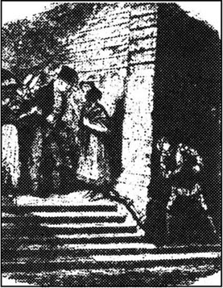
在班布尔夫妇那次小小的业务洽谈之后的晚上，比尔·赛克斯先生一觉醒来，大声地问着是什么时候了。
他躺在一间脏乱狭小的屋子里。这已不是他去切特赛远征之前住的那间房子了，但仍旧是在伦敦原先的那个贫民区。屋里没有什么家什和用具，很明显，赛克斯先生遇上艰难的日子了。由于得了一场病，他非常瘦弱、苍白，身上裹着一件破旧的大衣，缩在床上。那条白色的狗趴在旁边的地上。
南希坐在窗户旁边，手里缝补着赛克斯的一件旧外衣。她也很消瘦，面无血色。听见赛克斯的喊声，她停下手里的活计，抬起头说：“刚过七点钟，比尔，你这会儿感觉怎么样了？”
“浑身没劲。你扶我起来，行吗？”
南希扶他从床上起来时，他张口就骂，嫌她笨手笨脚。一场大病也没能使他暴躁的脾气有所改变。
“你要是知道这些天我是怎么伺候你的，就不该这样对我恶语相加。”南希说，“这么多个晚上，我都一直看护着你。”她疲惫地坐在一张椅子上。
“站起来！”赛克斯吼叫着，“你是怎么了？”
可南希已经站不起身了。她的头向后仰去，撞在椅子上；她昏了过去。
赛克斯又是一阵咒骂，可南希一点知觉都没有了。
“这里究竟出了什么事？”从门外传来了一个人的声音，原来是费金走了进来，后面跟着插翅神偷和查理·贝茨。他们看到南希，连忙过去帮助她。查理不停地搓着她的两只手，神偷拿出自己带在身上的一瓶酒给她灌了一口。慢慢地，南希恢复了知觉。
赛克斯这时转向费金。“你来干什么？”他暴躁地问，“你已有好几个星期不来这儿了——而我一直病着，身上连一个小钱都没有了。你为什么不来帮帮我？你待我连一条狗都不如！”
“亲爱的，别生气，”费金不慌不忙地说，“比尔，我可没忘记你。”
“那么，给我一些钱，怎么样？这些日子我可替你干了不少活儿——给我点钱行吗？”
“我身上连一个子儿都没有了，亲爱的。”费金说。
“那去拿点来——你家里有的是钱。不，我才不会相信你呢。南希可以跟你回去拿点钱来。我留在这儿睡一觉。”
争执了好一会儿，费金才设法将赛克斯提出的数额从五英镑降到了三英镑。南希以及两个男孩一起跟着他回家了。
到了家里，费金对那姑娘说：“亲爱的，我上楼去给比尔找点现钱。这行当没多少油水，南希，钱又少，又不落好——可我就是喜欢看着年轻人在我身边。”
突然，前门外传来了一个男人的声音，南希一听见这声音，立刻在椅子上挺直了身子。
“这人是我早就等着的，”费金说，“别担心，他待十分钟就走。”
这男人走了进来，原来是蒙克斯。他看见南希在这儿，就又退了出去，看来，他原以为屋里只有费金一个人。
“没关系，她是我的一个年轻人。”费金对他说，“你见到他了吗？”
“见到了。”蒙克斯说。
“有什么消息吗？”
“好消息，”蒙克斯笑着说，“我想跟你单独谈谈。”他和费金上楼去进行秘密谈话。
他们刚出去，南希就脱下鞋蹑手蹑脚地跟了上去，在过道里偷听他们的谈话——就跟上次一样。一刻钟之后，她像幽灵一样，又回到了楼下的屋子里坐定。紧接着，两个男人也走下了楼梯。
蒙克斯刚出房门，费金就说：“南希，你脸色苍白，到底怎么了？”
“没什么——就是坐在这儿等的时间长了点，”她说着把脸扭到一边去了，“好吧，你给比尔的钱呢？”
费金将事先谈好的钱放在她手里，每放下一块钱就叹一口气。
南希出门来，又到了马路上。她坐在一家门口的台阶上，有好一阵子似乎不能动弹了。接着，她拼命地在马路上疯跑着，直到疲惫不堪才停住脚，放声大哭起来。然后，这种一时的奇怪心情好像消失了，她回转身，匆匆回到了赛克斯的家。
她初到家时，赛克斯并没有注意到她反常的情绪。如果是费金，用那狡猾多疑的眼睛一扫，就会马上注意到有什么事不对头了。可是到了晚上，这姑娘更加紧张不安，连赛克斯都对她苍白的面色和着火似的眼睛起了警惕之心。
他躺在床上，喝着辣辣的加水杜松子酒，眼睛死盯着她。“你看上去像个还魂的死尸。你今晚是怎么了？”
“没什么，你干吗这么死死地盯着我看？”
“你要么是也得了热病，要么就是想去——不，你不可能去……你不会那么干的！”
“干什么？”姑娘问。
“没有女孩像你这样忠实于我。不然的话，几个月前我就割断你的喉咙了。不，你一定是染上了热病，就是这样。把我的药递给我。”
南希背对着他迅速将药倒出来。他吃了药，在床上来回地翻动着，不一会儿便死睡过去。
“这药终于起作用了。”南希自言自语着，从床边站了起来。“我希望我不会太迟了。”
她迅速套上外衣，戴上帽子，恐惧地朝四处看了看，好像随时都会感觉到赛克斯一只沉重的手压在她的肩膀上。她轻柔地在盗贼的嘴唇上吻了一下，便不声不响地从这房间跑了出去。
她急匆匆地朝着伦敦西部赶去，推搡着人行道上来往的行人，连看也不看一眼就跑步横穿车水马龙的街道。
“这女人一定是疯了！”当她直冲过身旁时，人们转过身来看着她说。
她来到了富裕一些的地区，这里街道更僻静，不一会儿她便到了她要找的地方。这是一家家庭旅馆，它靠近海德公园，坐落在一条安静的街道上。当她走进去时，大钟正好敲响了11点。
一个坐在柜台后面的男人问：“你有什么事？”
“我想见梅利小姐。”
这男人带着极端不屑的神情看着这个年轻的女人，说：“她是不会见像你这样的人的，赶快出去。”
“让我见见她——否则你们得有两个人才能把我赶出去！”南希激烈地说。
那人又看了一眼南希，心想还不如答应她的请求更省事些，便领着她来到了楼上罗斯的房间。
南希故作镇静地走进屋子，其实心里害怕得很。
“请坐下，告诉我你找我有什么事。”罗斯·梅利稍带惊奇地看着这个可怜、粗俗的游荡街头的女孩，说道。罗斯的态度非常善良、真挚，这是南希万万没有料到的，她哇地一声哭了起来。
她稍稍平静了一点，便问：“门关着吗？”
“是的。”罗斯说，并有点不安地问，“这是为什么？”
“因为我将要把自己的性命，还有别人的性命都交给您了。我就是那天晚上小奥利弗到书商家去时将他拐骗回费金家的那个女孩。”
“你！”罗斯说。
“是，是我，我就是那个您听说过的坏家伙。除了小偷和强盗我没有别的朋友。我从小就住在街上，生活在寒冷和饥饿之中，身边的人永远喝得醉醺醺的，总要打架。我也将会死在那里。”
“我很可怜你！”罗斯带着哭腔说道。
“但我要告诉你，我是为什么来找您的。您认识一个叫蒙克斯的男人吗？”
“不认识。”罗斯答道。
“可他认识你，我听他告诉费金说，你住在这家旅馆。也可能是他改了姓名。盗窃的那天晚上，他们把奥利弗塞进了你们家。此后不久，我就偷听到蒙克斯跟费金的对话。我听见蒙克斯说，他在路上碰见了奥利弗，而且他一眼就认出了这就是他正在寻找的那个孩子。但我没听清为什么。蒙克斯还答应，如果费金能再找到这孩子，他就给他一笔钱。要是他能把那可怜的孩子变成一个盗贼，他会给他更多的钱。”
“为什么？”罗斯问。
“我偷听时，他在墙上发现了我的影子，我不得不逃开。从那时起，一直到昨天晚上，我再没见过他。”
“后来又发生了什么事？”
“我昨天又去门口偷听，听见蒙克斯说：‘唯一能证实这孩子身份的东西现在被扔在了河底，拿到过这东西的那个老女人已经死了。’他和费金放声大笑。然后，蒙克斯说，他现在可以安全地得到奥利弗的全部钱财了，但是，在他父亲立了不公正的遗嘱之后，假如奥利弗因偷盗进了监狱，这事将是多么地可笑啊。”
“这究竟是怎么回事？”罗斯问道。
“这是事情的真相，小姐。蒙克斯后来说，为了避免让人们猜疑他，他不会杀死奥利弗的。但他会在他的余生，尽可能地去伤害这个孩子。然后蒙克斯又为奥利弗按父亲的遗嘱应该得到一笔钱的事大笑起来。‘我的小弟弟永远也见不到这些钱了。’他说。”
“他的小弟弟！”罗斯惊叫着。
“这些是他的原话。”南希说着，不安地朝四处看着，好像她还怕看见赛克斯出现。“后来，他又提到，假如您知道了奥利弗的真实身份，您会多么吃惊。”
“这个人说这话是当真的吗？”
“他说话的声音里充满了愤怒和憎恨。我见过许多比他更坏的人，但我宁愿和他们打交道，也不愿和蒙克斯这种人来往。现在我得走了，不然他们会猜疑我去了什么地方。”
“回去！你怎么还能回到那种生活中去呢？”罗斯问，“你已经跟我说了这些话了呀。现在，我要帮助你，让你待在一个安全的地方。”
“不，您大概很难相信，有一个人，他们当中最危险的一个人，是我永远不能离开的。您是我遇到的头一个这么好心地和我说话的人——可是太晚了。”
“还来得及！”
“不！”女孩大声地说，“我现在不能离开他，我要是跟别人提起他，他必死无疑。”
“为了深入调查这件疑案，我怎么才能再找到你呢？”
“如果您保证不监视或跟踪我，我会偷偷地来见你。”南希说，“您还得向我保证另一件事——不做任何伤害这个我永远不能离开的男人的事。”
“我向你保证。”
“那么，每个星期天的晚上十一点到十二点之间，我在伦敦桥上散步，假如我还没有死的话。您要想知道更多的事，就到那儿去找我。”
南希说完这些话，出了房间，跑下楼，到了马路上。屋里只剩下罗斯，她的思想陷入了混乱之中。她极力地想着应该怎么办，应该向谁去请求帮助。
第二天早晨，刚从外面散步回来的奥利弗跑进了旅馆里罗斯的房间，他兴奋得都喘不上气来了。
“我简直不敢相信我的眼晴！现在你们可以知道，我跟你们说的都是实话了！”他嚷嚷着。
“我知道你一直说的是真话——可你现在说的是什么事？”罗斯问。
“我看见布朗洛先生了，就是那个对我特别好的好心的先生。”
“在哪儿？”
“他正走进一所房子。”奥利弗说着，高兴地流出了眼泪。“我记下地址了。”
“快去，”罗斯说，“叫一辆马车，我马上就带你去。”
罗斯突然想到，布朗洛先生可能会给她出点主意。她先前不敢把南希的话告诉罗斯伯恩医生，因为这个好心的老头易于激动，他往往热情有余，而考虑不周。
不到五分钟，他们便坐上了马车，朝着那个地址赶去。罗斯先进去，想单独和布朗洛先生谈话。罗斯被带进了他的书房，一番客气的寒暄之后，都落了座，这时罗斯说：
“这大概会使您非常惊讶，您曾经善待过我的一位好朋友，您肯定会对有关他的消息很感兴趣。”
“是吗？我能问一下他的名字吗？”
“奥利弗·特威斯特。”
布朗洛先生只是盯着罗斯，半天不吱声。最后他把椅子朝罗斯跟前挪动了一下，非常激动地说：“我曾一度以为他是个骗子，是个小偷。如果你有什么证据能说明我是错的，请你赶快告诉我。”
“我知道他是个好心的孩子，”罗斯说，“尽管他过了许多苦日子，但他比我所见过的大多数人要好。”
“我也在到处寻找他，”布朗洛先生说，“可一直没能找到他。我也一直不太相信他是真的算计着来偷盗我。”
罗斯跟他说了从那以后奥利弗的全部经历。她最后说：“几个月来唯一使他伤心的事就是找不到您，他从前的好朋友。”
“感谢上帝！”布朗洛先生说，“这是我最大的快乐，最大的快乐。那你为什么没有带他一起来，梅利小姐？”
“他现在就在门外马车上等着。”罗斯回答道。
布朗洛先生什么都顾不上说了，急忙走出房间，下了楼，上了马车。一会儿，他跟奥利弗一起进来了。“他看上去多健康啊！”他说，“崭新的衣服，还是那张可爱的脸，只是比以前红润多了；还是那双眼睛，也不像以前那样充满了忧伤。”
他们非常高兴地聊了一会儿，然后布朗洛先生叫人把老管家贝德温太太找来。她轻轻地走进屋，站在那儿等候吩咐。
“你的眼睛一天不如一天了。”布朗洛先生不耐烦地说。
“到了我这个岁数，人的视力是不会随着年纪的增长而变得更好的。”老管家说。
“那么就戴上你的眼镜。”
她把手伸进衣袋里摸索着找眼镜时，奥利弗再也忍不住了，一下扑进了她的怀里。
“噢，上帝！”她说，“原来是我无辜的孩子！”
“亲爱的老妈妈！”奥利弗叫着。
“我就知道他会回来的，”老妇人把他搂在怀里说，“他穿得多好啊——气色也恢复得很好了！”她高兴地笑着，同时脸上流淌着泪水，紧紧地抱住奥利弗不松手。
奥利弗同贝德温太太交谈着，这时，罗斯提出是否能与布朗洛先生单独谈谈。他把她带到了另一个房间。在那里，他惊讶万分地听着罗斯叙述她同南希非常怪异的谈话。他们俩决定，这件事必须让梅利夫人和罗斯伯恩医生知道，另外，布朗洛先生当晚得去旅馆同他们商量这件事。在这期间，他们决定什么也不跟奥利弗说。
当天晚上，奥利弗的四位朋友按照预先的安排来到了旅馆。当然，罗斯伯恩医生有一脑子的计划，他想立即就行动，跑到伦敦的各个地方把这伙匪徒都抓起来，立刻送到绞刑架上。幸亏有布朗洛先生极力劝阻他放弃这个不切实际的想法。
“那该怎么办？”医生不耐烦地大声说。
“首先，”布朗洛先生平静地说，“我们必须弄清谁是奥利弗的亲生父母。下一步——假如这个姑娘说的事都是真的——我们必须拿回应该属于奥利弗的这份遗产。”
“对，对，”医生点着头表示同意地说，“可我们怎么才能做到这一切呢？”
“我们必须要找到蒙克斯这个人。”布朗洛先生说，“南希不会背叛对她有特殊意义的那个人，但她肯定愿意告诉我们怎样或在哪儿能找到蒙克斯。如果是这样，我们还必须设法让蒙克斯开口说话，我们不但要小心谨慎，而且要善用心计。毕竟我们还没有指控他的证据。假如我们没有办法使他说出一切，那么这件谜案将永远无法解开。但我们不得不再等待五天，从现在起，一直到星期天在伦敦桥上见到南希的时候为止。目前我们什么也干不了。”
12 Nancy keeps an appointment
12
Nancy keeps an appointment
On exactly the same night as Nancy had met Rose Maylie, two people from Oliver's home town were making their way towards London. Their progress was slow, since they travelled on foot, and in addition, the girl was carrying a heavy bag on her back. The young man carried nothing. From time to time he turned to shout at the girl behind him. 'Hurry up! What a lazy creature you are, Charlotte! I'll come and give you a kick if you don't move faster!'
The young man was Noah Claypole, who had made Oliver's life so miserable at Mr Sowerberry's house. He was now taller and uglier but otherwise little changed. He and Charlotte had grown tired of the undertaking business and had set off to London to start a new life — with all the money from Mr Sowerberry's shop in their pockets.
Eventually, they entered London, and Noah began to look for a quiet, cheap pub where they could spend the night. Charlotte followed obediently at his heels as they walked through a district of narrow, dirty streets.
At last Noah found a pub that he thought was suitable. It was dark and dirty, with a few rough-looking men in the bar. They entered and asked for a room for the night and a meal of cold meat and beer, which they ate in the bar. The beer made Noah talkative and he began to boast. 'So it's no more coffins for us, my girl. We can do better than just robbing Mr Sowerberry. In London there are pockets, houses, coaches even banks!'
'I like the sound of it, Noah, but how are we going to do all this?' asked Charlotte.
'We can meet people who know about these things. I'd like to be the leader of some gang, if there's a good profit to be made in that kind of work.' Noah felt very pleased with himself, and looked forward to an easy life of crime in the capital.
They talked about their plans for a few minutes. Then a stranger, who had been sitting unseen round the corner, came up to them. The stranger was Fagin. He greeted them in a very friendly and cheerful way, sat down with them, and immediately ordered more beer for Noah.
'That's good beer,' said Noah, already a little drunk. He thanked the stranger for the drink.
'Expensive, too,' said Fagin. 'If you drink that every day, my dear, you'll need to empty pockets, houses, coaches, even banks.'
When he heard his own words repeated, Noah went pale with terror. The stranger must have heard everything, even how they had robbed Mr Sowerberry!
'Don't worry,' laughed Fagin, pulling his chair closer. 'You're lucky it was only me who heard you.'
'I didn't take it,' said Noah quickly. 'It was the woman who did it!'
'It doesn't matter who did it, my dear,' replied Fagin, looking quickly at Charlotte. 'Because I'm in that business myself. And the people in my house as well. I can introduce you to the right people, if you're interested. You both look like good workers.'
Charlotte and Noah felt a mixture of fear and pleasure. 'What would you want me to do?' asked Noah. 'Something light, if possible,' he added.
'What about spying on people?' asked Fagin. 'Or robbing young children who are going shopping for their mothers? That's light work, and easy.'
Noah laughed. 'That sounds like just the thing for me! And what will I earn for this work?'
'You can live free in my house, and give me half of what you earn.'
After further discussion, and the transfer of Mr Sowerberry's money from Noah's pocket to Fagin's, agreement was reached. The next day Noah and Charlotte went to live in Fagin's house and began to be instructed in their new profession.
Although training and experience had made Nancy an expert liar, she could not completely hide the fear in her mind. She knew she had taken an enormous risk in going to see Rose Maylie. If Fagin or Sikes ever found out... But she pushed these fears away. She was determined to keep her promise to Rose Maylie, and meet her as arranged.
On the first Sunday night after her meeting with Rose, she was in Sikes' room when the clock struck eleven. Fagin was there, too, discussing some business with Sikes. Nancy stood up and put on her coat. Sikes watched her, surprised.
'Nancy! Where are you going at this time of night?'
'Not far.'
'What kind of answer is that? Where are you going?'
'I don't know,' replied the girl.
'Then I do. Nowhere. Sit down.'
'I'm not well. I want a breath of air.'
Sikes got up and locked the door.
'Let me go!' said the girl with great force. 'Just for one hour — let me go!'
Sikes seized her arms roughly. 'The girl's gone mad!'
Nancy fought wildly, and Sikes had to hold her down in a chair. She continued to scream and fight until midnight, when, exhausted and tearful, she stopped struggling. She went into another room and threw herself on a bed.
'She's a strange girl,' Sikes said to Fagin, shaking his head. 'Why did she suddenly decide to go out tonight?I thought that after all these years I'd finally tamed her. She must be ill — perhaps she's still got a bit of fever.'
'That must be it,' said Fagin, nodding thoughtfully.
As he walked home, Fagin's eyes were sharp with suspicion. He had suspected for a while that Nancy had become tired of Bill Sikes' brutality and violence, and that she had found a new friend to take his place. Her manner was different; she often left home alone, and she seemed less interested in the gang. And tonight, her desperate impatience to go out at a particular hour... He was certain he was right. He began to make plans.
First, he wanted to know who Nancy's new friend was. He could make him a valuable new member of the gang, with Nancy as his assistant. But there was another, darker reason. Fagin, too, had become tired of Sikes. Sikes knew too much — too many dangerous secrets about Fagin himself. Fagin distrusted everybody, but he hated and distrusted Sikes most of all. It would be very convenient if Sikes could be... removed.
'With a little persuasion,' Fagin thought, 'perhaps the girl would poison Sikes.' Suddenly, his eyes narrowed in delight. 'Yes! First, I must have her watched, and find out who her new man is. Then I shall threaten to tell Sikes everything. She knows that neither she nor her new man will ever be safe from Sikes' violent jealousy. She will have no choice except to do as I ask her — and then, once the murder is done, she will be in my power for ever!'
Early next morning Fagin called the newest member of his gang. Noah was doing very well. He had already brought home quite a lot of money. He had found that robbing small children was indeed light, easy work, and he was proud of his success.
'I have another job for you now,' Fagin told him. 'It needs great care and secrecy. I want you to follow a woman. I want to know where she goes, who she sees, and if possible, what she says. I will pay you a pound for this information.'
Noah's eyes were wide with greed. 'I'm the right man for this job. Who is she?'
'One of us.'
'What? You don't trust her, then?'
'Exactly so, my dear. Exactly so,' smiled Fagin.
The following Sunday, soon after eleven o'clock, a woman walked quickly through the dark streets towards London Bridge. A mist hung over the river, and the buildings on the far bank could hardly be seen. A man followed some distance behind her, keeping to the darkest shadows. It was a cold, damp night, and there were very few people on the streets at this late hour.
When the woman reached the centre of the bridge, she stopped and looked around anxiously. The man following her stopped too. The heavy bell of St Paul's cathedral rang out, announcing the death of another day. Just as it finished, a grey-haired man and a young woman got out of a coach and walked across the bridge. They met the woman, who took them down some steps leading to the river bank. They stood in deep shadow by the wall of the bridge. The man hurried down some other steps, crept up to the corner of the wall, and listened.
Nancy spoke first. 'I'm so frightened tonight I can hardly breathe.'
'Frightened of what?' asked Mr Brownlow. He seemed to pity her.
'I wish I knew. Horrible thoughts of death, and blood, have been with me all day. I don't know why.'
'Speak to her kindly,' said Rose to Mr Brownlow. 'Poor girl! She seems to need it.'
'I couldn't come last Sunday,' continued the girl. 'I was kept in by force. But tonight he'll be out all night until daylight. Now, before I tell you anything else, I must tell you that I don't want Fagin, or any of the other members of the gang, to be handed to the police.'
'Why not?'
'Because I couldn't betray them. They've been loyal to me, and I'll stay loyal to them.'
'Then just tell us how we can get Monks, and I promise none of your friends will be harmed,' said Mr Brownlow.
'And Monks will never know how you found out about him?' she asked.
'We promise,' said Rose gently.
Nancy then told them, in so low a voice that the listener round the corner could hardly hear her, where Monks often went for a drink, and what he looked like. She finished by saying, 'On his throat, high up, there is —'
'A bright red mark?' asked Mr Brownlow.
'Do you know him?' asked Nancy in surprise.
'I think I do.' Mr Brownlow murmured to himself, 'It must be him!' Then more loudly, he said to Nancy, 'Thank you for everything you've told us. But now — how can you go back to these people? Come with us now, tonight. We can arrange for you to be hidden from them all forever, if you want us to.'
The girl shook her head. 'I'm chained to him, bad as they are. I've gone too far to change my life now.' She looked nervously over her shoulder. 'I can feel those dreadful terrors again — visions of blood and death. I must go home.'
Mr Brownlow and Rose could not persuade her to change her mind. Sadly, they turned to leave, and when they had gone, Nancy fell to the ground in a storm of tears. Meanwhile, Noah Claypole, amazed by all that he had heard, crept up the steps and ran for Fagin's house as fast as his legs could carry him.
Some hours later, nearly two hours before dawn, Noah lay asleep in Fagin's house. But Fagin sat silently by a dead fire, staring at the flame of a candle on the table beside him. With his pale, wrinkled face and his red, staring eyes, he looked like a devil out of hell. Hatred ran like poison through his every thought. Hatred for the girl who had dared to talk to strangers, who had ruined his plan to get rid of Sikes. He did not believe her promise not to betray him, and he feared that he would now be caught, and hung.
Just before dawn Sikes entered the room, carrying a bundle which contained the results of his night's work. Fagin took what Sikes gave him, then stared at the robber for a long time without speaking.
'Why are you looking at me like that?' asked Sikes, uneasy at the old man's strange expression.
Fagin raised his hand, but his passion was so great that he could not speak.
'Say something, will you!' shouted Sikes, placing his huge hand on Fagin's collar and shaking him in his anger and fear. 'Open your mouth and say what you've got to say!'
Eventually Fagin found his voice. 'Bill, what would you do if one of the gang went out at night and told someone all about us, and what we'd done? What would you do to him?'
'I'd smash his head into little pieces,' said the robber, swearing violently.
'And what if it was me, who knows so much about all of us, and could put us all in prison and get us all hanged?' whispered Fagin, his eyes flashing with hate.
'I'd beat your brains out in public. Even in the law-court, I'd run over and kill you with my bare hands,' said Sikes, showing his teeth in his anger. 'I don't care who it was, that's what I'd do.'
Fagin woke Noah. 'Tell Bill what you told me, what you saw, what she did. Tell him!'
Noah rubbed the sleep from his eyes and told Sikes everything. His face white with passion, Sikes listened to the end, then, swearing furiously, he rushed from the room and down the stairs.
'Bill!' Fagin called after him. 'You won't be... too violent?'
Sikes made no reply, but, pulling open the door, ran out into the silent streets. He did not turn his head to right or left, but looked straight in front of him with wild determination. He ran at great speed, his eyes on fire, his teeth tight together, and did not pause until he reached his own door. He ran up to his room, entered and locked the door, put a table against it, then woke Nancy.
'Bill!' she said, pleased to see him. But when she saw his expression, the colour went out of her face. 'What's the matter?' she said in alarm.
'You know what.' Sikes took out his gun, but realizing, even in his madness, that a shot might be heard, he beat her twice across the face with it as hard as he could. She fell, with a low cry of pain and terror, almost blinded by the blood that flowed from the cut on her forehead. The murderer staggered to a corner, seized a heavy stick and struck her down.
appointment n. arrangement to meet sb. 约会。
in addition as well (as). 加之。
progress n. forward movement. 进展。
heel n. back part of the human foot. 足跟。
talkative adj. fond of saying things. 多话的。
boast v. praise oneself. 自吹自擂。
profit n. money gained in business. 利润。
capital n. city where the government of a country is carried on. 首都。
transfer n. instance of transferring. 迁移。
profession n. occupation, especially one requiring advanced education and special training. 职业。
enormous adj. very great. 极大的。
risk n. possibility or chance of meeting danger, suffering loss, injury, etc. 危险。
determine v. make up one's mind. 下决心。
nowhere adv. not anywhere. 无处。
seize v. take hold of. 抓住。
tame v. make submissive. 驯服。
sharp adj. severe. 严厉的。
brutality n. cruelty. 野蛮。
convenient adj. suitable. 合适的。
jealousy n. being jealous. 嫉妒。
mist n. water vapour in the air, at or near the earth's surface. 雾。
some distance fairly far away. 相当远。
bell n. hollow vessel of cast metal, usually shaped like a cup, that makes a ringing sound when struck. 钟。
cathedral n. chief church in a diocese, in which is the bishop's throne, under the charge of a dean. 大教堂。
horrible adj. exciting horror. 可怕的。
blood n. red liquid flowing throughout the body of man and the higher animals. 血。
gently adv. in a mild manner. 和善地；温和地。
forever adv. at all times. 永远地。
terror n. great fear. 恐怖。
dawn n. first light of day. 黎明。
wrinkle n. small fold or line in the skin or on the surface of sth. 皱纹。
dare v. be brave enough to. 敢。
bundle n. number of articles fastened, tied, or wrapped together. 包裹。
smash v. break violently into small pieces. 捣烂。
flash v. send or reflect like a light. 似闪光般发出或射出。
speed n. rate of motion or moving. 速度。
tight v. make or become fixed. 变紧。
pause v. make a short interval or stop. 暂停。
flow v. move along or over as a river does. 流。
南希如期赴约
12 南希如期赴约
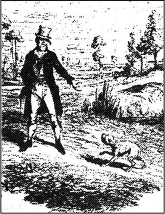
就在南希去见罗斯·梅利的那个晚上，两个从奥利弗家乡来的人正朝伦敦走来。因为他们是徒步行走，加上其中的女孩还背着一个沉重的大包，所以进度很慢。身边的年轻男子却空着两手，还时不时地转过身去朝跟在后面的女孩大声吼着：“快点，夏洛特，你这个懒东西！你再这么磨磨蹭蹭的，我可就要踢你一脚了。”
这个年轻的男人是诺厄·克莱普尔，就是他使奥利弗在索尔贝里先生家受够了折磨。他现在长高了一点，比以前更丑了点，此外没有什么大的变化。他与夏洛特厌倦了棺材店的生意，想到伦敦去开始新的生活——他们卷走了索尔贝里先生棺材店所有的钱财。
他们终于到达了伦敦，诺厄试图找一家既安静又便宜的酒店过夜。在穿过一个街道狭窄脏乱的地区时，夏洛特顺从地跟在他身后。
终于，诺厄找到了一家他认为合适的酒店。店里昏暗、肮脏，吧台前坐着几个相貌粗鲁的人。他们走进去，要了房间和晚饭。晚饭是一盘冷肉和一些啤酒，他们坐在吧台前吃了起来。啤酒一下肚，诺厄便打开了话匣子，胡吹一气：“现在我们再也不用天天和棺材打交道了，我的姑娘。从今往后我们要比偷盗索尔贝里先生干得更大。在伦敦，有的是有钱的口袋、大宅子、马车——还有银行！”
“这听起来很叫人喜欢，诺厄。可是我们怎么去干这些事呢？”夏洛特问。
“我们得结认一些懂得这一行的人，如果干这些事很来钱，我就当某个团伙的头头。”诺厄这时洋洋得意，他渴望在首都过一种作奸犯科的安逸生活。
他们谈着自己的打算，说了几分钟。这时，一个坐在看不见的拐角处的陌生人朝他们走来。这人就是费金。他同他们非常友好而热情地打着招呼，坐了下来，又马上为诺厄要了些啤酒。
“这啤酒还不错。”诺厄已经颇有醉意，他向陌生人表示了谢意。
“但是并不便宜。”费金说，“亲爱的，如果你天天喝的话，你必须去从口袋、房子、马车和银行里弄钱。”
诺厄一听这人在重复刚才自己说过的话，有点害怕。这人肯定把他们刚才说的话全都偷听去了，就连他们偷了索尔贝里先生钱的事也知道了！
“别害怕，”费金大笑着，把椅子朝近处拉了拉，“你们很幸运，只有我听见了你们的话。”
“我没拿，”诺厄赶紧说，“都是这女人干的！”
“是谁干的都没关系，亲爱的，”费金说着瞟了一眼夏洛特，“因为我也是干这一行的。还有跟我住在一起的一些人也是如此。如果你们有兴趣的话，我可以把你们介绍给干这一行的人。你们俩看上去很能干。”
夏洛特和诺厄又惊又喜。“你要我干点什么呢？”诺厄问，“一点轻活，假如可能的话。”他又说。
“暗地里监视人怎么样？”费金说，“或是去抢到商店里替母亲买东西的孩子？这些都是轻活，也是好干的活。”
诺厄大笑起来。“这听上去正是适合我的事！那么我能挣到多少钱呢？”
“你可以免费在我家住，只是把挣来的东西分给我一半就行了。”
经过进一步的商量，索尔贝里先生的钱从诺厄衣袋里又全装进了费金的衣袋，双方达成了协议。从第二天开始，诺厄和夏洛特就搬到费金家去住，并开始新职业的训练。
尽管训练和经验使南希成为一个内行的骗子，但她无法完全掩盖内心的恐惧。她知道自己是冒着极大的风险去见罗斯·梅利的。一旦费金或赛克斯察觉了这一切……但她把这些恐惧推到一边。她决心信守对罗斯·梅利许下的诺言，按照安排好的时间地点去见她。
在见过罗斯之后的第一个星期天的晚上，她正在赛克斯的房间里，这时钟敲响了11点，费金也在这里，正跟赛克斯商量着什么事。南希站了起来，穿上了大衣。赛克斯惊奇地看着她。
“南希！都晚上这个时候了，你还要去哪儿？”
“就在附近走走。”
“这是什么话？你要去什么地方？”
“我也不知道。”女孩回答说。
“那么我知道。你哪儿也甭去了。坐下。”
“我不舒服，想到外面去换换空气。”
赛克斯站了起来，锁上了房门。
“让我出去！”女孩力争道，“就一个小时——让我去一下！”
赛克斯粗暴地抓住她的胳膊。“这丫头八成是疯了！”
南希极力反抗着，赛克斯不得不将她按在椅子上。她不停地尖叫挣扎着，一直到午夜，她已泪流满面，疲惫不堪，才停止了挣扎。她走进了另一个房间，一头倒在了床上。
“她真是个怪人，”赛克斯摇着头跟费金说，“她是怎么回事，今晚上突然决定非要出去不可？我还以为，经过这些年我已经驯服她了呢。她一定是不舒服了——大概热病还没好利索。”
“一定是这么回事。”费金多虑地点着头说。
在回家的路上，费金两眼放出狡猾的光，充满了疑虑。一段时间以来，他怀疑南希大概是厌烦比尔·赛克斯的蛮横和暴力了，怀疑她可能有了代替赛克斯的新朋友。她的态度也同过去不一样了；她老是一个人往外跑，好像对这个团伙也没什么兴趣了。而且，今天晚上，又是在某一特定的时间里急于出去……他肯定自己的怀疑是对的。他开始布设一个计谋。
首先，他想要弄清南希的新朋友是谁。他可以使他也成为这个帮伙重要的新成员，让南希做他的助手。但是，其另外一个险恶的用心是，费金也有点厌烦赛克斯了。赛克斯知道的事太多了——而且许多是有关费金的致命的秘密。费金从不相信任何一个人，而他最恨、最不信任的人则是赛克斯。假如能把赛克斯……除掉，那就方便多了。
“稍加劝说，”费金想，“这姑娘没准会把赛克斯毒死。”突然，他高兴地眯起了眼睛。“对！首先，我得叫人跟踪她，弄清楚她的新情人是谁。然后，我威胁说要把这一切都告诉赛克斯。这样，她知道由于赛克斯极度地忌妒，她自己和新情人都将永远不得安生。到那时，她束手无策，只能乖乖地按照我说的去做——一旦谋杀成功，她就将永远被我掌握了！”
第二天一大早，费金叫过他们匪帮里最新的成员。诺厄干得很出色，他已经拿回来不少钱了。他发现抢小孩的钱真是一件轻松容易的工作，正为自己的成功感到得意呢。
“我另有一件工作需要你去做，”费金跟他说，“这得干得十分小心和秘密。我要你去跟踪一个女人。我要知道她去的是什么地方，跟什么人见面，如果可能的话，最好是能知道他们说了些什么。弄清了这些事，我给你一个英镑。”
诺厄贪婪地睁大了眼睛。“我干这事最拿手，她是谁？”
“一个自己人。”
“什么？这么说，你信不过她？”
“亲爱的，说得对，说得对。”费金笑了笑。
下一个星期天的晚上，刚过了11点，一个女人匆匆地穿过漆黑的街道朝伦敦桥的方向走去。雾气笼罩在河上，河对岸的楼房几乎看不见。一个男人远远地尾随着她，尽可能地藏身在黑影里。这是一个既寒冷又潮湿的夜晚，加之已是深夜11点了，街上行人稀少。
这个女人来到了桥中间，停下脚步，焦急地四处张望着。跟在她身后的男人也停了下来。圣保罗大教堂的大钟敲响了，宣布又一天的结束。钟声刚刚停止，一位灰白头发的男人和一个年轻女人从一辆马车上跳了下来，走过桥去。他们同这个女人会了面，女人带着他们沿河岸的台阶走了下去。他们站在桥身的黑影处。那男人赶紧从另一处也下了台阶，蹑手蹑脚地走到了桥身的拐角处，静静地偷听着。
南希先开口说话了。“我太害怕了，都快喘不上气来了。”
“怕什么？”布朗洛先生问，他看上去很可怜她。
“不知为什么。死啦，出血啦，这些可怕的想法整天老缠着我。不知为什么。”
“要和蔼地跟她说话，”罗斯跟布朗洛先生说，“这可怜的姑娘，她好像需要的就是这个。”
“上星期天我没能出来，”姑娘接着说，“我被强留在家里了。可今晚上他出去了，要一直到天亮才能回来。听我说，在我告诉你们任何别的话之前，我必须告诉你们，我不想让费金或是团伙里的任何一个人被警察抓起来。”
“为什么？”
“因为我不能背叛他们。他们一直忠实于我，我也得忠实于他们。”
“那么只告诉我们怎样才能找到蒙克斯，我保证你的任何一个朋友都不会受到伤害，”布朗洛先生说。
“蒙克斯也将永远不会知道你们是怎样发现他的秘密的吗？”她问。
“我们保证他不会知道的。”罗斯轻柔地说。
然后南希用极小的声音跟他们说话，躲在墙拐角处的男人几乎什么也听不见。她告诉他们蒙克斯常去喝酒的地方，以及他的长相，她最后说：“在他的喉头，靠上面的地方，有一个——”
“一个鲜红的痣？”布朗洛先生问道。
“您认识他？”南希惊讶地问。
“我想我认识他。”布朗洛先生小声地自言自语着，“肯定是他！”然后他又提高些声音跟南希说：“谢谢你跟我们说了这些。可是，现在你怎么能再回到这种人身旁去呢？今晚干脆跟我们走吧。假如你要求我们这样做，我们会把你永远藏起来，他们任何人再也找不到你。”
这姑娘摇着头。“尽管他们很坏，可我已跟他拴在一起了。我已经走得太远了，已经无法再改变我的生活了。”她惊恐不安地回头看了看，“我又有那种可怕的恐怖感了——我似乎看到了流血和死亡。我得赶紧回去了。”
布朗洛先生和罗斯无法劝她改变主意，他们伤心地转身走了。当他们离开后，南希哭倒在地，涕泪横流。同时，诺厄·克莱普尔对听到的事十分惊奇，他轻手轻脚地走上了台阶，以最快的速度朝费金家跑去。
几小时之后，离天亮大约还有两小时，诺厄在费金家睡着了，而费金却默默地坐在已经灭了的炉火旁，盯着身旁桌上的蜡烛的火苗。他的一张满是皱纹、毫无血色的脸和一双直勾勾、布满了血丝的眼睛，让他看上去活像刚从地狱里爬出的魔鬼。仇恨像毒液一样浸透了他的每一个想法。这姑娘竟敢向外人泄露他们的秘密，她使他除掉赛克斯的计划破产了——他恨死她了。他不相信她许下的不会出卖他的诺言了，他担心自己现在会被抓起来，送上绞刑架。
天快亮时，赛克斯走了进来，拿着一个包，里面装着他一晚上工作的收获。费金接过赛克斯给他的东西，盯着这强盗看了半天，没说话。
“你为什么用这种眼神看着我？”赛克斯看着这老头子奇怪的神色，不安地问。
费金举起手来，但感情过分激动，仍说不出话来。
“你说句话，行吗？”赛克斯大声吼着，用一只大手抓住了费金的衣领，又愤怒又恐惧地摇晃着他。“张开你的嘴，把你要说的话说出来！”
费金终于能说出话了。“比尔，假如我们团伙当中的一个人晚上出去把我们的事全告诉了别人，我们该怎么办？你会怎么收拾他？”
“我会把他的脑壳敲个粉碎。”这个盗贼恶狠狠地咒骂着。
“假如这个人是我，知道我们这里的事最多，能使我们一个不落地都进监狱，都被绞死，那又怎么样呢？”费金小声地说，眼睛里闪着憎恨的目光。
“我会在大庭广众之下打出你的脑浆来。就是在法庭上，我也会赤手空拳地跑过来杀了你。”赛克斯愤怒得咬牙切齿地说，“我才不管他是谁呢，我就是要这么干。”
费金叫醒了诺厄。“把你刚才跟我说的话再跟比尔说一遍，说你都看见了什么，她又干了什么。都跟他说！”
诺厄揉着惺忪的睡眼，把事情的全部经过又跟赛克斯说了一遍。由于感情激动，赛克斯的脸色变得惨白，听完后他恼怒万分地咒骂着，奔出了房间，冲下了楼。
“比尔！”费金在他身后喊道，“你不会……太粗暴了吧？”
赛克斯没回答，而是拉开房门，跑到了寂静无声的街道上。他头也不回，目不旁视，直瞪瞪地向前看着，疯狂地铁定了一条心。他飞快地跑着，眼睛里冒着火，牙关死死地咬在一起，一口气直跑进了家门。他跑上楼，进了自己的房间，反锁上房门，又拉过来一张桌子顶在了门上，然后才叫醒南希。
“比尔！”她看见他高兴地说。可她发现他的神色不对劲，顿时脸色变得煞白。“出什么事了？”她警觉地问。
“你知道出什么事了。”赛克斯拿出枪，但即便是在这种丧心病狂的时候，他也知道枪声会被人听见的。所以他抡起枪狠狠地朝她的脸上横打了两下，她发出一声痛苦与恐惧的低叫，倒在了地上，从额头的伤口里流出的鲜血糊住了她的眼睛。凶手摇摇晃晃地走到屋角，抓起了一根大木棍将她打倒了。
13 The end of the gang
13
The end of the gang
The sun burst upon the crowded city in all its brightness. It lit up every corner of London, the great houses of the rich, and the miserable homes of the poor. It shone everywhere, even into the room where the murdered woman lay. The horror of that scene was even more dreadful in the clear morning light.
Sikes sat there, unable to move, looking at the body. He had thrown the blood-covered stick into the fire, then washed himself and his clothes. He had cut out the bits of his clothes that were stained and burnt them too, but there were still bloodstains all over the floor. Even the dog's feet were bloody.
Finally, he forced himself to leave the room, pulling the dog out with him and locking the door behind him. He walked rapidly north, towards Highgate, then on to Hampstead. On the open land of Hampstead Heath, away from people and houses, he found a place in a field where he could sleep without being disturbed.
But before long he was up again and running. This time he ran back towards London for a while. Then he turned and went north again, sometimes walking, sometimes running, with no clear purpose in his mind. Eventually, he felt hungry, and changed direction towards Hendon, a quiet place away from the crowds, where he could buy food. But even the children and chickens there seemed to look at him with suspicion. So he turned back towards Hampstead Heath again, without having eaten, uncertain where to go.
At last he turned north again, his dog still running at his heels, and set off to a village just outside London. He stopped at a small, quiet pub and bought a meal, then went on again. It was now dark and as he continued walking, he felt as if Nancy were following him, her shadow on the road, her last low cry in the wind. If he stopped, the ghostly figure did the same. If he ran, it ran too, moving stiffly, like a corpse. Sometimes he turned, determined to drive the ghost away, but his blood ran cold with terror. Every time he turned, the ghost turned too, and was still behind him.
Finally, he found another field where he could hide. He lay down, unable to sleep, his mind filled with visions of the dead girl. Her wide, dead eyes stared at him, watching him through a curtain of blood.
Suddenly he heard shouting in the distance. He jumped to his feet and saw that the sky seemed on fire. Sheets of flame shot into the air, driving clouds of smoke in his direction. He heard an alarm bell, and more shouts of 'Fire! ' Running with his dog across the fields, he joined the crowds of men and women fighting the fire. He could forget his own terror in this new danger, and he worked all night with the crowd, shouting, running and working together to stop the flames destroying more buildings.
In the morning the mad excitement was over, and the dreadful memory of his crime returned — more terrifying than ever. In desperation, he decided to go back to London.
'At least there'll be somebody I can speak to,' he thought to himself. 'And it's a better hiding-place than out here in the country. I'll hide there for a week, get some money out of Fagin, then escape to France.'
Suddenly he remembered the dog — people would be looking for his dog as well as himself. He decided to drown the animal. But the dog smelt the man's fear, and turned and ran away from him faster than it had ever run in its life. 'You have a choice, Mr Monks,' said Mr Brownlow.
'You have been kidnapped and brought here to my house. You can either tell me what I want to know, or I'll have you arrested, instantly, for fraud and robbery. It's your choice. And you must decide now. At once.'
Monks hesitated and looked at the old man, but Mr Brownlow's expression was so serious and determined that the younger man realized it was pointless to protest. 'I didn't expect this treatment from my father's oldest friend,' said Monks angrily, sitting down with a frown on his face.
'Yes, I was your father's oldest friend,' said Mr Brownlow. 'And I know all about you — how your father, while still a boy, was forced by his family into an unhappy marriage with an older woman, and how you were the result of that marriage. I also know that your parents separated, hating each other by the end.'
'Well — what's so important about that?'
'When they'd been separated for ten years,' said Mr Brownlow, 'your father met another family. There were two daughters, one nineteen years old and the other only two or three. Your father became engaged to the older daughter. At this point one of his rich relations died and left him a lot of money in his will. Your father had to travel to Italy to receive his inheritance, and while there, he became ill and died. Your mother, who was living with you in Paris, immediately rushed to Italy when she heard the news. As your father had made no will of his own, all the relation's money came to you and her.'
Monks listened with close attention, biting his lip and staring at the floor.
'Before your father went to receive that money, he came to see me,' continued Mr Brownlow slowly, his eyes fixed on Monks' face.
'I never heard that before,' said Monks, looking up suddenly, a suspicious expression on his face.
'He left me a picture of the poor girl he wanted to marry. He talked wildly about shame and guilt, and how he would give part of the money he'd inherited to his wife and to you, and use the rest to escape from England with the girl he loved. He refused to tell me any more details.'
Monks breathed more easily, and even smiled.
'But,' said Mr Brownlow, pulling his chair nearer to the other man, 'by chance I was able to rescue your brother Oliver from a life of misery and —'
'What!' cried Monks.
Mr Brownlow continued without a pause. 'And when he was recovering from his sickness here in my house, I noticed how similar he looked to the girl's face in the picture. But he was taken away before I could discover his history — as you know very well.'
'You can't prove anything!' said Monks.
'I can. I heard that you were in the West Indies. I went there to try and find you to see if you knew anything about Oliver, but you'd already left. I returned to London, and was unable to find you until two hours ago.'
'And now what? You can't prove that Oliver's my brother.' Monks smiled unpleasantly.
'I couldn't before,' said Mr Brownlow, standing up. 'But now I can. There was a will, but your mother destroyed it. This will mentioned a child that would be born later; this was Oliver, the child you met later by accident. You noticed his resemblance to your father and you became suspicious. You then went back to his birthplace, found proof of his birth and the fact that he's your half-brother, and destroyed that proof.'
Monks sat in silence, his eyes filled with fear.
'Yes,' continued Mr Brownlow fiercely, 'shadows on the wall have caught your whispers with Fagin, and brought them to my ear. For the sake of that innocent child, whom you wanted to destroy. And now murder had been done, and you are as guilty of that as if you had struck the blow yourself!'
'No, no,' said Monks quickly. 'I knew nothing of that. Nothing at all.' He was silent for a while, realizing how much was known about him. Hatred and fear fought inside him, but he was a coward at heart. At last, seeing no escape, he raised his head. 'I will admit everything — in front of witnesses, if necessary.'
Mr Brownlow nodded coldly. 'I will prepare a document for you to sign. You must give Oliver what is really his, and then you can go where you please.'
At that moment Dr Losberne rushed into the room. 'The murderer will be taken tonight! His dog's been found.'
'And Fagin?' asked Mr Brownlow.
'They're sure of him. They may have him already.'
Mr Brownlow turned back to Monks. 'Have you made up your mind?'
'Yes,' replied Monks. 'And you promise — it'll remain a secret? No police, or charges of fraud against me?'
'Yes,' said Mr Brownlow. 'You have my promise. For now, you must remain here, locked in this room. I will come for you tomorrow evening and take you to sign a confession in front of witnesses.'
Mr Brownlow then left the room with the doctor, and they eagerly discussed the news of the hunt for the criminals. 'My blood boils with anger,' said Mr Brownlow. 'This poor murdered girl must be revenged. You stay here and guard Monks. I'll go out and get the latest news.'
The two men parted, each in a fever of excitement.
Down by the river Thames was a district called Rotherhithe, one of the dirtiest and roughest places in London. The houses next to the river had no owners; they were broken down and ruined, but could be defended against attack. In an upper room of one of these houses, were three members of Fagin's gang.
'When was Fagin taken, then?' asked the man called Toby.
'Two o'clock this afternoon. Charley and I escaped up the chimney, but Noah was caught. Bet went to see Nancy and when she saw the body, she started screaming and wouldn't stop. She's been taken to hospital.'
'What's happened to Charley Bates?'
'He'll come here when it's dark. It's too dangerous now.'
'We're in trouble,' said Toby. 'Fagin's going to hang — that's certain.'
'You should have seen him when he was caught,' said another robber. 'The police carried him through the crowd while all the people jumped at him, screaming and trying to attack him.'
Suddenly Sikes' dog ran into the room. All the robbers rushed out immediately to look for Sikes, but there was no sign of him. They returned to the upstairs room.
'I hope he's not coming here,' said Toby.
'The dog's come a long way,' said another man. 'Covered in mud, and tired out.'
They sat there in silence, wondering where Sikes was. It was already dark when they heard a sudden, hurried knock at the door downstairs.
Toby went to the window to look down, then pulled his head back in, his face pale with fear. There was no need to tell the others who it was.
'We must let him in,' said Toby, although none of them wanted to see him. Toby went down to the door and returned, followed by Sikes. White-faced, with a three-day-old beard, hollow cheeks and staring eyes, Sikes looked like a ghost. No one said a word.
'Nothing to say to me?' Sikes asked.
The only answer was a low shout of many voices from outside in the distance, coming closer. Lights appeared. Looking out, Sikes saw a stream of people crossing the bridge towards them. Then there was a loud knocking on the door and more shouts from the crowd.
'The doors are made of metal and they're locked and chained,' said Toby. The three robbers watched Sikes nervously, as if he were a wild animal.
'Bring a ladder!' shouted some of the crowd below.
'Give me a rope, quick,' Sikes said to the others. 'I'll go the other way, climb down the back and escape over the river. Get me a rope — now! Or I'll do three more murders!'
A minute later, Sikes appeared on the roof and the shouts from the crowd below swelled to a great roar. Then the front door was smashed down and people streamed into the house. Sikes quickly tied the rope around the chimney, then began to tie the other end around himself, ready to lower himself to the ground behind the house. But just as he put the rope over his head, he screamed in terror and threw his arms above his head. He staggered back, slipped and fell over the edge of the roof. As he fell, the rope tightened around his neck with a horrible jerk. In a second the murderer was dead, and there he hung, his body swinging gently from side to side. The dog, which had followed its master onto the roof, jumped down towards the lifeless body, missed, and fell dead on the stones below.
scene n. view; sth seen. 景象。
disturb v. break the quiet, calm, peace or order of. 扰乱。
stick n. branch cut to a convenient length, piece of cane cut, shaped, etc for a special purpose. 棍；棒。
stiffly adv. rigidly. 僵硬地。
sheet n. wide expanse (of water, ice, snow, flame, etc). 一片。
destroy v. break to pieces; make useless. 摧毁。
drive v. cause to move in some direction by using cries, blows, threats or other means. 驱；逐。
drown v. cause to die in water because unable to breathe. 溺死。
fraud n. criminal deception. 欺诈。
frown n. drawing together of the eyebrows. 皱眉头。
pointless adj. with no sense, aim or purpose. 无意义的。
separate v. divide. 分开。
be engaged having agreed to marry. 已订婚。
relation n. relative. 亲戚。
bite one's lips try to conceal one's anger or annoyance. 咬唇以图掩饰愤怒或厌恶。
accident n. sth that happens without a cause that can be seen at once, usually sth unfortunate and undesirable. 意外事件。
resemblance n. likeness. 相似。
will n. testament. 遗嘱。
coward n. person unable to control his fear. 胆小的人。
document n. sth written or printed, to be used as a record or in evidence. 文件。
realize v. be fully conscious of. 完全认知。
boil v. reach the temperature at which change to gas occurs. 沸腾。
revenge v. do sth to get satisfaction for (an offence, etc to oneself or another). 报仇；报复。
chimney n. structure through which smoke from a fire is carried away through the wall or roof of a building. 烟囱。
hollow adj. sunken 凹陷的。
beard n. hair of the lower part of the face. 胡须。
rush v. go or come, do sth, with violence or speed. （使）猛烈或匆匆地去，来，做某事。
ladder n. two lengths of wood, metal or rope, with crosspieces, used in climbing up and down walls, a ship's side, etc. 梯。
swell v. become greater in volume. 增强。
jerk n. sudden push, pull, twist, etc. 急拉。
盗窃团伙的末日
13 盗窃团伙的末日
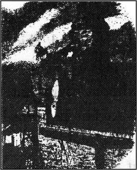
喷薄而出的太阳悬挂在这座拥挤的城市的上空，光芒四射，它照亮了伦敦的每一个角落，照亮了有钱人家的宅院，也照亮了穷人家的陋室。它把每一处都照亮了，也照进了被杀害了的女人横尸的房间。可怕的场面在清晰的晨光下显得更加令人毛骨悚然。
赛克斯坐在那里看着眼前的死尸，动弹不得。他已把沾满了血迹的木棍丢进了炉火里，然后擦洗了自己，洗净了衣服。他将衣服上溅上血的部分也撕下来烧掉了，即便是这样，地上还有一片片血迹，就连狗爪子上也满是血污。
最后，他强迫自己离开了这屋子，拉出了狗，将房门上了锁。他快速往北面走，朝着海格特墓地，然后又走向汉普斯泰德，在汉普斯泰德荒原空阔的野地里，远离人群和房屋的地方，他找到了一个能够不受惊扰睡一觉的地方。
可没多一会儿他就起来了，拔腿就跑。这一次他先是回头向伦敦方向跑去，没跑出多远又折回来向北，跑跑停停，心里没有一个明确的目的地。最后他感觉到肚子饿了，又掉转方向朝亨顿走去。这是个人不多的僻静的小地方，他可以在这儿买点东西吃。可是，连这里的孩子和鸡都好像在怀疑地看着他，所以他什么也没吃，又转身朝汉普斯泰德荒原走去，心里还是不知该往哪儿去。
最终他又朝北部，朝伦敦边上的一个村子走去，他的那条狗还一直跟在他的脚后。他到一个安静的小酒馆里买了点东西吃，紧接着又往前走。这时天已渐渐黑了下来，他继续走着，总觉得南希好像跟在他的身后，她的影子就在路上，她最后那一声低叫随风响着。他若停住脚步，这个鬼影也就停了下来。他若快走几步，这个影子也跟着一路小跑，像死尸一样僵硬地移动着。他有时转过身去想赶走这个影子，但他竟然恐惧得连浑身的血液都凝固住了。他每一次转身，这个鬼魂也跟着他一起转，老是在他的身后。
最后，他终于找到了另一片野地藏身，躺了下去，可是睡不着，满脑子都是这个死了的女孩的形象。她那死气沉沉的大眼睛盯着他，在一道血帘子后面看着他。
他突然听见远处的叫喊声，便一跃而起，看见天空好像着了火。一片片火舌喷向空中，翻滚的浓烟朝他这边刮来。他听见了报警的铃声，还有更多的人喊叫着：“火！”他带着他的狗跑过了这片野地，也加入到了这群救火的男男女女中。在眼前的新危险中，他可以忘了自己的恐惧。整整一个晚上，他都和这群人一起叫喊着，跑着，一起奋力地灭火，以免大火毁坏更多的房屋。
天亮了，这种疯狂的激情消失了，他犯下的可怖罪行的回忆却回来了——比以前更加可怕。在绝望中，他决定还是回伦敦去。
“起码，在那里我还有能说说话的人。”他心想，“那儿是个比乡间更好的藏身的地方。我要在那儿躲一个星期，想法从费金那儿弄点钱来，然后再逃到法国去。”
他突然想到了他的狗——人们现在不但在找他，而且可能在找他的狗。他决定把这畜生溺死。可这狗察觉出了主人的惧怕心理，转过身以它平生最快的速度跑开了。
“蒙克斯先生，你面临着一个选择。”布朗洛先生说，“你是被劫持到我家里来的，你得告诉我我要知道的事，否则我会立刻让警方拘捕你，罪名是诈骗和盗窃。你可以作出选择，但必须马上决定，立刻。”
蒙克斯犹豫了一下，看着这老人，但布朗洛先生的神色非常严肃和坚定，年轻人意识到争辩是没有用的。“我没料到我父亲交情最深的老朋友会这样对待我。”蒙克斯愤怒地说着，紧皱眉头坐了下来。
“不错，我曾是你父亲交情最深的老朋友。”布朗洛先生说，“你的什么事我都知道——当你的父亲还是个小伙子时，他是怎样在家庭的逼迫下与一个比他大的女人结了婚，造成了这桩不幸的婚姻；后来你又是怎样成了这一婚姻的产物。另外我也知道你父母亲后来又分居了，那时他们已到了互相憎恨的地步。”
“那么——这有什么要紧的呢？”
“他们分居十年以后，”布朗洛先生说，“你的父亲又遇到了另一家人，这家有两个女儿，一个当时十九岁，而另一个只有两三岁。你父亲和这家的大女儿订了婚。就在这当口，他的一个有钱的亲戚死了，在遗嘱上给他留下了一大笔钱财。你父亲必须到意大利去接受这笔遗产。可他却在那儿患了病，死在了那个地方。你的母亲和你当时住在巴黎，她得知了你父亲的死讯，匆匆赶到了意大利。由于他没有立遗嘱，他亲戚留给他的那一份钱就都归你和你母亲所有了。”
蒙克斯聚精会神地听着，咬着嘴唇，眼睛盯着地板。
“你父亲去接受那笔钱之前，来看过我。”布朗洛先生盯着蒙克斯的脸，继续慢慢地说。
“他给我留下了一张他要娶的那个可怜女孩的画像。他疯了似地说了许多感到耻辱和内疚的话，还说要把继承来的钱一部分给他的妻子和你，用其余的钱与他心爱的姑娘一起逃出英国。除了这些，他不愿跟我说得再详细了。”
蒙克斯稍微轻松些地呼吸着，脸上甚至现出了笑容。
“可是，”布朗洛先生说着，把椅子朝对方身边拉了拉。“碰巧的是，我又从悲惨的生活中搭救了你的弟弟奥利弗——”
“什么？”蒙克斯叫道。
布朗洛先生停也不停，继续说：“当他在我家里养病时，我发现他与像上的女人长得是那样相似。可没等我弄清他的历史，他又被弄走了——这些你都很清楚。”
“你不能证实任何事情！”蒙克斯说。
“我当然能。我听说你在西印度群岛，就到那里试图找到你，看你是否知道有关奥利弗的事，可那时你已离开了。我又回到了伦敦，直到两小时之前才终于找到你。”
“可现在又怎么样？你不能证实奥利弗就是我的弟弟。”蒙克斯不怀好意地咧嘴笑了笑。
“在以前我不能，”布朗洛先生站了起来，说，“可现在我能。本来有一份遗嘱，但你的母亲毁了它。这份遗嘱里提到了一个就要出生的孩子；这就是奥利弗，也就是你后来偶然碰到的那个孩子。你发现他长得像你的父亲，起了疑心。后来你去了他的出生地，找到了能证实他是你异母弟弟的证据，然后又销毁了这一证据。”
蒙克斯一声不吭地坐在那里，眼睛里充满了惊恐。
“是的，”布朗洛先生继续狠狠地说道，“墙上的影子窃听到了你和费金的私语，并把你们的谈话内容带给了我。为了你想毁掉的这个无辜的孩子，现在已经发生谋杀案了，你的罪过就如同你亲手杀了人一样严重！”
“不，不，”蒙克斯赶忙说道，“我对此事一无所知，什么也不知道。”他沉默了一会儿，意识到别人已对他了解得太多了。在他内心深处，仇恨和恐惧针锋相对地斗争着，但实际上他是个胆小鬼。最后，他看到无法逃脱，便抬起头，说：“我愿承认所有的一切——如果有必要的话，面对证人承认我的所作所为。”
布朗洛先生冷冷地点了点头。“我会准备一份文件，让你签名。你必须给奥利弗本该属于他的一切，完事后你随便去哪儿都行。”
正在这时，罗斯伯恩医生冲进房来，说：“今天晚上杀人犯要抓到了！已经发现了他的狗。”
“费金呢？”布朗洛先生问道。
“他们满有把握抓到他。说不定已经抓到了。”
布朗洛先生转身对蒙克斯说：“你想好了吗？”
“想好了。”蒙克斯答道，“你保证——不把这事公诸于众吗？保证警察不来麻烦我？没人控诉我犯了欺诈罪？”
“是的，”布朗洛先生说，“我保证。现在你必须待在这儿，锁在这间屋里。明天晚上我来找你，带你去当着证人的面签个自白书。”
布朗洛先生说完便和医生离开了房间，他们急切地讨论着追捕罪犯的事。“我真是太气愤了，血液都沸腾了，”布朗洛先生说，“我们一定要为这个被谋杀的可怜姑娘报仇。你在这儿看着蒙克斯，我出去探探消息。”
两人分手了，都非常兴奋、狂热。
泰晤士河岸边有个叫做罗瑟海斯的地区，这是伦敦最肮脏、治安最差的地区之一。河边的房子都没有主人，已破败不堪，近似废墟，但仍能用来据守顽抗。费金匪帮的三个成员就聚集在这里的一幢房子楼上的屋里。
“费金是什么时候被抓住的？”名叫托比的男人问道。
“今天下午两点钟。查理和我是钻烟囱逃走的，但诺厄被抓获了。蓓丝去看南希，看见尸体后，高声尖叫不止。人们将她送进了医院。”
“查理·贝茨怎么样了？”
“天黑后他会来这儿。现在太危险了。”
“我们遇到麻烦了，”托比说，“费金要被处绞刑，这是肯定的。”
“你该看到他被捉时的情况。”另一名强盗说，“警察带他从人群中穿过时，所有的人都冲向他，大叫大嚷，要打他。”
突然，赛克斯的狗跑进了屋里。所有的强盗都立即飞跑出去找赛克斯，但外面没有他的踪迹。他们回到楼上的房间里。
托比说：“我希望他别来这儿。”
另一个男人说：“这狗走了很长一段路，全身是泥，已疲惫不堪了。”
他们默默地坐在那儿，猜想着赛克斯会到哪儿去了。当他们突然听到楼下一阵急促的敲门声时，天已经黑了。
托比走到窗口向下看了看，缩回头来，脸吓得煞白。不用说，其余的人也知道楼下是谁了。
“我们得让他进来。”托比说，但其实谁也不想见他。托比下楼开门，回来时后面跟着赛克斯。赛克斯脸色惨白，三天未刮胡子，两腮深陷，两眼发直，活像个幽灵。屋里没人吭声。
“也不跟我说点什么吗？”赛克斯问。
仅有的回答就是门外远处传来的许多人低沉的喊叫声，而且这声音越来越近。接着又出现了灯光。赛克斯向外张望，看到一股人流正过桥向他们走来。然后是咚咚的敲门声和人群大喊大叫的声音。
“这些门是金属的，而且锁得很结实，用链子拴住了。”托比说。三个强盗紧张地看着赛克斯，好像他是只野兽。
“拿个梯子来！”底下的人群中有人喊道。
“给我根绳子，快点，”赛克斯对其余的人说，“我走另一条路，从后面爬下去，过河逃跑。给我绳子——快点！不然，我会再干掉三个人！”
一分钟以后，赛克斯出现在屋顶上，下面人群的喊声越来越高，简直成了吼叫声。然后前门被撞垮，人们拥进房子。赛克斯迅速把绳子的一头系在烟囱上，开始把另一头往自己身上系，准备将自己顺到房后的地面上。但正当他把绳圈往头上套时，他惊恐地叫起来，双手向上猛伸。他趔趄着往后一退，脚下一滑，从屋顶的边缘掉了下去。他往下掉时，绳子死死地套住了他的脖子，猛地一拉。刹那间，这杀人犯死了，挂在那儿，尸体轻轻地左右摇晃。那条跟着主人爬上屋顶的狗，朝着断了气的尸体跳过去，没抓住，掉在下面的石头上摔死了。
14 The end of the mystery
14
The end of the mystery
The next day Oliver travelled with Mr Brownlow, Dr Losberne, Mrs Maylie and Rose back to his birthplace. He had been told a little of his history, and knew that there would be more explanations at the end of this journey. He was anxious and uncertain, wondering what he would hear.
But towards the end of the journey, he began to recognize familiar places, and in great excitement pointed them out to Rose. There was the path he had taken when he had run away. There, across the fields, was the 'baby farm'. Then, as they drove into the town, he saw the house of Mr Sowerberry the undertaker, and the workhouse that had been his prison.
They stopped at the biggest hotel in the town, and went in to their rooms. During dinner Mr Brownlow stayed in a separate room, and the older members of the group went in and out with serious faces. Mrs Maylie came back with her eyes red from crying. All this made Rose and Oliver, who had not been told any new secrets, very nervous and uncomfortable.
At nine o'clock Dr Losberne and Mr Brownlow brought Monks into the room. Oliver was very surprised; this was the same man he had bumped into once outside a pub, and seen another time with Fagin, looking in at him through the window of the country cottage. Oliver was told that Monks was his half-brother, and the boy stared at him in shock and amazement. Monks looked back at him with hatred.
'We have the whole story here in these papers,' said Mr Brownlow, putting them on the table. 'All we need now is for you to sign them, Monks. And to tell Oliver what happened.'
Monks started hesitantly. 'My father had arrived in Italy to collect the money he had inherited, when suddenly he fell ill. When he died, we found two papers in his desk. One was a letter to his girl; the other was a will.'
'What was the letter?' asked Mr Brownlow.
'It was written when he was ill, telling the girl how ashamed he was that she was pregnant. He asked her not to remember him as a bad man but as someone who had made a mistake. He reminded her of the day he'd given her the locket and ring.'
Oliver's tears fell fast as he listened to the story of his father.
'And what about the will?' asked Mr Brownlow.
Monks was silent.
'The will,' continued Mr Brownlow, speaking for him, 'was in the same spirit as the letter. He talked of the misery of his marriage to his wife, and the evil character of you, Monks, his only son, who had been brought up by your mother to hate him. He left you and your mother an annual income of ￡ 800. The rest of his property he left to his girl Agnes and to their child, if it were born alive, and if it showed itself to be of a good, kind character. The money would only go to you, Monks, as the older son, if the younger turned out to be as evil as you.'
'My mother,' said Monks, 'burnt this will, and never sent the letter. The girl Agnes left her home in secret, so that her pregnancy would not bring shame on her family. I swore to my mother, when she was dying, that if I ever found my half-brother, I would do him all the harm I could. He would feel my hatred like a whip on his back. I paid Fagin to trap Oliver into a life of crime. But then he escaped, and that stupid, interfering girl Nancy talked to you. If I'd had the chance, I would have finished what I'd begun.' Monks stared at Oliver, and his lips moved in a silent curse.
'And the locket and ring?' asked Mr Brownlow.
'I bought them from Mr and Mrs Bumble, who had stolen them from the nurse, who had stolen them from Agnes, the dead girl. I've already told you how I threw them into the river.'
Mr Brownlow turned to Rose. 'I have one more thing to explain,' he said to the girl.
'I don't know if I have the strength to hear it now,' she murmured, 'having heard so much already.'
Mr Brownlow put his hand under her arm. 'You have a great deal of courage, dear child,' he said kindly. He turned to Monks. 'Do you know this young lady, sir?'
'Yes.'
'I don't know you,' said Rose faintly.
'The father of poor Agnes had two daughters,' said Mr Brownlow. 'What happened to the other one, who was only a young child at the time?'
'When Agnes disappeared,' replied Monks, 'her father changed his name and moved to a lonely place in Wales, where no one would know about the family shame. He died very soon afterwards, and this young daughter was taken in by some poor people. My mother hated Agnes and everybody connected with her. She hunted for this young sister, and made sure that her life would be unhappy. She told the poor people who had taken her in that the girl was illegitimate, and that she came from a bad family with an evil reputation. So the child led a life of miserable poverty — until Mrs Maylie saw her by chance, pitied her, and took her home.'
'And do you see this young sister now?' asked Mr Brownlow.
'Yes. Standing by your side.'
Rose could hardly speak. 'So... Oliver is my nephew?'
'I can never call you aunt,' cried Oliver. 'You'll always be my own dear sister!'
They ran into each other's arms, both of them crying in their happiness. A father, sister and mother had been lost and gained, and it was too much for one evening. They stood for a long time in silence, and the others left them alone.
The court was full of faces; from every corner, all eyes were on one man — Fagin. In front of him, behind, above, below — he seemed surrounded by staring eyes. Not one of the faces showed any sympathy towards him; all were determined that he should hang. At last, there was a cry of 'Silence!', and everyone looked towards the door. The jury returned, and passed close to Fagin. He could tell nothing from their faces; they could have been made of stone. Then there was complete stillness — not a whisper, not a breath... Guilty. The whole court rang with a great shout, echoing through all the rooms as the crowd ran out of the building to tell all the people waiting outside. The news was that he would die on Monday.
Fagin thought of nothing but death that night. He began to remember all the people he had ever known who had been hung. He could hardly count them. They might have sat in the same prison cell as he was now. He thought about death by hanging — the rope, the cloth bag over the head, the sudden change from strong men to bundles of clothes, hanging at the end of a rope.
As his last night came, despair seized Fagin's evil soul. He could not sit still, and hurried up and down his small cell, gasping with terror, his eyes flashing with hate and anger. Then he lay trembling on his stone bed and listened to the clock striking the hours. Where would he be when those hours came round again?
In the middle of that Sunday night, Mr Brownlow and Oliver were allowed to enter the prison. Several strong doors were unlocked, and eventually they entered Fagin's cell. The old robber was sitting on the bed, whispering to himself, his face more like a trapped animal's than a human's.
'You have some papers, Fagin,' said Mr Brownlow quietly, 'which were given to you by Monks to look after.'
'It's a lie!' replied Fagin, not looking at him. 'I haven't got any.'
'For the love of God,' said Mr Brownlow, very seriously, 'don't lie to us now, on the night before your death. You know that Sikes is dead and Monks has confessed. Where are the papers?'
'I'll tell you, Oliver,' said Fagin. 'Come here.' He whispered to him. 'They're in a bag up the chimney in the front room at the top of the house. But I want to talk to you, my dear.'
'Yes,' said Oliver. 'Will you pray with me?'
'Outside, outside,' said Fagin, pushing the boy in front of him towards the door. 'Say I've gone to sleep — they'll believe you. You can take me out with you when you go.' The old man's eyes shone with a mad light.
'It's no good,' said Mr Brownlow, taking Oliver's hand. 'He's gone too far, and we can never reach him now.'
The cell door opened, and as the visitors left, Fagin started struggling and fighting with his guards, screaming so loudly that the prison walls rang with the sound.
They left the prison building in the grey light of dawn. Outside in the street, huge crowds were already gathering, joking and laughing, and pushing to get the best places near the great black platform, where the rope hung ready for its morning's work.
Less than three months later, Rose married Harry Maylie. For her sake, Harry had abandoned his political ambitions, and had become a simple man of the church. There was no longer any mystery about Rose's birth, but even if there had been, Harry would not have cared. They lived next to the church in a peaceful village. Mrs Maylie went to live with them, and spent the rest of her days in quiet contentment.
Mr Brownlow adopted Oliver as his son. They moved to a house in the same quiet village, and were just as happy. Dr Losberne discovered suddenly that the air in Chertsey did not suit him. In less than three months he, too, had moved — to a cottage just outside the village, where he took up gardening and fishing with great energy and enthusiasm.
Mr Brownlow suggested that half the remaining money from the will should be given to Monks and the other half to Oliver, although by law it should all have gone to Oliver alone. Oliver was glad to accept the suggestion. Monks went off with his money to the other side of the world, where he spent it quickly and was soon in prison for another act of fraud. In prison he became ill and died. The remaining members of Fagin's gang died in similar ways in other distant countries, all except Charley Bates, who turned his back on his past life of crime and lived honestly, as a farmer.
Noah Claypole was given a free pardon for telling the police about Fagin. He soon became employed as an informer for the police, spying on people and telling the police about anyone who had broken the law. Mr and Mrs Bumble lost their jobs and became poorer and poorer, eventually living in poverty in the same workhouse that they had once managed.
In that quiet country village, the years passed peacefully. Mr Brownlow filled the mind of his adopted son with knowledge, and as he watched the boy grow up, he was reminded more and more of his old friend, Oliver's father. The two orphans, Rose and Oliver, led lives that were truly happy. The hardships that they had once suffered had left no bitterness in their gentle souls, and all their lives they showed the mercy and kindness to others that God himself shows to all things that breathe.
birthplace n. house or district in which one was born. 出生地。
path n. way track made (across fields, through woods, etc) by or for people walking. 小路。
familiar adj. having a good knowledge of. 熟悉。
cottage n. small house, especially in the country. 茅舍。
pregnant adj. having in the uterus offspring in a stage of development before birth. 怀孕的。
annual adj. coming or happening every year. 一年一次的。
income n. money received during a given period. 收入。
shame n. distressed feeling, loss of self-respect, caused by wrong, dishonourable behaviour. 羞耻。
trap v. capture by a trick. 使落入圈套。
hunt for search tor; try to find. 寻找；寻求。
reputation n. the general opinion about the character, qualities, etc of sb. 名声；名誉。
nephew n. son of one's brother or sister. 侄儿；外甥。
jury n. body of persons who swear to give a decision on issues of fact in a case in a court of justice. 陪审团。
echo v. repeat the words, etc of another. 重复。
soul n. non-material part of a person, believed to exist for ever. 灵魂。
enter v. come or go into. 进入。
cell n. small room for one person (especially in a prison or a monastery). 小囚房。
look after take care of. 照看。
guard n. man or group of men in charge of a prison. 监狱之看守。
platform n. flat surface built at a higher level. 平台。
adopt v. take sb into one's family as a relation, especially as a son or daughter, with legal guardianship. 收养（某人）为养子或养女。
pardon n. forgiveness. 宽恕。
mercy n. holding oneself back from punishing, or from causing suffering to, sb whom one has the right or power to punish. 仁慈；怜悯。
揭开秘密
14 揭开秘密
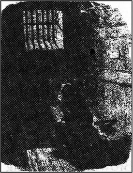
第二天，奥利弗与布朗洛先生、罗斯伯恩医生、梅利夫人以及罗斯一起回到他的出生地。在途中，他已得知了有关他过去的一些事情，知道在旅行结束时会听到更多的解释。他焦急不安，心中无主，揣摩着他还将会听到些什么事情。
路快走完了，他逐渐地认出了那些熟悉的地方，十分激动地把这些地方指给罗斯看。那儿是他当初逃离时走过的小道。田野的另一端是育婴堂。他们驾车进镇子时，他看到了棺材店老板索尔贝里先生的房子，以及他曾在其中过着囚徒生活的济贫院。
他们在镇上最大的一座旅馆前停了下来，进了各自的房间。晚餐时，布朗洛先生待在一个单独的房间里，其他年长的人进出这房间时都板着严肃的面孔。梅利夫人出来时两眼哭得通红。罗斯和奥利弗对这一切感到非常紧张和不安，因为他们未曾被告知任何新的秘密情况。
9点钟时，罗斯伯恩医生和布朗洛先生把蒙克斯带了进来。奥利弗感到很惊讶，这正是同奥利弗在酒馆外撞个满怀的那个人，也正是曾经和费金一起透过村舍的窗户窥视奥利弗的那个人。大家告诉奥利弗，蒙克斯是他的异母哥哥。奥利弗用讶异和震惊的目光看着蒙克斯，蒙克斯也回看着他，眼里充满了仇恨。
布朗洛先生把一些文件放在桌子上说：“所有的事情都写在这里！我们只要你在上面签字，蒙克斯，还要你亲口告诉奥利弗所发生的一切。”
蒙克斯犹犹豫豫地开始道：“我父亲到意大利去取他继承的钱财，却突然病倒了。他死后，我们在他的桌子里发现了两份文件，一份是给那个女孩的信，另一份是一份遗嘱。”
“什么信？”布朗洛先生问。
“这封信是他在患病时写的，他在信中告诉那个女孩，他对她怀孕这件事感到多么羞愧。他请求她不要把他当作坏人来记忆，他只是一个犯了错误的人。他还提醒她记住他送给她戒指以及小金盒的那一天。”
奥利弗一面听着他父亲的事，一面不停地流着眼泪。
“遗嘱后来怎样说？”布朗洛先生问道。
蒙克斯没有回答。
“那份遗嘱，”布朗洛先生接着说，“和信中所说的意思是一样的。他在里面讲到了他同他妻子的痛苦婚姻以及他唯一的儿子蒙克斯——也就是你——的邪恶性格，你母亲抚养你成人时一直教你憎恨你父亲。他留给你和你的母亲每年800英镑的收入。其余的财产都留给了那个少女阿格尼丝以及他们的孩子，如果这个孩子能活下来，并且成长为一个善良的好孩子的话。如果这个孩子变得像你一样邪恶，那么你蒙克斯作为长子，有权拥有所有这些钱。”
蒙克斯说：“我母亲烧了这份遗嘱，也没有把信发出去。那个少女阿格尼丝偷偷地离开了家，因为她不愿让怀孕这件事使她的家庭蒙上耻辱。我母亲死时，我向她发誓，如果我遇上我那异母兄弟的话，我会竭尽全力地伤害他的。他会感到我的憎恨就像鞭子抽打在他的背上。我付给费金钱，是让他设圈套给奥利弗钻，使他过上犯罪的生活。但他逃脱了，而那个愚蠢的好管闲事的南希把一切都告诉了你们。如果我机缘好的话，我本来是能够完成已经开始做的事的。”蒙克斯盯着奥利弗，嘴唇蠕动，不出声地暗暗诅咒着。
“那么戒指和那个盒子呢？”布朗洛先生问。
“那个老看护从死去的姑娘阿格尼丝那里偷走了它们，班布尔太太又从看护那里偷了来，我最终从班布尔夫妇那里花钱买下了它们。我已告诉过你们，我是如何把它们扔进河里的。”
布朗洛先生转向罗斯，对她说：“我还有一件事要解释。”
“我真不知是否还有力气听下去，”她嘟哝道，“今天已听得太多了！”
布朗洛先生把手扶在罗斯的胳膊下，和善地对她说：“亲爱的孩子，你是很坚强的。”他回头向蒙克斯问道：“先生，你认识这位小姐吗？”
“认识。”
“我不认识你。”罗斯用微弱的声音说道。
布朗洛先生说：“可怜的阿格尼丝的父亲有两个女儿，他另外的一个女儿呢？当时还是个小孩的那个？”
蒙克斯回答道：“阿格尼丝失踪后，她父亲改了姓名，并把家搬到了威尔士的一个偏僻的地方，在那里没人会知道他家庭的耻辱。没多久他便去世了，他的小女儿因此就被一些穷人领养了。我母亲痛恨阿格尼丝以及所有和她有关的人，她四处寻找她的妹妹，并千方百计让她受折磨。她跟领养这个小女孩的穷人说这女孩是个私生子，说女孩出生在一个名声败坏的罪恶的家庭。于是，这个小女孩一直过着穷苦悲惨的生活——直到梅利夫人偶然见到她，可怜她，并把她带回家。”
“你现在看见这位妹妹了吗？”布朗洛先生问道。
“是的，就是站在你身旁的那位小姐。”
罗斯几乎说不出话来。“那么说……奥利弗是我的外甥？”
这时奥利弗喊道：“我永远不叫你姨妈，你永远是我的亲爱的亲姐姐！”
他们拥抱在一起，高兴地流着泪。父亲，母亲，姐妹，失去之后又重新得到，这一晚发生的事情太多了。他们长时间地站在那里沉默不语，其他人都不去打扰他们。
法庭上坐满了人，每一个角落里的每一双眼睛都注视着一个人——费金。在他前后左右，上上下下，似乎有无数双瞪大的眼睛包围着他。没有一个人流露出同情。他们都认为对他应处以绞刑。终于，大家听到一声大喊：“肃静！”随后所有人都看着门口。陪审团回来了，从费金身旁走过。他无法从他们脸上看出自己的命运；他们的脸孔像石头一样没有表情。大厅里一片静寂——没有窃窃私语，没有呼吸声……“有罪！”整个法庭响起了呐喊声，喊声在各个房间回荡着，因为人们都奔出楼去，把消息告诉等在门外的人们：费金将在星期一被处死。
那天晚上，费金唯一想到的就是死。他开始回忆所有那些他认识的被处以绞刑的人。他根本数不清了。他们当初也许就是被关在眼下他坐着的这间囚室里。他想到了被绞死的情景——绳子，套在头上的布袋子，一个强壮的人忽然变为一团衣服，悬挂在绳子的一端。
当最后一个夜晚来临时，绝望吞噬着费金那罪恶的心灵。他坐立不安，在他的小牢房里上窜下跳，惊恐地喘着粗气，眼睛里闪烁着愤怒和憎恨的光。然后，他哆哆嗦嗦地躺在石头床上，听着报时的钟声。当这些时刻再次到来时，他会在哪里呢？
在那个星期天的半夜里，布朗洛先生和奥利弗被允许进入牢房。几扇沉重的大门开了锁，最终他们进入了费金的牢房。这个老强盗正坐在床上，喃喃自语，他的脸不像人脸，更像一个落网的动物的脸。
“费金，蒙克斯曾给你几份文件让你保管。”布朗洛先生平静地说。
“那是谎话，我一份都没有！”费金回答说，眼睛不看着布朗洛先生。
此时，布朗洛先生非常严肃地说：“看在上帝的份上，在你死前的夜晚，不要对我们再撒谎了。你知道赛克斯已经死了，蒙克斯已坦白说出了一切。那些文件在什么地方？”
“奥利弗，我告诉你，”费金说，“你过来。”他在奥利弗耳边低声说：“它们在我房子最上层前屋烟囱里的一个袋子里。可是，亲爱的，我想和你说几句话。”
“好吧，”奥利弗说道，“你愿和我一起祈祷吗？”
“到外面去，到外面去，”费金说着，把奥利弗挡在自己前面推向门口。“跟他们说我睡着了——他们会相信你的。你们走时，可以把我带出去。”老头子的眼睛疯狂地亮了起来。
布朗洛先生拉着奥利弗的手说：“没有用了。他已经疯了，现在我们再也不能说服他了。”
牢门打开了，当来访者离开的时候，费金开始挣扎，和看守打斗起来，他大声尖叫，使牢房的墙壁都产生了回响。
在青灰色的晨光中，他们离开了监狱。外面的大街上已聚集了拥挤的人群，他们时而说着玩笑话，时而放声大笑，挤来挤去，都想找到离黑色平台最近的地方。在那儿，绞索已经挂起来，为当天早上的工作准备好了。
不到三个月后，罗斯和哈里·梅利结了婚。为了她，哈里已放弃了他的政治抱负，做了教堂里一个普通的工作人员。有关罗斯的出生不再存在任何秘密，但即使有，哈里也不会在意的。他们住在教堂旁边的一个平静的村庄里，梅利夫人搬去和他们一起生活，在平静满足中安度晚年。
布朗洛先生把奥利弗收为养子。他们也来到这个安静的村庄，搬进了一所房子里，过起同样幸福的生活。罗斯伯恩医生突然发现切特赛的空气并不适合他，不到三个月后，他也搬了家——搬到了村子外的一个小农舍里，在那里他开始从事园艺和钓鱼，精力充沛，兴趣盎然。
布朗洛先生建议遗嘱中剩下的钱一半归蒙克斯，另一半归奥利弗，尽管按法律规定，奥利弗应独自拥有全部财产。奥利弗非常高兴地接受了这一建议。蒙克斯拿走了他的钱后去了世界的另一边，他很快就把钱花光了，不久就因另一起诈骗行为入狱。在狱中，他生病死去。费金那一伙中剩下的人在其他一些遥远的国度以相似的方式先后死去，只有查理·贝茨除外，他痛改前非，做了一名老老实实的农民。
由于诺厄·克莱普尔向警察揭发了费金的罪行，他得到了宽恕。他不久就被警察局雇用为眼线，暗中监视别人，并向警察局举报那些犯法的人。班布尔夫妇失去了工作，越来越穷，最终生活在他们曾经管理过的济贫院里，过着贫困的生活。
在那个安静的村落里，年复一年，人们过着平静的生活。布朗洛先生教给他的养子许多知识。他看着这个男孩逐渐长大，愈发想起他的老朋友——奥利弗的父亲。两个孤儿，罗斯和奥利弗，过着真正幸福的生活。他们曾遭受过的艰难困苦并没有给他们善良的心灵留下创伤，在他们的一生中，他们对其他人表现出的同情与善良就像上帝对一切生灵所表现的一样。
Exercises
Exercises
A Checking your understanding
Chapters 1-5 Write answers to these questions.
1 What was known about Oliver's family background?
2 Why do you think Oliver's asking for more food in the workhouse caused such a strong reaction?
3 Why did Noah Claypole treat Oliver so badly?
4 Why did Oliver run away from Mr Sowerberry's house?
5 Why do you think the Artful Dodger made friends with Oliver in Barnet?
6 How did Oliver feel at first about the game with the handkerchieves in Fagin's house?
7 Fagin and Bill Sikes were very worried when Oliver was caught by the police. Why?
Chapters 6-10 How much can you remember? Check your answers.
1 What was the disagreement between Mr Brownlow and his friend Mr Grimwig?
2 Who kidnapped Oliver and took him back to Fagin's house?
3 Why did Fagin want Oliver to 'do the job' at Chertsey?
4 What did the dying nurse in the workhouse tell Mrs Corney?
5 How did Dr Losberne save Oliver from being arrested by the police?
6 What did Mrs Bumble sell to Monks, and for how much?
Chapters 11-14 Find answers to these questions in the text.
1 Why was Nancy in Fagin's house at the time of Monks' visit?
2 What information did Nancy give Rose Maylie?
3 Why did Fagin tell Noah Claypole to spy on Nancy?
4 How did Fagin get his revenge on Nancy?
5 Why did Monks agree to sign a confession for Mr Brownlow?
6 In Monks' explanation, which piece of information gave Oliver and Rose great happiness?
7 What happened to Fagin?
8 What happened to Oliver and Rose?
B Working with language
1 This newspaper report of the robbery at the house in Chertsey is nearly all wrong. Rewrite it, giving an accurate description of events.
It was a warm, clear summer night, just before midnight, when robbers broke into the house owned by Dr Losberne. Mrs Maylie and her daughter, Rose, were sleeping upstairs at the time. Four men, together with a big, ugly-looking boy, broke into the house through a door at the back. The boy was sent in first while the men waited in the kitchen. However, the servants, hearing a noise, came downstairs and surprised the boy in the hall as he was putting some silver plates into his pockets. One of the servants shot the boy in his right leg, but the boy managed to escape through the back door with the four men.
The boy was found lying unconscious in a field the next morning. Mrs Maylie refused to bring him into the house, and when the police arrived, they arrested the boy and took him away to prison.
2 Put this summary of the meeting on London Bridge into the right order. Then join the sentences together to make four longer sentences, using linking words and making any other necessary changes.
1 She told them all she knew about Monks.
2 Fagin was so furious that he planned a dreadful revenge on Nancy.
3 Bill Sikes had gone out that night.
4 He followed her to the bridge and listened secretly to the conversation.
5 Nancy met Rose and Mr Brownlow on the bridge.
6 He was amazed by what he heard.
7 The next Sunday Nancy managed to keep her appointment with Rose.
8 She took them down some steps to the river bank.
9 He ran quickly home to tell Fagin.
10 Noah Claypole had been ordered by Fagin to spy on Nancy.
C Activities
1 Imagine the conversation between Mr Brownlow and his friend Mr Grimwig, when Oliver does not return from the bookseller.
2 Write a report for a newspaper about the murder of Nancy, the hunt for Bill Sikes and how he died.
3 Some people think that the bad characters in the book are much more interesting than the good ones. Do you agree? If so, is it important? Write a few paragraphs about some of the main characters and describe your reactions to them.
4 Although Dickens' characters are all fictional, his novel describes quite accurately some aspects of life in England in the 1830s. Dickens has strong opinions about some aspects of society. What are the things he feels angry about? Has your country ever had similar problems? Write a short essay, giving your opinions.
封底
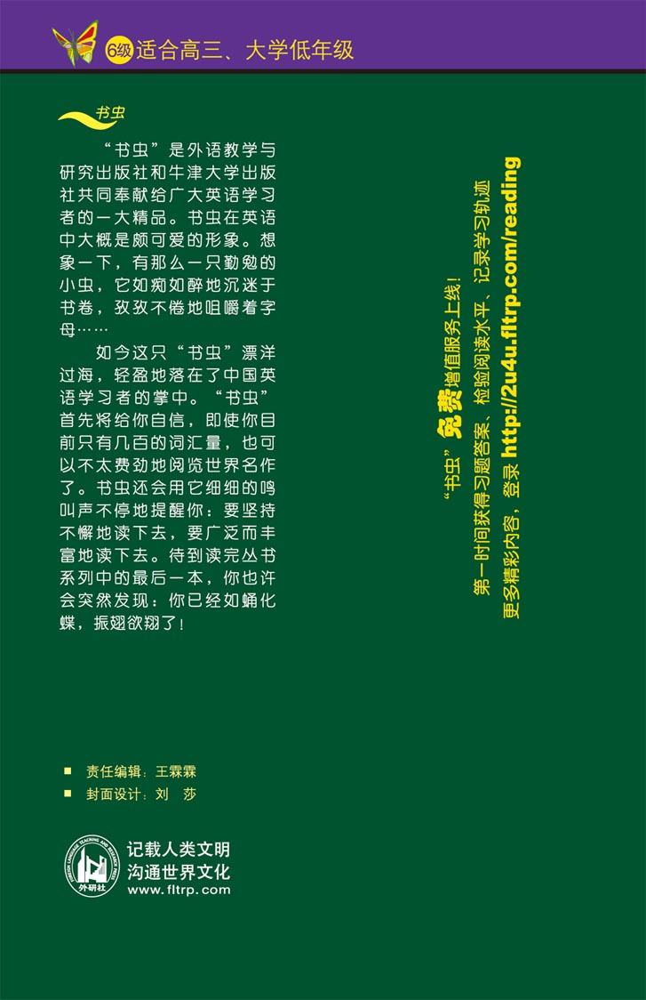